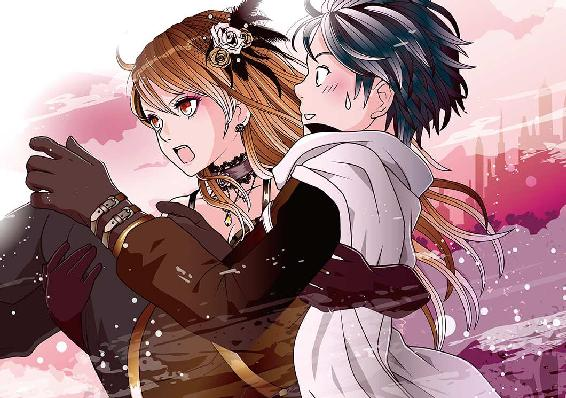
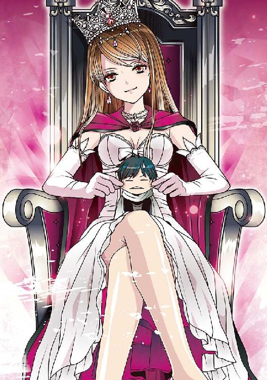
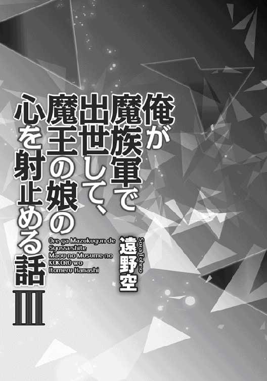
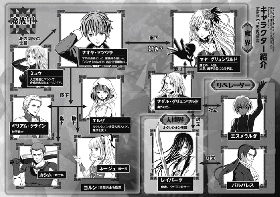
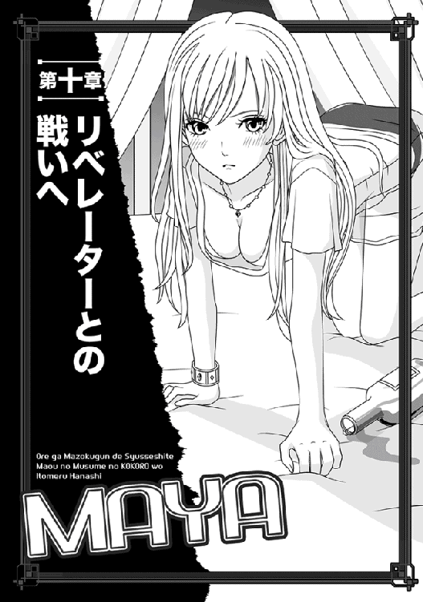
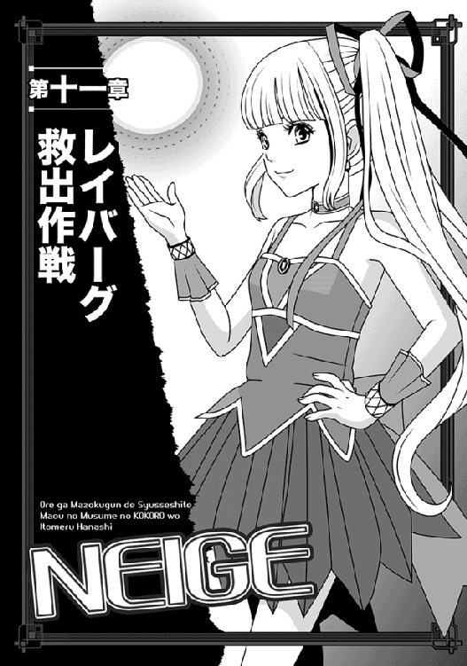
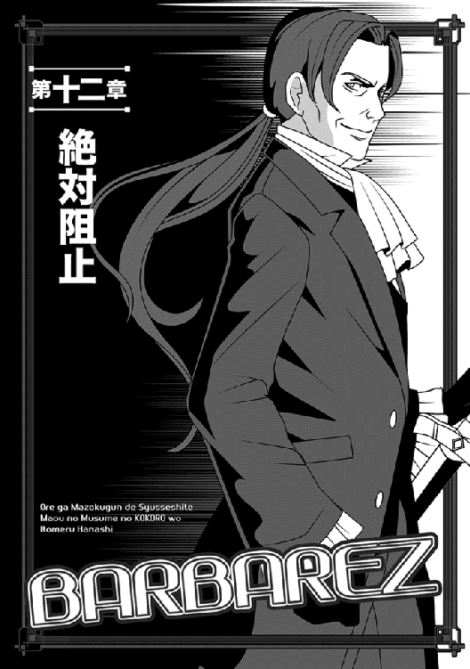
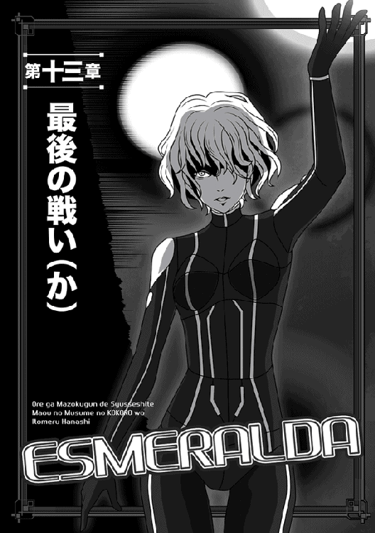
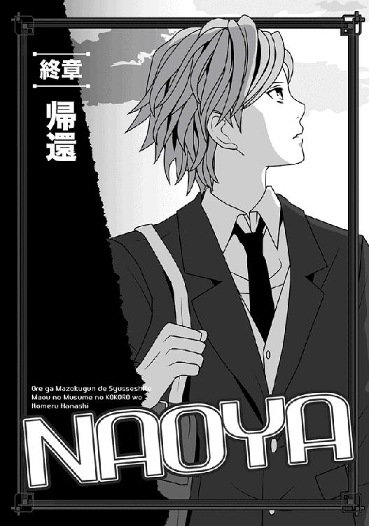
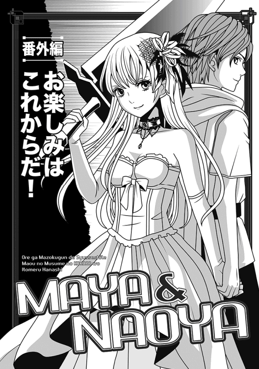

| 俺が魔族軍で出世して、魔王の娘の心を射止める話III | |
| 遠野空 | |
| (2015) | |
突如異世界に飛ばされた元中学生・ナオヤは、魔王の娘・マヤの直属軍を率いて、順調に成り上がる。だが、新勢力「リベレーター」の女・エスメラルダの出現によって、魔界は大混乱に陥っていた。彼女の圧倒的な力の前に、ナオヤは何とか一命を取り留めたものの、意識を失ってしまう。 目が覚めたナオヤはマヤの配慮もあり、魔族軍で七階級UPの大出世を果たした。もはや、魔族軍に欠かせない一人のはずが、軍部内で簡単には認められず......。おまけに、人間界の勇者レイバーグまでがリベレーターに敗れたとの報告が入る。窮地に立ったナオヤが打ち出す、リベレーターとの戦いへ向けた秘策とは!?



Illustrated by Eri Kamijo
Designed by ansyyqdesign(yoko)


どうやら俺は、翌日の昼過ぎまで眠っていたらしい。
というのも、次に目が覚めた時は、カーテン越しに外がすっかり明るくなっているのがわかったからだ。
城内の客間に付属した寝室で休んでいたんだが、広すぎるベッドに起き上がった途端、ミュウが手で支えてくれた。
「まだご無理をなさっては」
そういやベッドに倒れ込む前に、出荷場に潜入したはずの、ギリアムやミュウ達を出してくれるように頼んでおいたのだった。
......それはいいけど、なぜかミュウはいつもの戦闘スーツみたいな格好じゃなくて、ちゃんとコルセットドレスなど着ていた。
「ミュウがこっちの服を着ているのを見るの、初めてかもなぁ」
「彼女──いえ、ダークプリンセスが、普通の服装をせよと言われるので」
どことなく不満そうにミュウが言う。
いつも穏やかなこの子が、こんな顔をするのは珍しい。
「......てことは、もう魔王城はこっちの手に戻った？」
「はい」
ありがたいことに、ミュウはしっかり頷いてくれた。
「私も後から伺っただけですけど、カシム戦士長がダークプリンセスについたことで、ファルシオン伯の部下達は全員が、逃げるか降伏したそうです」
「そうか......ちょっと安心したかな......て」
それはともかく──ミュウが座る後ろの方に、メイドさんの格好をした誰かが跪いているのに気付いて、俺はぎょっとした。
「な、何かな、あの人」
「それが......先程来たのですが、『ナオヤ様がお目覚めになるまで、お待ちします』と言って、動かないんです」
「ええと、何か俺に用でも」
謎のメイドさんに声をかけてみる。
「はい......伝言がございます、ナオヤ様。お目覚めしたら、すぐに伝えるようにとの、ダークプリンセスよりのお言葉です」
やたらと恭しい態度で、彼女は言う。
なぜか、顔すら上げなかった。
「マヤ様の......？ 俺、また何かやらかしましたかね」
恐る恐る訊くと、静かに首を振られた。
「おそらく、逆ですわ。ダークプリンセスがつい先程、臨時の軍議を開き、今回の帝都での戦いにおける論功行賞を発表なさいました。その結果、ナオヤ様は今後、戦士将に昇格となった由にございます」
「へー......そりゃまた......急な出世......て」
待て、ちょっと待て！
「戦士将！ 戦士将って言いました!?」
メイドさんが一層頭を下げて頷くのを見て、俺は肝を冷やした。
戦士将ってあんた......確か俺の乏しい知識からすると、魔界の序列でも上から四番目くらいだぞ。その上と言ったらもう、大師と神将と魔神将しかいないし！
もちろん、支配者である魔王陛下とマヤ様を除いて。
（マヤ様は次期魔王なのに加え、陛下ご本人の思し召しで、日頃から魔王陛下とほぼ同格扱いである）
途中の階級を......え〜と......うわ、七階級くらい飛ばしてるよっ。
軍曹がいきなり中将になったようなもんだっ。
声もなくあわあわしている俺は、なぜか喜ぶ前に冷や汗がどっと背筋を伝った。
ミュウなどは輝くような笑顔で、「ナオヤさんの立場が強化されて、嬉しいですっ」と子供のように喜んでくれたが。
俺はひたすら焦っていた。
いやだって......これは、各方面からガンガン苦情と嫉妬が寄せられそうやん？
大いにびびった俺だが、使いのメイドさんが「マヤ様が『もし具合がよいようなら、軍議の間に来てほしい』とのことです」と伝言を教えてくれたので、早速、服を着替えて向かった。
いや、怪我はもう治癒されているし、よく眠ったせいか全然問題なさそうだし。
......どうでもいいが、服装は向こうの指定で金線が入った、貴族が着るような裾の長い上着だったりする......クラバットまでついてて、このネクタイもどきもしなきゃいけないのか......実質、中坊の俺が。
まあ、用意されているのに着ないとマヤ様がへそを曲げるかもしれないので、やむなくミュウに手伝ってもらって着たさ。
「お似合いです！ 風格がありますわっ」
着替えた後、ミュウはそんな風に言って軽く手を叩いた。
なんか、どんどん人間臭くなるなぁ......この子。いや、いいことだよな、うん。
「じゃあ......ちょっと行ってくるよ」
「はい。ここでお待ちしてます」
「あ......はい」
ミュウが一礼するので、俺も思わず低頭した。
この辺が全然新婚っぽくないところだ。
○────○
で、不慣れな城内をメイドさんの案内で軍議の間に着いたが......案内役のメイドさんは、「私はここまでしか許されておりません」とか言って、戻ってしまった。
なんか心細いが、身分制度の厳しい魔界なのでしょうがない。
まさか入った途端、お偉方が並んでるわけでもないだろうさ。
「ナオヤ・マツウラ、参上しました。入ります！」
衛兵が左右にいるので、一応俺は声を張り上げてから扉を開けて中へ入る。
......でもって、後ろ手に扉を閉めたところで固まっちまったね。
馬鹿みたいにデカい長テーブルがいきなりでんっとあり、上座にマヤ様が一人で座っている。まあ、これは予想していたのでいい。
......よ、よくないのは、その左右にエラそうな軍服やら礼服やらを着た、見るからに「身分の高そうな人」がずらら〜っと並んでいたことだ。
しかも、俺が入った時点で、一斉にこっちを睨みやがる。
つか、マジで入った途端に「お偉方」が並んでるやんっ。
意外性強すぎて俺が立ち尽くしていると、マヤ様が遥かな上座から嬉しそうに呼んだ。
「うん、来てくれたのだな！ よしよし、マヤの右隣に来るがよいぞ」
「は......はぁ」
何とも気弱な返事を返し、俺は言われた通りにマヤ様の方へ行く。
いや、そこまで行くのにすげー距離があったような気がしたねっ。どうも身分順に並んでいるらしく、このおっさん連中と来たら、数十名ほどもいたんだな。
ようやく上座に着くと、偉いさん達はみんな背筋を伸ばして座っているのに、マヤ様は一人だけ剛胆な格好で座っていた。
ミニのワンピースに見える漆黒のドレス姿なのだが、大きな椅子の上に片膝を立て、その膝を両手で抱えて座っている。
まるで、友人とだべっている体育座りみたいな感じ。
スカートなんで、下手するとパンティーとか見えそうで、心臓に悪い。
いや、俺が見る分にはともかく、他のヤツに見られると腹立つ。
......などと考えつつ、これまた素直にマヤ様の隣に座った──のだが。
よく考えたら、支配者の右横に座るってのは、魔界ではそのままその人の右腕に当たるってことだぞ！
慌てて立ち上がろうとしたら、マヤ様に途方もない剛力で無理にまた座らされた。
「いたたっ」
「動かず、じっとしているがよい！」
「しかし──」
「ナオヤ殿っ」
いきなり呼ばれ、俺はさらに右......じゃなくて斜め右前を見た。
ちょうど、長テーブルの右列、最初の一人目が座っているのだが、この人だけは顔見知りで、カシム戦士長だった。
このおっさんはもうなんのこだわりもないのか、俺を見て厳つい顔でニカッと笑っていたりする。
「もう元気におなりのようですな！ 胸を撫で下ろしましたぞっ」
「は、はあ......ていうか、カシムさんも呼ばれましたか」
「そうですが、ナオヤ殿──わしのことは呼び捨てでお願いします」
いきなり居住まいを正し、カシムはこの上なくはっきり述べた。
「親しき仲であっても、序列は守らねばなりません故」
顔をしかめて見返したが、むちゃくちゃ本気そうだった。あと、むしろ嬉しそうに見える。真実を知ったせいか、もう以前の反抗心は微塵もないらしい。
「いやぁ、カシムさんはよくても、ここに集まっている皆さん、みんなすげー不満そうですが」
俺がモソモソと言うと、マヤ様が悪戯っぽい顔で頷いた。
この方がこういう笑い方をする時は、だいたい後で面倒ごとに巻き込まれるのだな......主に俺が！
「そう、実は今呼んだのは、その件もあった。まずはそちらを片付けよう。──この者達は、マヤがナオヤの階級を上げたことが、気に入らないそうでな。そこのカシム以外は、全員が文句ばかり言うのだ」
「ええっ」
いきなり各方面から苦情かい！
言われると思ったけど、もう少し後だと思ってたよ。そんなのに限って早いよっ。
俺は内心でうんざりして、お偉方をぐるりと見渡した。
「別に俺はマヤ様の近くにいられたら文句ないので、身分なら元のままでもいいんですが」
何気なく言ったら、いやぁみんな一転して意外そうな顔になり、次に顔中で笑いやがったね。
「おお、その奴隷上がりはなかなか分をわきまえてますなっ」
「左様、左様。本人がそう言うなら、確かに揉めることはありませぬ」
「元の身分に──いや、元の特等戦士も過剰な身分ですが、まあそこは目を瞑りましょう」
「そして、新体制については、また改めて協議するということで──」
偉いさんどもが勝手なことを言いまくってる途中で、マヤ様がいきなりテーブルをぶっ叩いた。
「悪戯に口を動かすな、腰抜け共めえーーーーっ!!」
ドガッと凄まじい音がして、マヤ様の前のテーブルが木っ端微塵になった！ もちろん、テーブル上にあった飲み物のグラスなんかはどんどこ宙を舞い、周囲のヤツらに中身をぶちまけてくれた。
相変わらず、嘘みたいな怪力だな、この人っ。
あと、俺にまで破壊されたテーブルの切れっ端が飛んで来て、危うく目に刺さるトコだし。
「あぶっ」
ひやっとして胸を撫で下ろしたが、本人は聞いちゃいない。
その場ですっくりと立ち上がったマヤ様は、しかし相変わらず美しかった。輝くばかりの金髪を手で払い、魔王陛下譲りの真紅に染まった瞳でぎらりとおっさん連中を睨み付ける。
本物の女神みたいに、威厳があるし。
俺みたいに萎縮するどころか、おっさん連中の方がびびって目を逸らしてたね。
「貴様達の行動は全て調べた。我が大馬鹿のイトコ殿に密かに荷担した者が三分の一、ただ屋敷に閉じこもり、中立を保った者が三分の一、残りの三分の一はイトコ殿に身分を返上する使者を出して助命を願ったそうではないか！」
「な、なぜそれをっ」
迂闊な誰かが口に出し、慌てて口元を押さえた。
「強者と見るや、途端になびく者は多い。マヤが魔王城を回復した途端、かつての敵が雪崩を打って協力を申し出てきている。それ故、調べるのに不自由はなかったぞ」
最初の元気が嘘のようにテーブルを見つめて動かないおっさん達である。
しかし......なるほど、それで大勢が決まった途端、こいつらはぞろぞろ出てきたわけね。いやぁ、わかりやすいな。
「とはいえ、おまえ達の言う通り、この昇格が急なものであることは事実だ」
いきなりマヤ様はにんまりとほくそ笑んだ。
「そこで、チャンスをやろうではないか──ナオヤ、立つがよい」
──へっ。
言われた通りに立ったものの、俺はもう最高に嫌な予感がしていた。......またロクでもないことを考えたな、この方はっ。
「そう嫌な顔をするでない」
マヤ様は苦笑して肩を叩く。
「今のナオヤなら、どうせすぐに終わる。──マトルカス、立てっ」
いきなり諸将の一人を呼ぶ。
「お、お呼びでしょうや？」
あからさまに警戒顔で立ち上がったのは、カシムと似たような雰囲気の、顔中が傷だらけのおっさんだった。
いやぁ......魔界は男性至上主義らしいから、上の方へ行くと野郎ばっかで華がないよなぁ。一人でがっかりしてたら、マヤ様が言う。
「マトルカス、おまえはどうやら馬鹿イトコ殿に与した側で、戦況が危ういと見てさっさと鞍替えしたようだが」
いきなりあっさりバラすマヤ様である。
無論、マトルカスとやらは唾を飛ばして反論した。
「め、めめっ滅相もない！ 私は元々、あヤツに胡散臭いものを感じていましたが、陛下もダークプリンセスも既に帝国側に殺されたと聞き、とにかく仇を討つまではと」
「もうよいっ」
ずらずら続く言い訳を、マヤ様はばっさりカットする。
てんから信じてないのは明らかだった。......まあ、俺も大嘘だと思うけど。
「今は貴様の行状を云々するのではなく、ナオヤの昇格が正統かどうかを論じているのだ。......貴様は少なくとも、その諸将の中では一番、腕がマシだ」
途端に、むっとして立ち上がろうとしたカシムに駆け寄り、俺は慌てて耳打ちする。
『カシムさんは数の中には入ってませんよ！ もはや貴方は敵側と見なされてないんです』
「はっ......これは恐縮です」
俺になだめられ、カシムはほろ苦い笑みを浮かべた。
「あのデカブツに後れを取るほど衰えた覚えはなかったので、つい」
『わかってますって。とにかく、今のマヤ様にとってはあの人達はもう敵だし、勝ち気なマヤ様としては、その敵共をへこませることしか考えてないんです。俺にはよくわかるんですよ』
『なるほど......さすがに、あのダークプリンセスと上手くやっていけるナオヤ殿ですな』
最後はカシムのおっさんまで囁き声になっていた。
「ナオヤ、何をカシムとコソコソ談判しているっ」
叱声を受け、俺は慌ててマヤ様の元へ戻った。
「はいはい......いや、ちょっと雑談です」
「主君のマヤが話してる最中に、他人と雑談するな、馬鹿者」
戻るなり、拳でこつんと頭を叩かれた。
実はこれも、本気で腹を立ててない証拠である。もし本気なら、今頃、俺の頭蓋は割れるかヒビが入っている。
よって、俺はマヤ様の可愛い膨れっ面を見てニコニコしてても大丈夫なわけで。
「何をニヤニヤしているのだ、気持ち悪い。......早く、刀を抜かぬか」
「えっ」
意外なことを聞き、俺は顔をしかめた。
「本気で聞いてなかったな、ナオヤ」
マヤ様はしんねりと俺を見やり、ずびっとマトリョーシカ──じゃないや、そりゃロシア製の人形か。えー、マトルカス......だっけ？ とにかくそいつを指差した。
「あいつを倒し、おまえの腕を全員に見せてやれ」
「うわぁ......なるほど、そんなこと考えてましたか」
俺は脱力して呟く。
この人らしい解決法だわな......これを予測できなかった俺、まだまだ甘いな。
「ふっ......そういうことなら、望むところですな」
白い礼服を来たマトルカスは、いきなり嘘のように元気を取り戻した。
ギリアムみたいにオールバックにした金髪を撫で、にやりと笑う。うわ、デカいなこの人。多分、身長が１８５以上はあるぞ。
「戦士長マトルカス、ダークプリンセスの御前ではありますが、この小僧に年季の違いを見せてやりましょうぞ！」
とっさに、「いや、俺は了承してませんよっ」とやかましく反対しようとしたが......彼をじっと見ていて、違和感を覚えた。
いや......実に押し出しのいい戦士だと思うんだが......なんかあんま強そうに思えない。
正直、エスメラルダやレイバーグを前にした時に感じるチビりそうなプレッシャーとか、微塵も感じないんだな。
「ふふ......これはナオヤにとってもよい機会だし、魔界の腑抜け共にもよい転機となろう。見せてやれ、ナオヤ。おまえが、既にこの者達など敵ではないことを」
きらきら光る瞳が、完全に真紅に染まっている。
相変わらずドＳなマヤ様である。絶対、あのおっさんが血反吐吐くのを期待してるよぉおお。でもこの人、言っちゃ悪いけど、あんまり強くないでしょうがー。そんなのぶつけるって、性格悪すぎるっ。
「まあ、マヤ様の命令とあればやりますけど......殺しちゃうのは嫌ですよ。一応、同じ陣営ってことになってんだし」
などと人が親切に言ってんのに、マトルカスとやらはかえって激怒しちまった。まずかったな、もっとヤワく言うべきだった！
「奴隷上がりの小僧があっ。魔界屈指の実力を持つ俺に、なんという言い草かあっ」
床に落ちたグラスがビリビリ震えるような怒声を放つと、いきなり抜剣して襲いかかって来やがった。
しかし、俺があっさり身を捌いて避けたせいで、こいつの斬撃は無駄に空を斬っただけである。むしろ体勢が崩れて、上半身がガラ空きだ。エスメラルダなら、五〜六回はこの間に反撃して斬りまくってる気がするな。
......なんて考える余裕さえあった。
で、そんなことを考えつつ、せっかくだから振り上げた刀を巨体の首筋に叩き込んでおく......もちろん、峰打ちで。
よろめいたところへ受けたもんだから、マトルカスとやらはべしゃっと床に潰え、ビクビク痙攣した後、動かなくなっちまった。うわ......なんか思ったより向こうのダメージ大きいな。
俺はヤケに静まり返った室内を見回し、頭を掻いた。
「いや、俺はちゃんと手加減......したんですよ？」
「あっはっは！」
「おぉ、これはこれはっ」
葬式会場みたいに静まり返った中で、陽気に騒いでいたのはマヤ様とカシムの二人だけである。いやカシムは笑顔で「いやぁ、また腕を上げられましたなっ」と感心したように言ってくれたのだが、マヤ様は両腕を腰に当てて顔を上向け、文字通り哄笑している。
そこまで笑わんでもと思うがなぁ。今更だが、この人には悪いことした......恥をかかすつもりはなかったんであって。
あと、誰も医者（ここでは薬師だが）を呼ぼうとしないのが、さすがに魔界である。
「うむ、よくやったぞ、ナオヤ」
マヤ様は上機嫌で、俺の肩に手を回し、グラグラと揺すった。
「久しぶりに痛快で楽しかった。見るがよい、あの血の気の引いた顔を。己の分を知るのは自分達の方だったな、この穀潰しの腰抜け共め」
死者に鞭打つ、この追い打ちセリフ！ 容赦ないよ、この方。
まあ、この方らしいけど。
「い、いえ......そもそもこの方、実はほとんど戦の経験なかったんでしょ？ いや、それを言うなら、カシムさん以外の他の諸将も」
俺は他に聞こえないよう、ひそひそとマヤ様に囁く。
「だって、ざっと見たところ、強面の顔は置いて、あんまり強いって気がしませんし。なんていうか、緊張感を感じないんですよ、見てても。だから、戦では後方指揮専門だった──とか？」
マヤ様を俺の顔をつくづく眺め、盛大にため息をついた。
......関係ないけど、野郎の息はひたすら臭いのに、この方の息はやたらよい香りがするなっ。思わずすーはーしたくなる......いや、殴られるからホントにしないけど。
「そろそろ、気持ちを入れ替えるがいい、ナオヤ」
マヤ様は俺の肩を結構な勢いで叩いた。
「あの者達は、正真正銘、実戦部隊を率いる諸将だ。彼らの実力が落ちたわけではない。逆だ、おまえの実力が途方もなく上がっているのだ、ナオヤ」
「......マジっすか」
俺、てっきりこの人達は全員、名ばかりの後方指揮かと。
なおも疑惑を表明しようとしたが、マヤ様はもう相手にせず、顎を落としたままの彼らを睨んだ。
「見ていたであろう。最近はなぜか忘れている者が多いかもしれぬ故、再度言っておくが。この魔界は、完全な実力主義だ！ 文句がある者は幾らでもチャンスをやるから、名乗り出るがいい。別に全員でもいいぞ。ナオヤが相手をするであろう」
ええっ、俺がぁ？
こっちの抗議の表情など無視し、マヤ様はざっと彼らを見渡し、即続けた。
「異論がないなら、とっとと去れ！」
──いや、なんで相手するのが俺やねんっ。
思わず大阪弁で思っていた俺だが、幸い「なら今度はわしがっ」などと名乗り出る者も、一斉にかかってくる気配もなかった。
なんか知らんが、みんな魂を抜かれたような顔でしおしおと出て行ってしまいやがんの。
いやぁ......さすがに全員でかかられたら、ヤバかったと思うけどなぁ。
首を傾げる俺には関係なく、諸将は全員が逃げるように退出してしまい、倒れていた大男は衛兵が来て左右から抱えて連れ出して行った。
三人だけ残った軍議の間を見渡し、マヤ様は機嫌よく頷く。
「うん、だいぶ風通しがよくなった！ ほら、二人共、席に戻るがよい」
「いやいや、風通しよすぎでしょ！ 二人しか残ってませんがっ」
あと、今退出していった人達も、別に納得してないと思うんだな。自分の私邸に戻ったら、早速ねちねちと悪巧みを始めそうだ。
言われた通りにまた座った俺は、いの一番にそれを指摘する。
マヤ様はあっさり頷いた。
「うん、マヤもそう思う。......だから、既に先制してある」
「は？」
「鈍いヤツだな、ナオヤ。マヤは馬鹿ではないぞ。姑息で小心なあ奴らが、何を考えているかくらい、教えてもらわずともわかる。だからカシムに命じて、既に屋敷へ兵士を派遣しておいた。そもそも、今回の件でも処罰せねばならぬしな」
「ええっ」
カシムを見ると、おっさんは重々しく頷いてくれた。
「確かに、部下を派遣しましたぞ。あの者達に限らず、一族郎党は連帯責任で全ての役職を解雇し、財産も半分を没収せよとの、マヤ様のご命令ですでな」
うわ、厳しいなっ。しかし......まあ、放置しとくと、絶対悪巧みしそうだしなぁ。殺さないなら、解雇と財産半分没収は妥当な線か。所詮、俺はマヤ様至上主義なので、この方に悪影響がありそうな彼らに、さほど同情はしないのだった。まあ、ファルシオン伯の謀反を黙って見てただけでも、罪は重いだろうし。
「さて、ナオヤが納得したところで、今後の相談だが......その前に、おまえのレベルを見てみよう、ナオヤ。よいか？」
「え......ああ、俺は別に。普段は全然見てないんで、そういやそろそろ気になりますね。じゃあ、ステータス前面表示」
例によって、透過スクリーンみたいなのが目の前に出て、現在のレベルやら細かいステータスを教えてくれた。
めんどくさいので、ＨＰとＭＰだけざっと見たが──。
「......レベル30で、ＨＰ５５２１、ＭＰ３１４０──て。なんか景気よく上がってるような。最後に強敵と当たったからかな」
「おおっ、これは。わしはとうとう及ばなくなったようですわい」
カシムがまたなぜか嬉しそうに言う。
そして、マヤ様はなぜか男のように腕組みして唸った。
「むう......想像以上だな。マヤも抜かれたようだ」
「ええっ」
つか、貴女もレベル設定なんかあったんですか！
俺が驚いて見やると、マヤ様はあっさりと見せてくれた。
「おまえ達には見せても差し支えあるまい。......ステータス前面表示」
「うわあっ」
「なんと！」
俺とカシムの声が重なる。
マヤ様のステータスはこんな感じだった。
『レベル28 ＨＰ１５４２０ ＭＰ９８７０』
「ヒットポイントが万オーバーって！」
さすがは、魔王の一人娘っ。
この人の暗殺とか、ホントは心配ないんじゃないかーーっ。
「ＭＰも桁外れじゃないですかっ。なんでこれで、俺の方がレベルが高いんです!!」
「よく見るがよい。他のパラメーターでは、筋力以外は全て負けている......」
なんだか面白くなさそうにマヤ様は言うが。
そ、その筋力値は、実に俺の八倍もあるんですが!? 超人ハルクですか、貴女は。
数字的にもクソ力が実証されたよっ。
いや、そりゃ確かに瞬発力とか持久力とか、他の細かいパラメーターは全部俺が勝ってるっちゃ勝ってるけど。
正直、この人が敵だったら、ヒットポイントの差だけで、俺なら絶対に逃げるぞ。
「ナオヤ殿は、才能値が圧倒的ですな。ダークプリンセスとのレベル差は、それが大きいでしょう。ここまで高い数値はわしも見たことがないですわい」
「は......才能値？ そんなのあるんですか。前はなかったような」
「最初は全員不明ですぞ。計測可能になるまでに時間を要するのですよ、あれは」
「......マヤは一目で見抜いたぞ」
いや、自慢そうなマヤ様は置いて。
俺は顔をしかめてステータス画面を見直した。
ああ、確かに隅っこの方に「才能値」ってのがあるね。いや、ＳＳ−６とか書いてある。記号は多分、魔界のぐにょぐにょした独特の記号を、英文字に直したらこうなるってことなんだろう。
全てはリングに宿る、言語変換の魔法のお陰だ。
「元々、才能値はＧ−１が最低レベルだが、ナオヤは突出してる。さすがにマヤの見る目は確かだ、うん」
自画自賛して、席上で思いっきり胸を反らすマヤ様である。
あ、なんかそうすると胸のポッチが少し窺えたりして、腰にずきんと来るな！ この人はまた、ブラもどき（ブラジャーみたいな下着がここにもある）を着けず、素肌の上に直接ドレス着てるな。けしからんぞー！
などと俺が一人でドキドキしていると、カシムもわざとらしく唸った。いや、本気かもしれんけど。
「わしはＤ−77ですからなぁ......ぬうう」
なぜか寂しそうである。
「......好奇心で訊きますけど、Ｇから始まって、記号はどれだけあるんです？」
「記号というか、それはクラスだ。計測した才能を示すクラスがＧからＡまであって、それぞれ才能開花の進展を示す数字が１００ずつある。数字は開花度数とも言うが、要するにわかりやすくした指針のようなものだ。そのまま現在の才能開花度を表すと思えばよい。才能がＤクラスで数字が77なら、カシムの才能はそろそろ成長しきったということだろう。長寿の魔界の住人といえど、普通は１００まで行かぬうちに寿命が来るはずだからな」
例によって、マヤ様はずばり宣告した。
「当然、Ｄがさらに上のクラスであるＣに上がることは、まずないと思ってよい。ほぼＤのままで一生を終える」
「うう......」
追い打ち食らったカシムが、哀しそうな顔で半ば壊れたテーブルを見つめる。
「いやぁ......しかし才能を示すクラスがＡで上限なら、俺のＳ二つはどういうことです」
じゃなくて、カシムですらＤクラスって、計測が厳しくないかぁ？
「そこがマヤも驚くところだ」
身を乗り出して、やたら熱心に言う。
さすがに「あ、胸元が見えそう」とか考えるとまずいな。俺は顔に出る。
「Ｓはそもそも、父上とこのマヤだけが持っていた才能クラスで、一応は計測のために設けてあるが、該当する者が出た試しがない。ナオヤが初めてだぞ。しかもＳＳとなると、マヤはおろか、父上ですら及ばぬ。父はＳ−85で、マヤがＳ−18だからな」
「へぇ......となると、マヤ様はまだまだ伸びる余地があるんですね。当然ですか」
「まあ......その通りだし、そこはマヤも大いに自慢したいところだが」
マヤ様は呆れ顔で俺の顔を見た。
「ナオヤはしかし、驚かし甲斐がないな。おまえは父上より才能が上ということなのだぞ。魔王その人より底知れぬ才能があるのに、もっと喜ばぬか」
そりゃ貴女、俺は最初っからそんな怪しい数値、信じてませんし！
ＨＰやＭＰまでならともかく、そんなオカルト、矢追さんでも信じないよっ。
もちろんそんな本音は置いて、俺は話を戻して差し上げた。
「まあ、才能についちゃこれからの楽しみってことにして、今後のことを話し合いましょう。現状、魔界はどうなってます？」
何気なく言うと、途端に軍議の間が緊迫した。
というより......なんかどんよりと空気が重くなった。
元気に話していたマヤ様も、滅多に見せない憂い顔になったほどだ。
「それだが......よい意味での進展はない」
渋々といった感じで、マヤ様は言う。
「こそこそ城内に隠れていたリューゲルを見つけ、早速尋問したが、あ奴も大したことは知らなかったな。せいぜい、あのエスメラルダとかいう女の仲間が、最低でもあと一人はいるという事実くらいだ」
うわ、まだこっちに仲間が来てるんかいっ、とぞっとした俺だが──。
リューゲルって名前がすぐに思い出せず、顔をしかめる......あ、そうか、例の馬小屋で俺が尋問したおっさんだな。
「隠れ家とか、あるいは呼び出す方法とか追い出す方法とか、そういうのはまるで知らなかったわけですね？ いえ、俺が訊いた時も、大したことは何も知らなかったようですが」
「まあ、ヤツは死んだし、もうどうでもよい。それより──」
「待って待って！」
慌てて俺は突っ込む。
今、さらりと残酷なこと聞いた気がするぞ。
「リューゲルは、既に死んでいる？ 処刑したんですか？」
「うむ、何も知らないようだし、生かす値打ちもないからな。もう殺したぞ。そもそもあいつは、反逆罪ではないか」
しゃあしゃあと言って全く悪びれないマヤ様である。
「カシムのように改心したわけでもなく、またしても城内に隠れていたくらいだ。生かしておいてなんとする？」
「いや......まあ、そう言われたらそうですけど」
俺、こう見えても一応は法治国家ってことになってる国から飛ばされて来ているわけで......そういう風に「もう殺したぞ」とかケロリと言われると、そりゃ驚くよ！
そういうことすると、普通は人権団体とかア○ネスとかから、鬼のようにドヤされる。
まあ、ここは民主国家でもなきゃ法治国家でもない、一種の独裁国家だけどな。
「とにかく、処刑したヤツのことなど、もういい。それより、父上がどこを探してもおらぬっ。おまけにリューゲルも、父上が死んだと聞いただけで、実際には何も見てないそうなのだ。一体、どうなっているのか」
思い出すと苛々したのか、マヤ様は爪を噛む。滅多に見せない仕草で、この方の心中が窺えた。
そうかぁ、マヤ様はまだ魔王陛下の死を信じてないのだな......まあ、それは俺もそうだけど。
「ナオヤ」
気付けば、隣のマヤ様が俺を覗き込むようにじいっと見つめていた。
「実は何か知っているのではないか......父上のことも」
「あ、いえ。魔王陛下の所在についちゃ、俺は本当に何も知りません。知ってたら、マヤ様に秘密にしませんよ」
俺は慌てて手を振った。
一応、嘘ではないのがミソである。ただ、エスメラルダが「この私が自ら倒したもの」とか吐かしたことを、黙っていただけだ。
「幸い、こうして城も奪い返したのですし、今後は魔界の総力を挙げて、その所在を突き止めましょう。リベレーターに協力していた連中を一人ずつ尋問すれば、何かわかるかもしれません」
「うむ、そうだな......もちろんそうするとして」
とマヤ様に加え、今度はカシムも俺を見た......問いかけるような眼差しで。
「なんですかー」
「その、リベレーターですよ」
カシムがずばり答えた。
「その呼び名、わしもプリンセスも初めて聞きますぞ。あのエスメラルダとやらがそうだとして、一体、どういう連中ですかの」
「あ、そうか......うん、そうですね、そこを言わないとな」
俺は頭を掻き、決断した。
陛下には「最悪と思われる状況以外は、なるべく秘密にせよ」と言われていたけど、今って結構、最悪だと思うんだよ！
そこで、遥か昔の侵略者と、陛下とその仲間が彼らを追い出した話をしよう──としたんだが、タイミングを合わせたように、外から衛兵の声がした。
「マヤ様っ！ 放っていた斥候が戻り、戦況についての報告をしたいとのことですっ」
「通すがよい！」
即座にマヤ様が答えた。
戦況ってなんだよと思ったものの、すぐに思い出した。
俺が苦し紛れの計略を立て、魔界とルクレシオン帝国をぶつけたんだった。うわ、確か魔界からは五千ほどの軍勢が、ルクレシオンへ向かってたんだよな。迂闊なことに、今の今まで忘れてたぞ！
戻って来た斥候だって、元々は俺が放ったんだよな。
──さては、あのレイバーグにコテンパンにのされたかぁああああ。
嫌すぎる巨大な可能性に気付き、俺は本当に血の気が引いたね。
そうだとすれば、この帝都マヤもヤバいっ。押し込まれるじゃないか。
「あれから、呼び戻さなかったんですか？」
こっそりマヤ様に訊いてみたが、なぜか微妙な表情で首を振られた。
「使者は出したが──いや、後で話す。まずは報告を聞こう」
両開きの重々しい扉が開き、武装したままの斥候が入ってきた。
俺達に一礼すると、彼はその場で片膝をつく。
「申し上げますっ。ルクレシオン帝国と魔界の反乱軍の激突は、ルクレシオンの敗走で決着しました」
「......は？」
俺は思わず立ち上がってしまった。
「ちょっと待って。じゃあ......レイバーグがいたのに、ルクレシオンが敗れた？」
斥候の若者は、重々しい表情で頷いた。
「実際は、それどころではありませぬ。敵将レイバーグは、リベレーターを名乗る男に斬られ、重傷を負っております」
──な、なんだってぇーーーーっ！
リベレーターのもう一人が、五千の魔界反乱軍に同行していたのも驚きだが。
それより、あのレイバーグが、敗れた!? モノホンの勇者でも、あいつらには敵わなかったんかーーっ。
俺は頭がクラクラして、本当によろめいた。
「お、俺の希望の星だったのにっ!!」
「それはどういう意味だ？」
マヤ様が不思議そうに問う。
「レイバーグは我らにとっても敵ぞ。それどころか、この騒動前は最大の敵だったくらいだ」
「いえ......まあだから、俺の勝手な皮算用だったんですけどね」
つまり、こういうことだ。
以前、この城内で出会った会話からして、俺はレイバーグはリベレーターについて何か知っていると思っていた。「この大陸の歴史を詳しく調べてみるといいよ」などとほのめかしてたし、俺が召喚されたことにも言及してたからな。
ついでに言うと、ルクレシオン帝国のベルグレム王は、はっきりとリベレーターについて何か知ってるはずだ。
なにせ俺が流した「魔界のファルシオン伯は、リベレーターと呼ばれるかつての強敵と和解し、彼らの力を借りて、近々、帝国に攻勢を掛ける模様」ってな偽情報に釣られて、まんまと軍勢を出したんだし。
でもまあ、会ったこともない他国の王はどうでもいいんだよ。
問題はドラゴンキラーの勇者、レイバーグだ。
今だから白状するが、俺はリベレーターのことを知らされて以来、密かに淡い期待を持っていたのである。
つまり、最終的には勇者（レイバーグ）が悪（リベレーター）を駆逐するであろう、みたいな希望を。
だって、勇者ってそういうもんやん？
もっと簡単に言うと、「でもレイバーグなら、レイバーグなら何とかしてくれるっ」とか「後はレイバーグが何とかしてくれるやろ」というような、清々しい他力本願である。
「それが......それが、あっさり倒されたって......俺の美しい他力本願を台無しにしやがって」
「だから、どういう意味なのだ？」
マヤ様が呆れた顔でまた言ったが、俺はふと思いついて、慌てて斥候の元へ走った。
「ちょっと訊きたいけど、一騎打ちで敗れたのか？」
「左様です」
斥候の彼は恭しく答えた。
「リベレーターを自称する男が、合戦の途中でレイバーグに挑戦し、ヤツがそれに応じたのです。しかし......勝負自体はあっけなく終わり、レイバーグは斬撃を浴びて倒れました」
「重傷を負ったレイバーグはどうなった？」
「はっ。どうやらリベレーターが捕虜として陣中に留め置いているようです」
「つまり......まだ生きてるわけね？」
「そうですね、今のところは」
訝しそうな顔ながら、彼は跪いたまま頷いた。
「ただ、怪我は想像以上にひどいと思います。助かったのは運がよかっただけかと。あれでは、いつまで生きているか微妙かもしれません」
「なるほど。......それで、五千の魔界反乱軍は、今どうしてる？」
「最後に私が見た時には、まだ陣を敷いたまま、動いてませんでした」
「そうか」
訊くだけ訊いた俺は、マヤ様達に他に質問がないか尋ねてから、労をねぎらって彼を下がらせた。
再び席に戻ってから、俺はマヤ様に尋ねた。
「......時に、さっき俺に『後で話す』とか言ってらっしゃいましたね。あれは何の話です」
「それだ。先程も申した通り、ナオヤが休んでいる間に、マヤはあの反乱部隊に使者を出した。口上はもちろん、ファルシオン伯の陰謀を明らかにし、マヤがまだ生きていることを説明し、一時帰還せよとの命令だ。しかし──」
「まさか......出陣した五千の兵は、撤退に応じなかった？」
元々、俺の適当な策に乗せられただけなのにさー。
「実際は、それよりもっと悪いですな」
カシムが深刻そうに口を挟む。
「ヤツらは不届きにも、帝都への帰還を命じたマヤ様の使者に対し、『マヤを打倒し、ルクレシオン帝国も倒し、この世界に新たな国を作る！ よって、魔王の娘ごときに指図は受けない。これは我々の総意である』などという口上を携えた使者を寄越しました」
「──ふざけるなっ」
いきなりマヤ様が、長テーブルの残骸を豪快に蹴飛ばした。星一徹も「あんた、そりゃやりすぎだろっ」と呆れそうな、容赦ないちゃぶ台返しである。
エラい飛距離で正面の扉まで吹っ飛んでいき、言語道断な音がした。
い、いちいちビビるんだよな、この人は。
「我が父が支配するこの魔界で、そこまで明確な反逆を起こした者は、ただの一人もいない。馬鹿イトコ殿ですら、父とマヤが死んだ前提でこそこそやっていたのだからな。本気だと言うなら、覚悟してもらおう」
真紅に染まった瞳でマヤ様が言う。
「この上はコトの真偽を確かめ、本当にヤツらが謀反を起こしたのだとすれば、五千の兵士全員、ことごとく首を刎ねてくれるっ」
......この人は本当にやるぞ。
俺は他人事ながら、ガクブル物だった。仮に五千が一万だろうと、相手が本気だとわかれば絶対に首を刎ねる。
多分、比叡山なんか鼻歌交じりで全焼させた上、ついでに近所の神社仏閣まで焼き払いそうな方だからなぁ。
ただ、俺としてはちょっと疑問でもある。
「俺が気になるのは、その使者の口上にある『これは我々の総意である』って部分です。普通に考えて、そんなことが有り得ると思いますか？ 仮に指揮官が反魔王派だとしても、五千もいりゃ、中には絶対にマヤ様や魔王陛下に忠誠心を持つ者もいるはずです。なのに、反乱が総意？ その使者、どこまで本気だったんでしょう」
「少なくとも、やってきた正使と副使の使者達、ヤツらは完全に本気だったな。自信に溢れ、目が据わっていた。総意というのがまるっきりの嘘では、あれほどの自信は見せられまい」
忌々しそうにマヤ様は歯軋りする。
まあ、その使者達がどうなったのかは訊かずに置こう......怖いからな。
「それって、もしかして一人だけ同行していたリベレーターの男に原因がないですかね」
二人揃って訝しそうに見たので、俺は説明してやった。
ついでに、リベレーターというのが過去の侵略者であることも説明する。
「──というわけで、魔王陛下の話では、ヤツらって最初はやたらと民衆に受けがよくて、解放者（リベレーター）って名前も、元々は民の方が付けた呼び名らしいんですよ」
「何らかのまやかしを使い、兵をたぶらかしているということか？」
「その可能性はあります。でないと、五千の兵がことごとく『新たな国を作るっ』なんて言い出したりしませんよ」
俺の話を聞き、当然ながらマヤ様とカシムは渋い顔をした。
もしそれが本当なら、安易に戦うわけにもいかないので、当然だろう。
「あの......俺に一つ提案というか献策があるんですが......お聞きになりますか？」
ここぞとばかり、俺は持ちかけた。
こういう難儀な見通しを語ったのは、これから持ちかける意見の伏線だったんだな。
「今更、何を遠慮することがある？ 言ってみるがよいぞ」
「では、お言葉に甘えましてっ」
マヤ様が興味津々で答えてくれたので、俺は意を強くして言った。
「この際、レイバーグを救い出しましょう！」
......おろ。
なんかこう、嫌な沈黙が。
いや、沈黙だけならまだしも、カシムとマヤ様の表情がすげーこう......呆れたというか、絶望的なんですが。
「何が悲しくて、最大の敵を救い出す必要があるのだ」
渋柿を囓ったような顔をしていたマヤ様が、やっと答えた。
「そこが間違いですよ！」
俺はここぞとばかりに声を大にする。
「現状、我々の最大の敵は、レイバーグなんかじゃない。リベレーターですっ。あんなのが数を頼んできたら、さすがの魔界もヤバいですって」
「まあ、あの赤毛女がなかなかの実力であることは認めるが」
マヤ様は渋々頷く。
「しかし、それとレイバーグ救出がどう繋がるのか」
「あいつは、おそらくリベレーターに関する何かを知っています。ベルグレム王から得た知識かもしれないけど、それでも多分、魔王陛下から聞いたばかりの俺より詳しいような気がします。となれば、ヤツらがどこからどうやって来たのか、知っている可能性もある。それさえわかれば、逆に対抗手段も見つかるかもです」
ファルシオン伯の家臣のリューゲルや、間諜を使った諜報活動の時も、俺はリベレーターのことはマヤ様の耳に入れなかった。
だからもちろん、この話もマヤ様は初耳のはずである。
実際、少し興味を持ったらしく、やや身を乗り出した。
「すると何か、父上だけではなく、敵国の王もリベレーターについて知っていたのか。......なぜ父上はマヤにお話しくださらなかったのか」
うおっ、なかなか鋭い質問がっ。
もちろん理由はあるんだが......それは俺が勝手に話していい秘密でもないんだよな。口止めされてるし。リベレーターについては話しちまったけど、さすがにこれまで話すわけにはいかないだろう。
「まあ、それは魔王陛下が戻られてから、お尋ねください」
しょうがないので、俺は素早く逃げを打った。
鋭いマヤ様は不審そうな目つきで、何か言おうとしたが──。
幸い、何やら考え込んでいたカシムが、タイミングよく割って入ってくれた。
「わしが把握したところでは、こういうことですかな？ レイバーグを救い出し、リベレーターの秘密を聞き出して、ヤツらに対抗すると？」
「そういうことです！」
俺は大きく頷く。
「今までの断片情報を総合すると、ヤツらも俺のように召喚されて他の世界から来ているらしいんですよ。となれば、逆にこちらへ来る手段を塞いでしまう手もあるかもしれない。レイバーグがその方法を知っていたら、大いに助かります」
「しかし、それはあくまで可能性の話だ。ナオヤの期待と違い、レイバーグは詳しいことは何も知らない可能性もある。違うか？」
「違いません」
両腕を広げ、俺は哀愁漂う笑みを広げる。
「しかし、我々は最低でも、既に二人来ているリベレーターの相手をする必要があります。エスメラルダとやり合った俺だから言うんですが、もしヤツらと戦うなら、せめて少しでも対抗できそうな戦士でないと喧嘩にもなりませんよ。レイバーグは、その数少ない一人でもあります」
「そうは言うが、レイバーグは既にリベレーターの片割れと戦い、敗れているぞ。善戦して敵を追い払ったナオヤとは違う」
マヤ様は絵に描いたような懐疑的な顔で言う。
つか、俺は善戦したと言うよりは、時間切れで救われた感じなんだが。
「そんな男に頼るくらいなら、数を頼んで対抗した方がよくないか」
「こっちの動きが静止して見えてるような相手だと、向こうが先制してきた時に危険ですよ。敵が、俺達の戦術に合わせてくれる保証はありません」
というより......実は俺はマヤ様が心配なのだな。
この俺でさえ、なんだかんだ言って魔王城に潜入できたわけである。
あんなとんでもない女がもしその気になれば......それこそ易々と入ってくるだろう。となれば、マヤ様の身が危ない。
ファルシオン伯のように暗殺される危険を無視できないのだ。
「マヤは馬鹿イトコ殿とは違うぞ......簡単に殺されはせぬ」
いきなり囁かれ、俺は飛び上がりそうになった。
「な、なんで俺が考えてることがっ」
フォースの暗黒面でも使ったんですか！
「ふふ......ナオヤがマヤの心配をしている時は、顔に出るからすぐわかる。ナオヤの表情はわかりやすい」
あんまり普段は見せないような微笑で、マヤ様が目を細める。
そっと二の腕に触れてきたりして、妙に緊張する場面である。いや、俺が悪照れしてる方が大きいかな。
あと、カシムが馬鹿みたいに口開けて、ポカンとこっち見てるし。
そこまで驚くなよ......マヤ様だっていつも怒鳴ってばかりじゃないさ。
「そ、それなら話は早いじゃないですか。ここはぜひ」
「うん、わかった。ナオヤがそう言うなら、その策を採ろう」
「えっ」
「なんと！」
俺とカシムの声がぴったり重なった。
いや、なんかあっさり聞き入れられて、かえって驚いたね！ 最初の感触だと、だいぶ説得に時間かかりそうだったのに。
「レイバーグを救い出し、情報を得る。まあ、理屈としては合っているし、ナオヤの言う通り、リベレーターとやらの対抗策が見つかる可能性もある。何もせずに座して敵を待つよりはよい」
ただし──とこの方は悪戯っぽい顔で続けた。
「その救出作戦にはマヤも同行する。これが条件だがな」
「むう」
半ば予想していたにもかかわらず、俺は唸ってしまったが。
しかし......今回に限って言えば、城で留守番してもらうより安心できる。俺が離れている間に、あのクソ女がまた来たらたまらんからな。言っちゃ悪いが、魔王陛下が不在の今、この城にマヤ様を守れそうな戦士はいない。それなら、いざとなれば相打ち覚悟の俺といた方がまだマシである。
というわけで、俺は恭しく低頭し、言った。
「わかりました。では、準備ができ次第、すぐに出発しましょう」
○────○
......すぐとはいえ、さすがに奪い返したばかりの城内が落ち着くのに、あと一日くらいはかかるということで、実際に帝都を出るのは明日になった。
まあ、それでギリギリだろうな。
なんせ、レイバーグの部隊を打ち破った反乱軍が、もしも帝都マヤじゃなくてルクレシオン帝国の帝都クレアールへ向けて進撃を開始すれば、追いつくのに少し時間かかるし。
あと関係ないけど、どうやら俺は一晩寝込んでたのではなく、二晩寝込んでたようだ。
治癒魔法で怪我の手当を急いだせいか、思ったより休んでたのな。
......とにかく、明日から始まる作戦のために、久しぶりにみんなを呼ぼうかと思った──が。
そんなことしなくても、戻ったサロンにギリアムを初めとして、ほぼ顔見知りが全員揃っていた。
「おぉ、ナオヤ様！ お元気になられたようで、祝着至極にございます」
城内のサロン（客間）にコの字型に置かれたソファーの一角で、まずはギリアムが立って深々と一礼する。
それはいいが、その横ですかさずヨルンが言った......両腕を頭の後ろで組んだナメた格好で。
「しっかし、出荷場で息を潜めて時が来るのを待ってた俺達、馬鹿みたいだったなぁ。知らない間に全部終わってやんの」
「こ、こらっ」
慌ててギリアムが制止したが、俺は笑って手を振った。
「いいっていいって。ヨルンの言うのも、もっともだし。──時に、良いニュースと悪いニュースがあるんだ」
早速自分もギリアムの正面に座ると、入れ替わるようにミュウが部屋を出ていく。おそらくお茶の支度をしてくれるつもりだろう。
「で、では悪いニュースから」
「良いニュースからってことでー」
ギリアムとヨルンが同時に言ったが、俺はギリアムの方を尊重して話し始めた。
「じゃ、悪いニュースから。......明日、早速新しい作戦を開始する」
覚悟したが、不満を表明したのはそれまでは黙っていた女性陣だけだった。
「あたしの買い物計画がっ」
スカート短めのチャイナ服みたいなのを着たエルザが言えば、ネージュも深刻な顔で頷いてくれた。
「十日は休めるかと思ったのにぃ」
「いや......今回は希望者だけでいいよ、うん」
俺は微笑してぽつんと述べた。
途端に顔を見合わせたみんなに、さっきの決定と話し合ったことを教えてやる。もちろん、秘匿していたリベレーターの話も教えてやった。
リベレーターについちゃ、策に使うデマに名前を使わせてもらったから、一応エルザなんかは先に名前を聞いてるが、まだどういう連中かまでは知らなかったのだな。
せいぜい、「えー、昔攻めてきたらしい種族？」程度の知識だ。
いや、それを言うなら俺も似たようなもんだけど。
「うわぁ」
全部説明した途端、まずはヨルンが息を吐いた。
「ナオヤについていくようになってから、ハードな日々だよな......ついに、レイバーグを破るような化け物が相手か」
「いや、だからさ、別に今回は」
「おいおい、こう見えて俺は友情に厚く、かつ忠義にも厚いイケメンだぜ」
失敗したロックバンドのボーカルみたいなご面相を自分で指差し、ヨルンはニヤッと笑う。
......とりあえず、歯を磨けよ。
「もちろん、今回もついていくさ。自分だけ安全圏にいるとか、俺の美学が許さねぇ」
「そ、そんなこと言われたら、あたしも行くしかないじゃないっ。残ったら卑怯者みたいだし」
ぷりぷりしながらエルザが唇を尖らせる。
逆にネージュは、微妙な笑みでそんなエルザを眺めていた。
「あたしも人に言えないけど、素直じゃない人がいるわよねー」
「な、なんの話よっ」
頬を赤くしたエルザがささっとそっぽを向いた。
「いぇえええ、別にぃいい」
「なにようっ」
「無論、この私も同行致します」
女同士で、バシバシと背中を叩き合うエルザとネージュを尻目に、ギリアムが折り目正しく低頭した。
「しかし、仮にレイバーグを救出できたとして、奴は我々に協力してくれますでしょうか」
「そりゃわからないさ」
多少不安だったことを指摘され、俺は顔をしかめた。
「でも、このまま座視していたら、多分俺達全員が死ぬと思うんだ」
さらりと答えると、見事なまでに場が静まり返った。
まあ......ギリアム達はあのエスメラルダの戦い振りを見てないからな。
「そ、そんなすげー相手なんか!?」
ヨルンがそう呻いて黄色い目を丸くしたほどだ。
「びびらせたくないけど、まぁなー。......でも、それは今どうこう言ってもしょうがないんで、とりあえず今度は良いニュースな」
ちょうど、飲み物を乗せたワゴンを押しながら、ミュウが戻って来てくれた。
「でもって、そっちは割と派手でみんなにも関係ある」
頃はよしとばかりに全員にコーヒーのカップが行き渡るのを待ち、俺は立ち上がってワイン代わりにカップを掲げた。
「今回の魔王城奪還で、マヤ様から莫大な褒美が出て、しかも俺は戦士将に昇進した！」
「うそっ！ いきなりそこまでっ!?」
ネージュを初めとして、たちまち歓声が上がった仲間達をぐるりと見渡し、ぐっと親指を立ててやった。
「当然、みんなにも惜しみなく金ばらまいて、身分もどっかーんと引き上げてやるからなぁーーーっ」
──ええと、俺の権限で許されるところまで。
と最後に付け加えた時には、既にヨルンとエルザの絶叫で声がかき消されていた。
「よっしゃああああああ。持ち家をキャッシュでぶっ建てて、綺麗どころの巨乳奴隷を大勢囲う野望が、これでまた一歩かぁああああ」
「あたしの宝石コレクションがまた増えるうううっ」
......こいつらの夢、即物的すぎ！
あと、ヨルンの目標がたまらんよな。
カップ掲げたまま、俺はソファーにへたり込みかけたね。
でもまあ......喜んでくれるならいいか。あんまり仲間に報いる機会もなかったしなぁ。
仲間と談笑して食事を共にしたりするうちに、夜になった。
早めに寝ておけとマヤ様から言われていたが......俺は休む時間になると、むしろ魔王城の上の階目指しててくてくと上がっていった。
別に階段使わずとも機械式エレベーターがあるけど、アレにはいい思い出ないからな。
当然、目的地は最上階──の一つ下の階にある、マヤ様の私室である。階数で言うと十二階だ。
でもって、十一階まで上がるとそれこそ山のように護衛の衛兵がいて、厳重に警戒していた。
うむ、よしよし......こうでなくてはな！
いや、警戒度を上げるように指示を出したのは、実は俺なんだけど。
「ご苦労さん、異状ないかな？」
「ははっ」
声をかけた若者は、驚いたような顔で俺を見た。
おっと......この刀傷の若者はどっかで見たなと思ったら、魔王城の突入まで一緒だったヤツだ。奴隷の護送中を襲って、俺が仲間にしたヤツだよな。
「戦士将様はどちらへ」
もう昇格の話が伝わっているのか、彼はやけに眩しそうに俺を見た。
「ああ......マヤ様に用事があってちょっと。それよりさ、当然ここだけじゃなくて、最上階の十三階にも護衛を入れてるよな？」
「もちろんです。ご命令通り、ネズミ一匹入れません」
「うん......ありがとう。それとご苦労様」
俺は笑って頷き、そのまま上がっていこうとする。
と、まだ名前も知らなかった彼は、いきなり呼び止めた。
「戦士将様！」
「......ナオヤでいいよ。どうかした？」
「いえその」
随分と言いにくそうに考え込んでいたが、やがて彼は決然と顔を上げた。
「ナオヤ様は、明日また、何かの作戦に出立するそうでありますが......もしよろしければ、自分もお連れくださいませんか」
俺が首を傾げると、慌てたように言葉を費やす。
「いえっ。別に城内の警備が嫌なのではなく、つい最近まで、図らずも裏切り行為を働いていたのが心苦しく、できれば何かのお役に立ちたいのです」
また実に優等生的なことを言うヤツである。
手抜きが多い魔族軍の兵士にしては、得難いヤツかもしれない。
「う〜ん......かなり危険な任務だし、死ぬかもしれないんだけど。いや、むしろ自殺志願も同然の気がするんだがな」
一応、どかんと脅しておく。
「覚悟の上です！」
即答かい。俺なら迷うけどなぁ......まあ、マヤ様関連「以外」の任務なら。
「わかった。ならついてきてもいいけど、マヤ様の許可が出たらね」
「いえっ」
若者は、なぜか嬉しそうに首を振る。
「実は数時間前、ダークプリンセスがここをお通りになった時、自分は同じことを申し上げたのです。するとあのお方は、『万事、ナオヤに任せてあるから、ナオヤに言うがよい』と仰いました」
「へぇ......マヤ様が？ 俺に任せるって？」
「はい。それどころか、『将来的には、魔族軍の人事を含めてナオヤに任せるつもりでいるから、今のうちから慣れるがよいぞ』と申されていました」
「お、俺がかぁ？」
呆れて自分の顔を指差しちまったよ、俺。
幾ら戦士将に昇格たって、単なる将軍格の一人だと思うけどなぁ、まだ。
だいたい俺、未だに下っ端気分が抜けてないし......あと、魔王陛下が戻ったら、この昇格だってどう転ぶかわからんのだ、真面目な話。
などとすかさずネガティブなことを考えたが、しかしマヤ様のご信頼は嬉しい。
というわけで、気前よく了承することにした。まあ、本当に危ない場面は他人任せにしないつもりだし、ついてくるくらい、別に問題なかろうさ。
「いいよ、じゃあ朝九時に魔界の門に集合だ。巡回任務が入ってるようなら、上官に断っておいてほしいけど」
「ははあっ。ありがたき幸せっ」
うわ、平伏しやがったぞ、こいつ。
やめてくれよ......気色悪い。
だいぶドン引きしたが......なぜか若者の後ろの方でこの様子を眺めていた他の衛兵達がどっとこっちに迫ってきたのは驚いた。しかも、みんな同じこと言いやがるんだな。
「ワタクシもぜひ連れて行って（以下略）」みたいな。
だから、死亡率高いっつーのに。
......いきなり立場変わると戸惑うよ、ホント。
それでも何とか自殺志願の若者達をなだめ、俺はようやくマヤ様の私室がある十二階に上がった。
当然、この階にも護衛はいるが、階段の下の踊り場までなので、ただっ広い大理石張りの廊下には、もはや誰もいない。
どうせこの廊下には窓もないし、そこまで警戒する意味はないんだな......普通なら。
んで、俺は突き当たりのマヤ様の私室の前まで抜き足差し足で進むと、そぉおおっと音を立てずに座り込んだ。
......別に覗こうというのではない。
単なる護衛である。普段はともかく、今はなるべくマヤ様から目を離さない方がいい。
というわけで、ここで寝ずの番をするつもりだったのだ。
自分で言うのもなんだが、昔なら徹夜とか絶対にご免だったんだが......人間、目標ができると変わるもんだ、良くも悪くも。
もちろん、今の俺の目標兼最優先事項は、マヤ様の身の安全である。
というわけで、体育座りして刀を抱えたまま、静かに目を瞑った。
......待機して十秒で思ったね。
あえて言おう、ブランケット（毛布）持ってくればよかったと！
忘れたものはしょうがない......今晩一晩くらい、気合いでがんばるか。
どうせ明日はまた帝都を出るんだし。
そう思って朝までの長丁場に備え、得意のエロ妄想など始めた俺だが......なぜか五分もせずに、どばんっとドアが開きやがった。
「無礼者めえっ、この夜更けに何者か!!」
「おわっ」
クソ力でドアが開いた弾みで思いっきり吹っ飛ばされ、俺は転がった。
おまけにいきなり大喝され、チビりそうになっちまったよ！
しかもこの人、もう例のごっつい剣を振り上げてるし。
「お、俺です俺っ。二つ割りはご勘弁!!」
慌てて喚いた俺である。
「ナオヤ......か？」
ネグリジェみたいな薄着のマヤ様が、呆れたように首を傾げた。
「そんなところで、何をしている？」
うお、しまった。
この質問は想定してなかったぞ！ 爆睡したら目を覚まさない方だと思ってたから。
「い、いえっ──その......まあなんというか」
「まさか......このように冷たい石廊下で寝るのが好きなのか」
「いやいや、そこまで変態じゃないです！ 違いますよっ」
俺は憤慨して叫ぶ。
あ、しまった。どうせなら、このとんでもない勘違いに調子合わせておくべきだったな......でも、さすがになぁ。
それにしてもマヤ様は、あんまりエロ方向のことは疑わないようだ。
そこはほっとした。以前にも思ったが、まあこの方にセクハラするような命知らずは、この魔界にはいないからだろう。唯一、可能性がありそうなのが、俺くらいだ。
なんて考えている間に、マヤ様の声が少し落ち着いた。
「すると......警護のつもりか」
やむなく、俺は照れ隠しのつもりで肩をすくめる。
つか、とっさに「廊下で刀抱えて座り込んでる、説得力ある理由」ってのが、他に思いつかない。もう開き直って正直に言えばいいや。まさか、怒られもすまいよ（多分）。
「はあ、まあ。別にマヤ様の実力を疑うわけではありませんが、しかしいざという時には加勢がいた方がいいだろうと......あんな連中が相手だし」
「余計なお世話だっ──と本来は怒鳴ってやるところだが」
既に最初の叱声で騙され、びびりまくった俺に、マヤ様が微笑みかける。
「まあ......いい。むしろ、不思議なことにマヤは心地がよい......昔のマヤなら、絶対に先の通りに怒鳴ったはずなのだが」
なんでもいいから、余計な芝居を見せるのやめてください。寿命がまた縮みましたし。
しかもなぜか手を差し出され、俺は首を傾げてその手を握った。
途端に、工事現場の重機みたいなパワーで引き起こされ、胸に頭ぶつけそうになっちまった。
「どうせ警護するなら、中でするといい......ちょうどメイドも下がらせ、今は一人だ」
「ええっ」
それはちょっとヤバいのでは。
......そう思った俺に賛同するように、後ろの方で音がした。
マヤ様の私室から少し離れた控えの間で、ピンク髪の妖精っぽい女の子がドアを開けている。見覚えあるなと思ったら、いつぞや俺に忠告した、メイド頭のジャスミンだった。その後ろにも大勢のメイドが彼女の肩越しにこっちを見やり、まん丸に目を見開いて俺達を眺めていた。
「マヤ様......何かございましたか」
片手に短刀みたいなのを手にしたジャスミンが、エラいおっかない視線で俺を見ている。
マヤ様は笑って手を振った。
「よい、下がれ。ナオヤが護衛に来てくれたらしい......どうせなら、中に入れと申したところだぞ」
「し、私室の中へですかっ」
ジャスミンの声に続き、『えぇーっ』と他のメイドさんまで騒ぎやがった。
そっちの方がよほど危ないじゃないですかっ、と言わんばかりの目で俺を睨みやがる。これだから美人はようっ。
「しかし、それはあまりにも」
とか何とかジャスミンが言いかけたが、マヤ様はもはや聞いていなかった。
「皆は休むがよい──これ、ナオヤはこっちだ」
そっと離れようとする俺の手をクソ力で引っ張り、もう半ば強引に部屋の中に連れ込んでいたりする。
普通は立場的に反対じゃね？
「いや、あの」
目が覚めたようにジャスミンに口添えしようとする俺の前で、ドバンとドアが閉められた。このドア、そもそも力任せに閉められるような薄いヤツじゃないのに。
以前の執務室みたいな部屋を抜け、マヤ様が入れてくれたのは、なんとそのさらに奥にある寝室だった。
さすがに俺も、ここまで入ったことなかったね！
いや、俺に限らず、男は皆無だと思うけど。
天蓋付きの豪勢かつ巨大なベッドが窓側にあり、あとは同じく馬鹿デカい暖炉が壁にでんと存在してたりと、なかなか規格外れの部屋だった。
おまけにここの天井にあるのは、本当に蝋燭の火が踊る巨大なシャンデリアだぜぇ。
こんなトコに一人で寝てる十三歳の女の子って、色んな意味で凄すぎるな！
あと、今頃気付いたが、マヤ様が着ている白いネグリジェみたいなの、薄絹みたいな生地なのだな。......何が言いたいかというと、うっすらと胸とか透けて見えるし、パンティーが黒いのも、ちゃんとわかってしまうわけだ。
こりゃ、むしろジャスミンが来て止めてくれた方がいいんじゃないかと心配したが......あいにく、もはや誰もノックすらしてこない。
マヤ様の決断に口を挟むのは、さすがのジャスミンもご免らしい。
──むうぅ。
「何を唸っている？ ところで、飲みたいものはあるか、ナオヤ」
暖炉のそばにある巨大なキャビネットに近寄り、マヤ様が中から茶色い瓶を出す。
「ジャスミンや父上がうるさい故、普段は我慢しているが......マヤは、今は少し飲みたい気分だな」
「というと、酒ですかっ。俺もマヤ様も未成年なのに、まずくないですか」
「うん？ 魔界に飲酒の制限などないぞ。全て自己責任だ」
小首を傾げたが、マヤ様はそれでも「では、紅茶に少しまぜるくらいにしておこう」と妥協した。まあ......それならいいか......いやよくないけど、一口くらいなら俺も大丈夫だろう。
もちろん慌てて俺も手伝いに立ち、見よう見まねで用意した飲み物をワゴンに乗せた。
それをマヤ様はベッドのそばまで動かし、自分はベッドにちょこんと横座りした。
「......隣に座るがいい」
ぱたぱたと、自分の隣を手で叩いた。
「と、隣ですかっ。いや、俺は隅っこのソファーにでも」
「──早く！」
途中でおっかない叱声を浴びてしまい、俺は即座に従った。
怒らせると先に手が出るからな、この方は！
でも......今回ばかりは「いいのかね」という気がしないでもない。
恐る恐る少し離れて座ると、いきなりマヤ様が距離をさっと詰めて、ぴったりと身体をくっつけてきた。
驚いて横目で見ると、上目遣いの目で言われた。
「本当に......マヤを守るために来てくれたの？」
あ、なんか言葉遣いが変わったような。
俺が反射的に見返すと、マヤ様はバツが悪そうな顔で笑った。
「心が動いた時など、マヤはたまに話し方が変わることがあるそうだ。父はともかく、ジャスミンにはよく指摘されるな。直した方がよいのではと」
そこでマヤ様は、じっとりと俺を横目で見た。
「どうせナオヤには通じてないだろうから、ちゃんと説明してやろう。つまり今のマヤは、自分の意思で警護に来てくれたナオヤに、心が動いたということだ」
「そ、そうですかっ。いえ、さすがに俺もそのくらいは察しがついた──はずですが」
とはいえ、言われないと「でも、それはないよな」と思った可能性はある、うん。
俺は必ず、まずネガティブ方向に考えるからな。
「しかしマヤ様なら、一言命令すれば、それこそ山のように護衛が駆けつけてうわあっ」
いきなり最後が妙な声になったのには、理由がある。
マヤ様がそっと頭を俺の肩にもたせかけて来たからだ。
お陰でこの方独自の香りプラス、香しい金髪のほのかな香りまでして、俺は頭がくらくらした。
「な、なんですか」
などと訊く俺もたいがい馬鹿で野暮かもしれないのだが。
......ひたすら、紅茶のお代わりを馬鹿デカい急須モドキからカップに継ぎ足すマヤ様も、たいがい反応がおかしいと思う。
あと、いちいちカップにドバドバと茶色の瓶から酒を継ぎ足してるが......俺が一口飲んだ感じじゃ、この酒は相当キツそうだぞ。
しかも、それじゃ紅茶に酒を入れてるんじゃなくて、酒に紅茶をちょっとだけ足してる感じだ。
「マヤを恐れる者は山ほどいるが、マヤを心配する者はごく少ない」
考えていると、いきなり身も蓋もなく断言された。
「一部のメイドと父上、それにナオヤくらいだろう」
「......確かに、なぜか怖がる人が多いですね」
「魔界の覇者の娘としては、別にそれで当然だがな」
「かもしれません。しかし正直俺は、本気で怖いと思ったことないですよ」
至近からじっと見られたので、慌てて言い足す。
「つまり、叱責を受ける時以外は」
「知ってるわ」
また口調が変わり、マヤ様が吐息みたいな声で答えた。
「だからマヤは、ナオヤがそばにいると安心できるのよ......自分を恐れる者達の中心にいたいとは思わない」
俺が微妙な表情で考え込むと、今度は一転してけらけら笑い、乱暴に俺の髪をかき混ぜた。
「あっはっは！ 本当に駄目だな、ナオヤはっ」
「な、なんですかっ」
「別にぃ......ただ、ナオヤの考えていることは読みやすい。今は、『すると俺がこの方と上手くやれているのは、この方を恐れないせいかぁ？』とかじくじくと悩んだでしょう？」
「い、いやぁ」
うわ、図星だよ、おい。
マジで俺は読まれやすいらしいな。これは今後、注意せんと。
「もちろん、そんなものは理由の一つでしかない」
ちらりと俺を見やり、
「でも、真の理由は教えてあげない。腹が立つから」
わけのわからんことを囁くと、マヤ様はまたカップの紅茶を呷ろうとする。でも既に空だとわかると、いきなり暖炉の方へカップを投げつけた。
「わっ」
高そうな装飾付きのカップが、派手な音と共にバラバラになったのを見て、俺は一人で冷や汗をかく。当のマヤ様は全然気にせず、今度は茶色のボトルを唇に運び、いきなり「んぐんぐんぐっ」と、可愛くも豪快にラッパ飲みし始めた。
「ちょっとちょっと」
「大事ない......案ずるな......オールオーケーだ」
マヤ様はちゃんと視線が定まった表情で、その実、酔っ払い特有のセリフを吐く。
「ほら、指も震えていない！」
わざわざ白い手をパーの形に開いて見せつけた。
「ふふん......マヤは酒が強いのよ......みんな感心するもん......記憶が飛んだ後で」
「だ、誰の記憶が飛んだ後ですか」
真面目な質問だったのに、今度はいきなり立ち上がり、キッと睨まれた......高みから見下ろすようにして。
ていうか、そのネグリジェは胸の先端が透けてたりするんで、青少年の教育によくないと思う......いや、この場合は俺のことだけど。
それとあと、ぎらぎら光る瞳が俺を見つめてて、すげー怖いんですがっ。
「ナオヤが来る前までは、無敵のマヤだったのに......もはや今はそうじゃない......今のマヤは弱い。ナオヤに対してだけ、ひどく弱くなってしまった......どうしてくれるの」
ぶつぶつと呟くマヤ様に、俺はあせあせと進言した。
「えぇと、レベル差のことでしたら......どうせ大した差でもないし、パワーは今でもボロ負けだし」
「そっちの強弱じゃないわ、この大馬鹿者めぇええ」
「うわぁ、すいませんっ」
いきなり腕を掴まれてベッドの上に放り投げられ、俺は心底、びびった。
酔ってる、この人絶対、酔ってるよ！
「あのですねぇ、そろそろお酒を控えて」
人が忠告してるのに、マヤ様はまた豪快にボトルをラッパ飲みし、かつ空になったらしいそれを、暖炉に投げつけて割った。
「ちっとも効かないわ、最近の酒はっ」
い、いちいち割らんでも。
だいたい、めちゃくちゃ効いてますがな。もはや泥酔状態ですがな。
「マヤは──酔ってない」
据わった目で言うと、自分もベッドに上がってきた。
うん、酔っ払いはみんなそう言うんだよ。
ていうか、四つん這いの姿勢で大胆に手足を動かして接近してくる様が、まるで獲物を狙う肉食獣みたいだ（あと、胸の谷間がヤバいっ）。
しかも、唖然と眺める俺を力任せに押し倒すと、その腹の上に座り込んでしまう。
「ええと」
こっちが反応に困っている間に、マヤ様は上半身を倒して俺の両肩をぐっとベッドに押しつけてきた。
なんかこう、ヤバい体勢だよな、これ。
女性上位的な──いや、非モテの俺だけに、別に経験あるわけじゃなくて、あくまで薄い本とかで得た知識だけど。
「ナオヤは気の多い男で、見ていると腹が立つ。周囲に女が多いのも腹が立つっ。強くなったくせに、中身は相変わらず寿命が短い人間のままなのも腹が立つ！ このままではマヤより先にナオヤが死ぬっ。特に、最初と最後が一番むかつくわっ」
真紅の瞳で俺を見つめ、恨み言を吐き出す。
しかも、段々声が大きくなるのが怖いぞ。
言ってる内容も、中身が支離滅裂だ。要するに、何もかも気にくわないと言うことだろうか。
じっくり考えたいところだが、お腹の上にマヤ様のお尻が乗ってるわ、眼前で胸が揺れてるわで、落ち着いて考えるのなんか無理だ。
上と下で見つめ合ううちに、マヤ様の身体がぶるぶる震え、なぜか瞳の縁に涙が盛り上がってきた。
「それに、ナオヤはいつも無茶をしすぎる。寿命も心配だが、そちらも心配だ。ナオヤは本当に駄目なヤツだ......マヤに心配ばかりかけて」
「す、すみません」
「悪いと思ったら、今すぐ不死身になって老化も止めて。十年後もマヤはこの姿とそう変わらないけど、人間はそうじゃない。だから、今すぐ何とかして」
据わった目つきでマヤ様が命じた。すげー真顔で。
それから眉根を寄せて少し考え、改めて付け足した。
「ついでに他の女も見るな。なぜか気分悪いから」
いや、それは無理！ 最初から最後まで無理っ。無茶苦茶言われても困る。
目つきもおっかないし、もう「お腹に乗ったお尻の感触がたまらん」とか考えてる場合じゃない。
仕方ないので、とりあえず宥めることにした。
「ええと......いや、お気持ちはわかりますが」
ここは一つ、落ち着いて──と言いかけた途端に。
マヤ様がくわっと目を見開いた......真紅に染まったままの瞳を。
至近から、魔王の直系に特有の攻撃的視線（色が濃くなるのは直系のみなのだ）で見られ、絶句しちまった。
肩に食い込んだ手が、ヤバいほど痛くなってきた！
この方、俺がご自身より遥かにヤワなのを、忘れてないか。
「な、ナオヤにっ」
「お、俺がどうしました。つか、痛いんでありますっ」
焦るあまり、言葉遣いが変になっちまったやん。
「ナオヤに、マヤの気持ちがわかってたまるものかーーーーーっ」
「うわあっ」
またしても腕を掴まれ、軽々と放り投げられた。
危うく窓をぶち破って飛び出すところだよ！ ここ、十二階なのにっ。
壁に背中からぶち当たり、直後に無様に這ってしまう。その体勢のまま、俺は慌ててマヤ様を見上げる。
なんと、身軽にベッドから飛び降りたマヤ様は素早く腰を屈め、その巨大なベッドを力任せに頭上に差し上げるところだった。
な、なんという......非現実的な光景。このベッドのサイズと、規格外の重厚な作りからして、下手したら百キロくらいありそうなのに。
この方にかかると、ぜんっぜんっ重そうに見えない。
金髪ロングのスーパーモデルみたいな美少女が、自分の体重の数倍はあるブツを頭上に持ち上げているのである......人間、あまりにも驚くと、とっさに言葉も出ない。
「ナオヤのばかーーーっ」
しかも、豪快にぶん投げたぞっ。
「ちょっ！」
慌てて伏せたが、幸いにして最初から俺を狙ったわけじゃないらしい。
天蓋付きベッドはそのまま窓──どころか、その周囲の壁ごと破壊してのけ、そのまま私室を飛び出して虚空へ飛んでいった。
所詮は木製なのに、この方の投擲パワーが勝ったらしい。
しばらくして、遥か下界で壮絶な破壊音がした。
......割れたガラスが、粉雪のように部屋の中と外に落ちる音と、壁の石ブロックが落下して砕ける音も。
「う、うわあ......」
たちまち隙間風が入りまくりの部屋で、俺は震撼する。
つか、俺の頭上に結構、でっかい穴が開いちまった。どうすんだよ、これ。
人の気も知らず、マヤ様は憑き物が落ちたような顔でひたひたと俺に近付き、眼前にしゃがみ込んだ。
逃げるか宥めるか迷う俺の頬にそっと手を当て、こつんと額と額をぶつける。
「......ばか」
なんだか切なそうな声音でそう囁くと、そのままずるずると体勢が崩れ、俺の身体に倒れ込んできた。
「ま、マヤ様？」
そっと揺すって見たけど......もはやマヤ様は熟睡していた。俺に抱き付くような格好で。
正直、だいぶほっとしたな。
けど......当然、俺の今晩の受難はこれで終わらなかった。
今度は廊下の方から人の駆ける音がして、たちまちノックの音......どころか連打の音がしたからだ。
「マヤ様っ、ジャスミンですっ。今の音は一体──ご無事でしょうかっ」
「いや、問題ないです、はい！」
俺は慌てて叫び返した。
「ちょっとした事故でして、ええとマヤ様の身の安全には」
「どうしてマヤ様の声がしないのですっ」
おっかぶせるようにジャスミンの声が叫び返す。
「今すぐドアを開けますっ」
言うなり、鍵穴に鍵を差し込む音がっ。この人、鍵持ってんのか！
そりゃ不思議はないだろうけど。
万策尽きてあわあわするうちに、あっさりとドアが開き、真っ先に抜き身の剣を持ったジャスミンが飛び込んできた。

思い出したくもない冷や汗もののジャスミンへの言い訳やら何やらを経て、ようやく朝が来た。
時間通り、帝都マヤの境にある魔界の門前に来た俺は、早速ギリアム達から質問攻めに遭っていた。
もちろん、マヤ様との会話をそのままゲロするほど俺も馬鹿ではない。
その辺は「ただ護衛に行って夜中に雑談してたら、マヤ様が酔っ払ってぶっつりと切れた」ということにしておいた。
そうでも言わないと、マヤ様の私室の壁にでっかい穴が開いたのを、どうにも説明できないし。とはいえ......あの後で飛び込んで来たジャスミンには、この言い訳も全然通用しなかったんだけどな。
「なるほど、昨晩の騒ぎはそういうことでしたか」
ギリアムは感心した──というよりは、むしろ呆れたように俺を眺め、頷いた。
彼が（多分）あえて言わなかったことを、同じくそばにいたネージュがあっさり述べた。
「でもナオヤ君、あの方とよく雑談なんかできるわねぇ。あたしは畏れ多いというか......それ以前に怖くてとても無理だわぁ」
両の頬を掌で挟み、いかにも恐ろしげな顔で言う。
......ぶりっ子してるけど、この人は幾つだろうな。見かけはきゃぴきゃぴの女子高生だけど。
「そうそうっ」
朝っぱらからやたら元気なヨルンが激しく同意する。
「だって、怒らせたら一発で首が飛ぶもんなぁ」
「気のせいだろ」
頭痛を我慢しつつ、俺は一応、弁護しておいた。
「あの方が短気なのは認めるけど、そこまでするのはよっぽどだよ」
「そ、そうでしょうか......私は割と簡単な理由で首を刎ねられかけましたが」
小さい声でギリアムが返す。
む......いや、そう言われると......まあ確かに。
さすがにこれはどうにも言い訳しようがなく、俺はわざとらしく黒い金属製の巨大な門を見上げ、「ついに新たな任務かぁ」などと呟いておいた。
ていうか......とっても......頭が痛いです。
俺、あの酒入り紅茶、一口しか飲んでないのにさ。あんなのボトルごとがぶ飲みしたマヤ様、今頃はベッドで悶えてんじゃないのかー。
早朝以降は、ジャスミンに任せてきたけど。
「よし。ちゃんと集まっているな！」
いきなり気力に溢れた声がして、俺達は慌てて振り向く。
見れば、レース飾りの多い漆黒のゴスロリ衣装姿のマヤ様が、颯爽と歩いてくるところだった。相変わらず、スカート部分は股下十センチくらいのフリルミニに、つやつやした黒ストッキングだよ......色っぽくてすげー。
「じゃなくてっ」
慌てて馬を降りつつ、俺はマヤ様をつくづく見た。
......酔いの兆候も頭痛の兆候も全然無いでやんの。いや、そういや暴れた当初から、泥酔してたって感じでもなかったけど。
下馬したどころか、「へへぇええっ」とばかりにみんなその場に平伏していたが、俺はそれに合わせるのも忘れちまったよ。
「うん？ どうした、ナオヤ？」
きらきら光る薄赤い瞳で、マヤ様が尋ねる。
「少し元気がないな」
「いえ......昨晩の飲酒のせいか、少し頭が痛くて」
「あっはっはっ」
ゆ、指差して笑わんでもいいだろうにっ。
「あの程度で、もう酔ったとな!? 酒に弱いな、ナオヤはっ」
今......すげー納得いかないこと言われたぞ。
しかしこの方は、くびれたウエストに片手を当てたいつもの「傲慢なスーパーモデル」みたいな姿勢であり、全然変わったところはなかった。
快調そのものに見えるのは事実だ。
「俺が頭痛に悩んだくらいだし、マヤ様はだいぶキツかったんじゃないかと......思ったんですが」
「ふふん。知らなかったのなら、教えてやろう。これは自慢だが、マヤは酒が強いのだ！」
カラーチェンジしたアンミラの制服みたいな格好のまま、思いっきり胸を張る。
いや......その話はもう、何度も聞きました......けど。
俺がそう答えると、マヤ様はふいに俺の腕を掴み、皆から少し離れたところへ連れて行った。
「皆の者は、もう立ってよいぞ。出発まで、しばしそのままで待て！」
『ははあーーーっ』
うわ......声を合わせてるよ、ギリアム達。
どんだけ怖がられてんだ、この人はー。
「時にナオヤ、話は変わるのだがな」
ギリアム達には目もくれず、マヤ様がひそひそと言う。
「実はマヤは、ナオヤと酒入り紅茶を飲んでから後の記憶がないのだ......あれから、どうなったのか？ なぜか目が覚めると、予備の客間のベッドで寝ていたのだが」
「おおっ」
あれだけ暴れまくって記憶ナシとかっ。色んな意味ですげーな。
「いえ......まあ実は」
俺は雑談の後、マヤ様が豪快にベッドをぶん投げた話を改めてした。まあ、会話の内容はボカして。
「ほほう？」
不思議そうに小首を傾げるマヤ様である。
「またどうして、ベッドなど投げた？ 何かのゲームか」
なんでやねん！
あまりにもスカッと忘れられてて、突っ込む元気もないよっ。
俺はあれから、ジャスミンに「まさか、間違いはなかったのでしょうねぇえええ」とじくじくと問い詰められ、挙げ句に「ひとまず警護は完遂してください。ただし、部屋の外でっ」と言われて、結局は客間の外で刀抱えて座ってたんだよぅうう。
まあ......当初の予定通りと言えば予定通りなんだけど、なんだかなぁ。
いや、もちろんそれを詳しく説明する気まではない。
「それはまあ、例によって俺がマヤ様を苛つかせたんですよ」
「ふむ」
マヤ様は探るような目で俺を見た。
「まあ、それならわからないでもないが（納得すんの!?）、しかしマヤは客間のベッドで眠っていたようだ。一体、誰がマヤを移動させた？ これでもマヤはゆくゆくは魔王になる女だぞ。にもかかわらず、無防備に誰かに抱かれて運ばれたとすれば、それは捨て置けん」
ぎらっといきなり目を光らせる。
......え、そんなこと気にするんですか。
俺は意外な事実に冷や汗が背中を伝った。だって、ジャスミンに言われてお姫様抱っこして運んだの、俺だしな。いやぁ、今後のオカズになりそうな、よい絵だったんだが......。
隠してもどうせバレるので、俺は恐る恐る答えた。
「そりゃまあ......俺が抱き上げて運んだんですが。マヤ様は既に寝込んでらっしゃったので」
「そうか、ナオヤか」
マヤ様の声がぐっと優しくなり、薄赤い目を細める。
「ならばまあよい、うん」
そっと腕に触れ、そのまま踵を返す。
俺がほけっと背中を眺めていると、振り向いて促された。
「何をしている。そろそろ出発するぞ！」
「は、はいっ」
......この方、何を考えてるかさっぱりわからんな。
俺は自分の方こそ首を傾げ、慌ててマヤ様に追いついた。
「ところで、マヤ様の馬は？」
のたのたと馬に乗った俺は、まだ立ったままのマヤ様に尋ねる。
「特に用意してなかった。以前のお気に入りは失ったからな」
──なんと。
じゃあどうすんのさ。まさか、奴隷兵みたいに一緒に歩くとか？
そもそも今回は隠密行動のはずなんで、その奴隷兵自体がいないけどな。
「言わずともわかるはずだぞ？ ほら」
んっ、とばかりに顎を上げ、両手を差し伸べる。
「はい？」
「はい、ではない。上に引っ張り上げよ！ このマヤを歩かせる気かっ」
「す、すみませんっ」
ていうか、なんで俺が怒鳴られるんだよ。
頭がぐるぐるしながらも、俺は言われた通りにマヤ様を馬上に引っ張り上げる。というか、この方は身軽なので、本当にちょっと手を貸すだけで羽のように舞い上がって俺の前に収まった。
ちょっと......これはすげー態勢だな。
思いっきりくっついてるんですけど。俺の身体の前面部分の大半が！
「どうだ、嬉しいであろう、ナオヤ？」
マヤ様が振り向いて目を細める。
あ、ちょっと、今腰を動かすのは遠慮して頂きたい......微妙な部分に当たって、ひどく危ないので......色んな意味で。
俺が阿呆なことを考えてぼうっとしていると、いきなり指で口元を引っ張られた。
「う・れ・し・い・で・あ・ろ・う!!」
「嬉しいです、嬉しいですっ」
つか、いてーよっ。
俺が涙目で頬をさすっていると、マヤ様は自ら前方を指差し、命じた。
「さあ行こう。ぼーっとするでない！」
「はあ」
......まあ実際、他の仲間はみんな顎を落としてこっちをポカンと見てたからな。マヤ様が声をかけなきゃ、ずっと動かなかったかもしれん。
○────○
今回のメンツは、マヤ様と俺以下、ギリアムにヨルン、それにネージュと色気元スパイのエルザ、さらにミュウと昨晩直訴してきた刀傷の若者である。
ミュウだけは「私はいざとなれば馬より速いですから」ということで、俺の横で歩いてるが、それ以外はみんな馬に乗っている。
ちなみに、カシムは帝都マヤを守るべく、残留部隊と共に残ってもらった。
残念がっていたが、留守中にまた何かあったら困るからな。信頼できる人が残ってくれないと。
とにかく、以前の任務とは違い、俺達は街道を外れて普段は使われていない道を辿り、密かに五千の軍勢に向かって出発した。
「時に、軍勢に追いつけたとして、どうやってレイバーグを奪い返す気だ？」
街道を外れた途端、マヤ様が即座に訊いた。
「それは......夜を狙ってるんですけどね。どうも最後に聞いた話じゃ、ヤツらはまだ帝都からあまり離れてないってことだし、仮にあれから進軍を始めたとしても、上手くすれば、夜はどこかの村か町を接収して休んでいるでしょう。そこをこっそりと」
「ふむ......なかなか危険な任務だな」
深刻さの欠片もない声で、マヤ様が言われる。
嬉しそうなのが信じられん。
あと、俺はみんなの視線が痛すぎる。みんなさっきから、こっちをちらちら見て、信じ難い顔で口開けてるんだな。
......横を歩くミュウは膨れっ面だし。
「あ、あと、昨晩のうちに新たな斥候を放って、ちょっと彼らの先回りをさせてます。めぼしい街の事情を調べて、今のうちから侵入経路を見つけておこうと思い」
わざとらしく俺が言い募ると、珍しくマヤ様は大きく頷いた。
「最初は『ナオヤはやたらと細かいな』と思っていたが、時を経るにつれ、ナオヤのやり方が正しいことが証明されていくな。その調子で、戦士将としてがんばるがよいぞ」
「はあ」
返事に気合いが入ってなかったせいか、むっとしてマヤ様がこちらを振り返った。
いや、返事がアレなのは、密着してるせいですからっ。男だし、色々気になるんだって。
振り返ったマヤ様は俺の顔をじっくり見たが、ありがたいことに文句は言われなかった。
「まあよい。とりあえずマヤも最後まで同行するからな......救出の任務にも、当然ついて行く。ここは本番に備えて少し寝ておくとしよう」
「えっ」
「後は頼んだぞ、ナオヤ」
ていうか、実際の救出作戦までついてくるんですかっ。
そう訊き返したかったのに、マヤ様は本当に目を閉じていた。
待つほどもなく、寝息が聞こえてきて、俺は少し驚いたな......寝付きがよすぎだろ、この方。
幸いというのもおかしな話だが、結局、俺達は一日中休まずに急ぎに急いで、日が沈む頃には、五千の魔界軍が宿営している街へ着いてしまった。
つまりこいつら、レイバーグの軍勢を破ってから、ほぼ全然その場を動いてなかったのだな。
俺が放っておいた斥候の話によると、ここ数日、ずーーーっと同じ街（リディエールというらしい）で滞在中ということになる。
ルクレシオン帝国も魔界も敵に回しているくせに、随分とのんびりとした話だ。
そこで俺は、今度は間諜体験者のエルザを放ち、できれば街の住人......それも、話のわかりそうなそこそこ立場の偉いヤツを連れてくるように頼んでおいた。
断られたらどうしようと思ったが、エルザは俺によって上等戦士に引き上げられたのが嬉しかったのか、今回は機嫌よく承知して、すぐに街に忍んでくれた。
その間、俺達は街へ入る少し手前の森で待機していたのだが......意外にも、エルザは二時間ほどで戻って来た。
なにやら、高そうなローブを羽織ったおじさんを連れて。
「ええと、レイマンさん？ 前の市長さんだとか？」
エルザの説明を聞いた後、俺は彼と対峙した。
あいにく森の中なので、お互い立ったままである。
「左様です。ただし、自分では今も市長のつもりですが」
リーマンみたいに七対三に分けた髪が渋い、自称市長のレイマンが、鷹揚に頷いた。
なるほど、このどっしりした態度は、本当かもな。
「待て。今も市長のつもりというのは、どういう意味か？」
興味を持ったのか、わざと木陰に隠れていたマヤ様が姿を現し、俺の横に立つ。
その姿を見た途端、自称市長は今までの余裕が嘘のようにその場に平伏した。
「だ、ダークプリンセスもご一緒とは！」
「よい、拝礼は許してつかわす。それより、説明せよ」
「ははあっ」
あくまで平伏したままで、彼はざっと説明してくれた。
それを聞くうちに、俺達の顔色はどんどん悪くなっていった。
「つまり何か......その軍勢に同行しているリベレーターの男が、本当に兵士達にまやかしをかけているわけだな」
マヤ様の言い方はやたら古臭いが、まあ要するに洗脳してるってことだろう。
実際、レイマンも何度も頷いた。
「あの者は軍勢と共に街へ来て、今は一番大きな宿を本陣としていますが。奇妙なことに、彼は初日に到着するなり、兵士と奴隷の別なく、ほぼ夜ごとに五百名程度の兵士を宿の大広間に呼びつけるのです」
そこで生唾を呑み込む。
「どうやらそこで、一時間ほど兵士達と歓談しているように見えました......最初のうちは。しかし、途中から私は気付いたのです。広間から戻ってきた兵士達が、全員、妙な思想に凝り固まっていることを」
「立って、楽に話すがよい。興味深い話のようだ」
「ありがたき幸せ」
マヤ様の許しを得て立ち上がったレイマンは、薄気味悪そうな表情で両手を広げる。
「ヤツと話した兵士は、少し会話しただけだと、前とそう変わっているように見えません。ただ一点、『ヤツの言うことに絶対服従となっている』という部分を除いて」
「催眠状態にあるってこと？」
魔法の翻訳がどこまで伝わるかわからんが、俺はそう訊いてみた。
「それが、他の部分ではごく正気に見えるのですよ。仲間同士で相変わらず雑談もしますし、食事がまずいと文句も言います......全て、以前と変わりません。そのおかしな格好をした男に不自然なほど服従しているという部分がなければ、私だって疑いませんでした」
「服従か......それは相当以上に強固な縛りか」
マヤ様が腕組みして尋ねると、レイマンは嫌そうな顔で頷いた。
「命令に絶対従うか、という意味でございましたら、まさにその通りです。彼らが話す様子を窺っていると、仮にあの男が『靴をなめろ』と命じても、即座に実行しそうですな」
ま、まさかそんなアレな力を使って、夜な夜な女兵士をナニしてんじゃないだろうなっ。
俺はすかさず、エロ方向に妄想しちまったね。
いやだって、いかにもあくどいヤツがやりそうやん......そんな精神支配の力持ってたら。
「どういう方法で兵士を縛っているのか、わかるか？」
マヤ様が肝心な部分を問うと、レイマンはぐっと声を潜めた。
「わ、私はそいつに呼びつけられ、滞陣中の細々した命令を実行するため、ずっと宿に詰めていたのですが──」
お陰で、周囲で聞き耳を立てていたギリアム達まで身を乗り出したほどだ。
「い、一度だけ、あまりにも不審で大広間を覗いたことがあります」
「それで!?」
「ヤツは、五百名の兵士を広間に並べた椅子に座らせ、自分はその前に立って何やら話し込んでました。盗み聞いた限りでは、戦況や今後の指針など、なんでもない話題だったようですが......ただ、時折ヤツの目が光るのですよ......薄気味悪く」
「あっ」
俺が声を上げると、マヤ様とミュウを除き、全員がびくっと震えた。
「お、脅かさないでよナオヤ君」
「ごめん、ネージュ。ただ......俺がエスメラルダと戦った時に、彼女の瞳が一瞬、光るのを見た」
「......とすると、ナオヤも危なく心を縛られかけたということか」
心配そうにマヤ様が言われる。
「いえぇ、そうは思いません。あの時の俺は『珍しい目だな』と思ったくらいで、他にはなんとも思いませんでしたし」
「きっと、ナオヤには通じなかったのであろう」
現金にも、マヤ様は少しほっとしたようだった。
「そのまやかしは、誰にでも通用するわけではないということかもしれぬ」
「かもしれませんが、私はもう、それを見ただけで十分でした。いつ自分も手下にされるか気が気ではなくなり、ちょうど、街から逃げるところだったのです」
「そこを、たまたまあたしが見つけて連れて来たってわけ」
後ろに控えていたエルザが、明るく言う。
ああなるほど、それでこんなに戻るのが早かったのか。
「まあよい。とにかく、その男が元凶なのはこれでよくわかった。後は、レイバーグが囚われている場所を探り出すことと、そこへの侵入経路だな」
「あの少年を助けにいらしたのですかっ」
いきなりレイマンが素っ頓狂な声を上げ、俺達は慌ててトンヅラしかけた市長に目を戻す。
「もしかして、あいつが囚われてる場所、知ってるとか？」
俺が勢い込んで訊くと、おじさんはなぜか痛ましそうに頷いた。
「ええまあ......ただ、もう死んでる可能性が高いと思います......あの有様では」
「そんなひどい怪我ですか？」
「怪我もひどいですが、死にかけている原因は他にあります」
レイマンは思い出すのも嫌そうに続ける。
「あの男の指示で、拷問されているのですよ、彼は」
『拷問!?』
俺達全員の声が、すかっと重なっちまった。
「左様......それも、ほぼ数時間置きにです。元は敵とは言え、むごいことです」
そこで今更気付いたように、レイマンは俺達を見渡す。
「そう言えば、皆さんはどうして敵だった彼を助けるのでしょう」
「軍の機密と心得よ」
マヤ様はあっさりきっぱり言い切り、逆に質問した。
「それより、なぜヤツを拷問などする？ レイバーグは何か重要な秘密でも持ってるのか」
レイマンは即座に首を振った。
「そうは思えません。あれはただ、あの男──バルバレスというそうですが、とにかくヤツの楽しみでやっているように思います。審問のためではないと、自ら認めてましたからな」
「......うわぁ」
俺は顔をしかめて呻いた。
捕まりたくないよな、そんなドＳなヤツに。
「時にレイマンさん、レイバーグの囚われている場所を教えて頂けませんか......質問ばかりで悪いですけど」
「囚われているのは庁舎の地下ですが......正直、正面から行くのは無理だと思いますよ。建物は、正門も裏門も、厳重な見張りがいますから」
「正攻法が駄目なら、抜け道とかねーの？」
「あとはほら、屋上とかね」
とこれは、ヨルンとエルザである。
特等戦士になっても、二人して全然前と変わらない言葉遣いだった。
「いえ、屋上にも警備の兵士はいますし、さすがに抜け道などという、都合のよい経路は──」
言いかけ、レイマンは急に押し黙った。
何かを思い出したような顔付きであり、俺達は当然、ぐっと身を乗り出した。
「何か方法があるんですね！」
トンズラしかけていた元市長のレイマンが教えてくれたのは、街の庁舎まで続く地下道の存在だった。
なんでも、市外の川沿いにある、もう使われていない風車小屋の中に出口があり、本来の意図もわからない謎の道らしい。
......らしいというのはまたあやふやな話だが、彼自身もいつからそこにあるのか知らないのだそうな。代々の市長にのみ、そっと受け継がれてきた情報だと。
ただ、彼自身も自分の目で確かめたわけではなく、だからこそ、今回もそんなものには頼らず、こっそり脱出しようとしていたわけだ。
事実、早速彼に案内させてみたが、問題の風車小屋に着くまでに、何度も迷うていたらくだった。ようやく小屋に着いた時には、既に深夜である。
ただ、幸か不幸か情報自体は正しかった。
羽が二枚しか残ってない風車小屋の戸をこじ開けて中に入り、蜘蛛の巣だらけの木造小屋を隅々まで調べた甲斐はあった。いや、正確にはマヤ様の手柄だけどな。
一時間かけて探し回って何も見つからず、頭に来たマヤ様が足を踏み鳴らして床をぶっ壊したら、なんとそこが当たりだった。
要は床下に小さな部屋があり、問題の地下道へ通じる落とし戸が見つかったという......。
多分、最後に通路を使った誰かが、床ごと新しく作り直して、全てを隠したんだろう。最初から、地下の小部屋に入るには、床を壊す他はなかったのだ。
たまにはマヤ様の短気も役に立つ。
俺達はレイマン元市長を小屋に見張りとして残し、残りは全員、地下へ突入した。
「うわ」
最初に下りた俺が見た時、思わず感嘆の声が洩れたね。
開けた落とし戸から続く、やたらと長い石段を下り、その地下道に踏み込んだのだが──。
ネージュが点けてくれた魔法の明かりに照らされた道が、思いの外、広かったのである。
どう見ても、大人三名くらいが横に並んで歩けるくらいの広さがある。当然、天井もそれなりに高い。
石を組んで造られた通路も、がっしりしててちょっとやそっとでは崩れそうにない。
明らかに、当初はきちんとした目的があって作られているのだ。
「秘密の軍道ではないのか？」
ネージュを押しのけるようにして、俺の隣に並んだマヤ様が、言う。
「ここまで大規模ではないが、領内の他の街で、似たようなものを見たことがある」
「軍道というと、ルクレシオン相手のでございますか」
だいぶ興味を持ったのか、ギリアムが珍しくマヤ様に尋ねた。
「いや......それなら、マヤも知っているはずだ。マヤが知らぬということは、少なくとも公に知られたものではない。父上が、魔界を治める以前からあったのかもしれぬ」
「もしかして、リベレーターに対抗するために作られた通路とか」
仲間が一斉に俺を見たので、俺は慌てて手を振った。
「いや、ただの推測だけど。でも、陛下に聞いた話じゃ、リベレーターの侵攻が起こりかけた時、かなりの数の民衆が味方したらしいし、敵対した民が極秘に作ったって線かもなぁと」
「ナオヤさんの推測が正しいと思います」
寡黙だったミュウが、ふいに言った。
今は元の戦闘スーツに戻っていて、なぜか石壁を撫で回している。
「大まかな年代測定をしてみましたけど、造られてからざっと千年は経過してます。前にナオヤさんが教えてくださった、かつてリベレーターが出現した時と、時期的に重なりますもの」
「待て、どうしてそう容易く年代がわかる──」
「ええっと」
マヤ様の声を遮るように、俺はささっと口を挟んだ。
なにせ、アンドロイドとかヒューマノイドの説明とかめんどくさすぎるし、理解してもらえても、ミュウを差別的な目で見られる恐れもあるしな。
「仮にそうだとしたら、本来の目的に使用できるってことで、実に幸先いいじゃないですかっ。実際、こうしてとんとん拍子に進んでるし」
──こっから先は知りませんけど。
というセリフは飲み込み、俺は無駄に明るく捲し立てる。
マヤ様は不満そうに俺とミュウを交互に見たが、幸い、それ以上は突っ込んでこなかった。
「とにかく、先へ行くぞ。ナオヤ、マヤと先頭のポジションだ」
「はあ」
俺が先頭はいいとして、マヤ様は後ろの方がいいんじゃ？
......と思ったが、なんか目つきが怖いから言わずにおいた。
俺とマヤ様が先頭を歩き、魔法の明かりで前を照らすネージュとミュウがその後ろ......後は、各自好き勝手な順序で、ぞろぞろ歩いて行く。
この通路、がっしりした頑丈そうな石造りではあるが、所詮は大昔にできたもののせいか、何やら黴びた臭いはするわ、ところどころで地下水が垂れているわで、おどろおどろしい雰囲気が出まくりである。
当然、真っ暗がデフォであり、ネージュが頭上に光球みたいなのをふよふよと浮かばせてくれなかったら、一寸先も見えないと思う。
とか思ってるうちに、またどこかで「ぴっちゃーん」とかいう、情緒たっぷりな水音がした。
「──ひっ、ひぎゃあああああっ」
「おわっ」
いきなりの悲鳴に、びびった俺は足を止める。
別に俺だけじゃなくて、おそらくマヤ様とミュウ以外は全員、叫んでたと思う。
「いきなり驚かすなよ......今の誰？」
振り向くと、二列後ろでエルザが面目無さそうに手を上げた。
「ごめん、あたし。なんか薄暗いところへ持ってきて、いきなりホラーな音がしたから」
「......もしかして、そういうの苦手？」
つか、「ひぎゃあ」はないだろ、悲鳴上げるにしても。
「得意な女の子がいるもんですか！」
一転して、今度はぷりぷりして言われた。
知らんがな。
ボッチだった俺には、女の子がどうとか、無縁だったし。
「そうか？ マヤは別に何とも思わないぞ」
話を聞いていたマヤ様が、首を傾げた。
「多少暗くてじめじめしているが、それ以外は歩きやすい地下道ではないか。何をそんなに恐れることがある？」
エルザを見て、心底不思議そうに訊くのだな。
話しかけられて怖いのもあるし、どう答えてよいのかわからないのだろう、エルザは泣きそうな顔で俺を見た。
「ええと......それは......ねぇ？」
やむなく、俺は助け船を出してやった。
「人それぞれ、恐怖を感じる部分は違うと思いますよ。まあ、女だからとか男だからとかは、あんまり関係なく」
雑な説明をして、自らまた歩き始めた。
しかしマヤ様は納得いかないようなお顔なので、何となく尋ねてみた。
「マヤ様には、怖いモノはないのですか？ 別にモノでなくても、現象とかでもいいですけど」
「ふはは......このマヤに怖いモノなど」
言いかけた途中で、なぜかマヤ様は不機嫌そうに黙り込んだ。
「いや......そうでもないな。最近、恐れることができた」
「へぇえええ」
「なんと！」
「意外ですねー」
「うっそーー!?」
「きたきたっ」
俺を皮切りに、みんながそれぞれ妙な声を上げ、マヤ様が膨れっ面になる。
「なんだ、その声は......失礼な。少なくとも、おまえ達よりは遥かに怖いモノ知らずのはずだ」
「いやぁ、それは認めますが。──ちなみに、何が怖いので？」
歩きながら、俺がさりげなく問うと......マヤ様はしんねりと俺を見やり、いきなりドババンッと背中をはたきやがった。
「よりによって、ナオヤ本人に言えるものか、馬鹿者っ」
「おわあっ」
例によって数メートルは吹っ飛ばされ、俺はジメジメした石の通路に四つん這いに倒れる。
「いきなり、何すんですかーっ」
つか、痛いし！
苦情たっぷりの表情を作ってマヤ様を見上げたが、本人は腕組みしてぷいっと横を見ただけだった。
「知らぬわ！」
......ばかっ、と小さい声で続ける。
暴力振るわれた上に、阿呆扱いされる俺って一体。
納得いかない気分で立ち上がったが......いきなりミュウが後ろで声を上げた。
「ナオヤさんっ」
「ど、どうした？」
「足音がします」
声を低めて言ったが、俺達はまたしても『ええっ』と声を合わせていた。
いやだって──この通路ってミュウの測定を信じるなら（俺は信じるけど）、ざっと千年くらいは放置されたままだったんだろ？
そんな場所で、足音なんかするってどういうことだ。
......首をひねる話だったが、自然と耳を澄ませた俺達にも、すぐに聞こえてきた。
する......いや、するよ、うん。
通路を歩く、微かな足音がする......しかもこれ、複数だ。
「そんな......おかしいです」
またミュウが不審そうに言った。
「お、おかしいとは、何が？」
黙り込んでいたギリアムが、震え声で尋ねる。
......こいつも暗い場所が苦手なクチか。まあ俺も別に得意じゃないけど。
「今、測定してみましたが、熱源探知に反応がありません」
ギリアムにではなく、俺に向かってミュウが囁いた。
「動体探知は引っかかりますから、確かに前から誰かが来るんです。なのに......なぜか体温がないようです、この人達」
「ひ、ひいいっ」
またびびりまくったエルザが、エロゲーの効果音声みたいな声を上げ、口元を手で覆う。
お陰で、俺まで背筋が寒くなった。
それって......ゆ、幽霊とかじゃないよな？
やめてくれよ、おい。俺もそれは苦手なんだって。
当然ながら、俺達はその場で止まってしまい、固唾を飲んで前方を見守った。
......関係ないが、なぜかみんな、後ろから俺の背中をぐいぐい押しまくってる気がしてならない。
振り返って文句つけようとした途端、また音がした。
──ゴトッ、という石を蹴飛ばすような音が。
「うわっ」
男の悲鳴もしたっ。
「い、今の誰の声だっ」
慌てふためいた俺は振り返った。
「記憶にない声だったぞ」
「いえ......すいません、自分であります。暗かったから、石を蹴飛ばしちゃって」
最後尾にいた刀傷の若者──今更だが、こいつはラウルというそうだが。
とにかく、今度はそいつが面目無さそうに手を上げた。
じゃなくて、ずっといたのかおまえっ。
黙々と歩いてないで、声くらい出して会話に加われよ。急にしゃべるとびびるやん。
そう言いたかったが、そもそも自分も忘れてたので、言えた義理じゃない。
「わ、わかった。じゃあ、今の音は関係な──」
「ひぃいいい」
「わっち！」
今度こそマジで突き飛ばされ、俺は何歩かよろめく。
「だから、押すなよっ」
振り向けば、なぜか二列後ろにいたエルザが、今はすぐ後ろにいた。ボブカットの髪を派手に揺らし、なんか身体全体で震えている。薄手のチュニックも汗で湿ってる感じだ。
「なんだよっ、列乱すなって」
「じゃなくて、あれあれ......あれあれっ」
上下左右に震えまくった指を、前方に突き出している。
さすがに腰が引けた俺が前を見ると......今度こそ見えた......途方もなく不気味なヤツがこっちへ来るところだった。
それも二人！
「......figmaか？」
ドン引きして思わず呻く。
というのも、ボロボロの貫頭衣はともかく、手足が......手足の関節がどう見てもあのfigmaに酷似した構造だったからだ。要は、動くフィギュアだ。
皮膚は生身に見えるのに、モロに人形っぽい。
顔は一応ついてるが、細身の頭身と合ってなくて、なんかちぐはぐだ。
造形に失敗したfigmaかと。
「ひひひ、ヒグマって、あれはクマじゃないでしょ」
エルザがボケたセリフを吐く。
「いや、ヒグマじゃない、フィグマ！ どのみち、この世界にそんなのない──はずだよな」
カクカク動くそいつらを前にボヤくと、相手がしゃべりやがった。
『合い言──葉をいえ』
『合い──言葉を──いえ』
二人そろって、実に奇妙な声を発した。
「しゃべったよ！」
俺は思わず素っ頓狂な声出しちまった。
だって、見るからに「ただの切れ込み」みたいな口だしな、顔にあるの。
「あ、合い言葉って？」
なんだそれ、と俺達が顔を見合わせると、ミュウが思い切ったように言った。
「あの......もしかしてあの二人って、ある種の自動防衛装置じゃないでしょうか？ かつてのリベレーターに対抗する組織が、この軍道に放っておいた？ つまり、私の同類──」
「ああああああっ」
慌てて俺はミュウを遮る。
迂闊なこと言うなって。
「なるほど、おそらくそれだ」
俺の喚き声などスルーして、マヤ様が大きく頷く。
「当時のホムンクルス技術はかなりのレベルにあったそうだからな。今はそのほとんどが失われたが」
「こ、これでかなりのレベルですかっ」
オリエント工業も真っ青のミュウと比較したら、こいつらは風船タイプのダッチワイフにも及ばんぞ。いや、比較対象が間違ってるけど。
『合い言葉──をいえ』
『合い──言葉を──いえ』
ずいっと同時に一歩踏み出し、またポンコツ共が騒ぐ。
今度は、腰の長剣を抜いた。今になって、武装してたことに気付いたな......姿がインパクトありすぎだし。
「と、とにかくなんか合い言葉いわないとまずそうだ」
やむなく俺が前へ出て、まずは試してみた。
「ええと、山っ──は、呼びかける時か。川っ」
「なんだその合い言葉は？ そんなもの、魔界で使わんぞ」
「ナオヤ、しっかりしてよ」
「ナオヤ君、やっぱり外の世界の人ねぇ」
マヤ様とエルザ、それにネージュが声を揃えて言ってくれた。
これだから美人はようっ。
「なら、みんなで何か──」
思いついたのを言えよっと、そう怒鳴りかけた時──。
いきなり、この人形共が声を揃えて『敵を──滅ぼす！』などと吐かし、襲いかかってきた。
「いやぁあああっ」
真っ先にエルザが俺にしがみつき、抜刀しかけていた俺はいきなり武器を封じられた。
「こ、こらっ。放してくれ。刀が抜けないしって、うおう」
思いがけない速さで間合いを詰めてきた人形に焦り、俺はエルザを纏わりつかせたまま、強引に下がった。
素早く避けたせいか、向こうも一旦は下がった。
しかし、襲いかかるタイミングを計ってるようだ。
「何をやっている！ こうなればもう、倒す他はあるまいっ」
マヤ様が呆れたように述べ、右手に例の真っ黒な大剣を出す。
「駄目ですっ」
俺は心底焦って叫んだ。
「未知の敵を相手にするなら、まず俺がかかります！ マヤ様を守るのが俺の仕事なんでっ」
すると、無造作に前進しようとしていたマヤ様が、嘘のように足を止めた。
振り返り、少し赤くなった頬に手を当て、俺をまじまじと見つめてくる。
どことなく、照れたようでもあった。
「......今のセリフ、もう一度繰り返してみよ」
「は、はあ？ じゃなくて、マヤ様っ」
またいきなり踏み込んできた人形共を見て、俺は焦って叫んだ。
──後ろっ、と叫びかける間も惜しみ、俺はエルザの手を振り切って、やっと人形共に躍り込む。
何とか、マヤ様の背中に斬りかかる前に、剣撃を受けることができた。
「確かに、こうなると戦うしかないです、ねっ」
俺は敵の剣を力任せに跳ね上げた瞬間、前進して胴を薙ごうとする。人形野郎は「敵を──滅ぼす」とまたほざいて飛び退きやがった。
しかも、そいつと交代するように、もう一体がびっくり箱から飛び出す人形みたいに、ヤツの背後から駆け込んできた。
「死──ねっ」
「おまえがな！」
なかなかのスピードで振り下ろされた斬撃だったが、俺は寸前で身を捌いてかわし、次の瞬間、逆に相手の首を刎ねた。
そいつの首が落ちる前に、後退した一体を猛追し、とっととその間合いに飛び込む。
すかさず人形野郎の剣が突き出されたのは計算のうちで、俺は同時に剣撃を放ち、ヤツの剣を今度こそ下方から叩き上げた。
「合い──言葉を」
ボケたセリフを吐いたそいつは、たまらず手にした剣を放してしまい、唯一の武器が明後日の方へ飛んでしまう。
「リベレーターを相手にするよりゃ、全然楽だっ」
最後の「楽だっ」のところで、身体を捻った後に豪快に振り切った斬撃が、人形野郎の胴体を横から真っ二つに薙いだ。
......泣き別れになった身体が通路に倒れた時点で、ようやく俺は動きを止める。
前後を確かめ、他に敵が来ないことを確認してから、静かに刀を戻した。
やっと落ち着いて振り向くと......仲間は誰一人として動いてなかったというね！
「いや、マヤ様はいいとして、後のみんなは、当たり前のような顔で見物してんなよっ」
さすがにむっとして文句つけたんだが、なぜかみんなから拍手された。
「ナオヤさん、素敵ですっ」
「ナオヤ様は腕を飛躍的に上げましたなぁ」
「そもそも、援護する暇もなかったわ。あっという間だったもの」
ミュウとギリアム、それにエルザがほぼ同時に言う。
他のみんなも口々に賞賛してくれてちょっと小っ恥ずかしかったが......しかしみんな、本気かねぇ。
とジト目で見ていたら、マヤ様が寄ってきて上機嫌で肩を叩いてくれた。
「よくやったぞ、ナオヤ！ もはや、魔界の最強戦士になりつつあるな」
「いやいやいやっ」
さすがに苦笑しちまった。
「それはさすがに無いかと」
全力で否定したのに、無視された。
マヤ様は転がってもまだぴくぴく動いてる人形共を見て、舌打ちした。
「しかし、余計な手間をかけさせてくれた。結局、合い言葉はなんだったのだ」
「さあ？ リベレーターを追い出せ、とか」
何気なしに俺が答えると、首だけになって転がっていた人形が、急にしゃべった。
「合い言葉──は承認された。通ってよし」
次の瞬間、くわっとマヤ様が目を剥き、まだ手に持っていた大剣で、ドカッと残ってた頭を叩き壊してしまった。
「今更、遅いっ!!」
「うわ」
なんか完全破壊されたら、白い石みたいな固まりになっちまったけど......ホント、こいつらも災難だよな。
幸い、その後は特に邪魔など入らず、俺達は黙々と暗闇の通路を進み、行き止まりまで歩き続けた。
終点はＴ字路になっていて、左右に延びた道はまた他へ続いているようである。
で、正面の壁のみに、わざとらしく抉れたような窪みが二列で縦に刻まれ、階段みたいに上へ行けるようになっている。
「......そして、天井には入り口の落とし戸みたいな区切りがあるな。今度のは木製じゃなくて、四角い石のタイルみたいなヤツだけど。あれを下から押し上げれば、庁舎の地下へ出る......ということかな？」
「おそらく」
俺は賛成し、大きく深呼吸した。
「では、まずは俺が先で、後は──」
「次はマヤが続く」
身も蓋もない強引さで、マヤ様が断言する。
「まさかここに見張りを置く意味もないし、ナオヤとマヤの後は、全員がそれぞれ続けばよかろう？ どうだ、ナオヤ？」
「まあ......ここまで来たら、マヤ様に留守番もさせられませんねぇ」
俺は渋々頷く。
ゴスロリ風のミニワンピースみたいなドレス着込んだこの人を連れていくのは、どうも気が進まないのだが。
今更、絶対に残るわけないしな。
「では、俺が上がって、まずはあの切れ込みを持ち上げてみます。合図するまで、そのまま下で待っててください」
そう言い含め、俺は慎重に壁に刻まれた窪みを上がっていく。
手が届く位置まで上ると、そっと切れ込みを押し上げてみた。
「む？ やっぱ力がいるか？」
やたら重たいそれを、全力で持ち上げる......何とか動き、隙間から地下が見えた。
「おぉ......」
「どうなのだ、ナオヤっ？」
気の短いマヤ様が、早速、下から尋ねる。
俺は一旦、その石蓋を戻し、マヤ様にぐっと親指を立てて見せた。
「あの市長の言った通りです。地下牢の隅に出るようですよ」
みんなを見渡し、宣言した。
「人の気配もないようですし、急いでヤツを探しましょう！」
☆
座布団みたいな大きさの石のブロックをえいやっとばかりに押し上げ、横にズラして置いた。
あとは、石床に手を引っかけて懸垂の要領で上るだけだ。
そこまでは何の問題もなく進み、俺は早速、地下牢の通路に立った。
ここは、今の今までいた地下通路よりもさらにじめじめした場所で、石造りの床も壁も、湿気でてらてら光っている。
俺が出たのは、どうもこの地下フロアの隅っこらしい。
おまけに肉の腐ったような臭いがしていて、あまり長くいたくない。壁に等間隔でカンテラの明かりがあるにはあるが、規模からして全然数が足りていない。
ともあれ、眉をひそめてしばらく歩くとＴ字の分岐があり、俺は迷うことなくその角を曲がる。
「何人か、その先を調べてくれ」
振り返って頼むと、マヤ様以外は全員、まっすぐ歩いていった。
......そんなにマヤ様と一緒が怖いかね？
俺は首を振りつつ歩き、左右を眺める。というのも、ここの通路はその左右に整然と鉄格子の牢屋が並んでいるんだな。
ただしどれも空か、あるいは......白骨だけが残っていた。
市庁舎の地下になんでこんな設備があるのか、謎である。
「俺の世界で言う、ケーサツも兼ねてたのかねぇ、ここは」
「ケーサツが何かは知らぬが、市庁舎は昔から法の執行も兼ねた場所だ」
マヤ様があっさりと種明かしをしてくれた。
「それを考慮に入れても、随分と暗い歴史を感じる地下牢だな」
さすがのこの方も、顔をしかめていた。
「人の怨念が籠もっている場所のように思うぞ」
そらまあ、骸骨とか転がってたら、そう思っても不思議はあるまい。
「おっ」
次の瞬間、俺は立ち止まった。
凄惨な呻き声が聞こえてきたからだ。
早足で前へ進み、俺は左右の牢を見ていく。元市長の話じゃ、この時間帯は牢番の巡回が終わってから、さほど経ってないはずだ。
上手くすれば、見つかる前に助けて逃げることができる。
「いたっ」
上の階に出る、出口に近いところまで来て、俺はようやく目指す相手を見つけた──と思った。
なにせ、魔法封じのマジックシフトが牢屋の四隅に描いてある。......つまり、魔法も使えるレイバーグを捕らえておくためだろう。
「しかし......これひどいな」
思わず、目を背けたくなる光景だった。
ズタボロになったシャツを着込んだ若者が、両腕をまとめて、天井から伸びた鎖に繋がれている。元は白だったらしいシャツだが、今は彼の血を吸って真っ赤になっている。
おまけに、血の雫が今も下に垂れていき、足下からぽたぽたと床に落ちていた。
「くそっ」
他人事ながら、俺は義憤に歯軋りし、左右を見渡した。
「とにかく、鍵を探して」
「それなら、マヤの方が速い」
言下に、マヤ様が長い足を振り上げ、思いっきり牢屋の扉を蹴飛ばしやがった。
「ちょっ！」
心臓が止まりそうになり、頭を抱えてしまう。
なにしろ、雷鳴より響いた気がする。
一応は鍵が吹っ飛んで、ババーンとばかりに鉄格子の扉が逆方向に叩き付けられはしたが、凄まじい音がしたよ！
「自重してくださいよっ。牢番が走ってきたらどうします」
「あ......そうだな。忘れていた」
きょとんとしたマヤ様に脱力させられたが、とにかく俺は、吊られた相手のそばまで歩み寄った。いや、俯いて顔が見えないし、こいつは横向いてるんで。
「おい、れいばー」
呼びかけた俺の声が止まった。
まず第一の驚き......こいつ、前を開かれた素肌が、鞭の跡だらけ！ 皮膚の下の白い脂肪層まで見えてて、痛そうってレベルじゃないよっ。
顔だけは傷が少ないが、それでも頬に斬り裂かれた跡が見つかった。
そして二つ目の驚き......こいつ顔はレイバーグだけど......ええと確かにレイバーグの顔だけど、でもこの人、じゃなくてこの子──
「......お、女の子なんですが？」
幾ら控えめとはいえ、目の前に見えているのは、どう考えてもおっぱいだろう。
これを見間違えるようでは、男としてヤバい。
しかし、これほどびっくりしたのは、小学生の時にコンビニでオカマさんにナンパされそうになった日以来だ。
いや、本気で驚いた！ 実は、最後に見かけた日以降、モロッコで性転換したとかのオチじゃあるまいなっ。
「なにっ」
興味なさそうだったのに、慌ててマヤ様もすっ飛んできた。
遠慮なしに胸の部分に注目した後、首を振って顔をよく見る。
......ついでにズボンに手を突っ込みかけたので、俺が慌てて止めた。
「そこまで調べなくても、わかりますって！ こりゃどう見ても女の子でしょ」
俺があたふたと言ううちに、騒ぎが聞こえたのか、次々に仲間が戻ってきた。
「どうなさいました？」
「手伝うかっ」
ギリアムとヨルンが牢に入ろうとして、俺は慌てて手で止めた。
「いや待てっ。......ええと、ネージュとミュウだけ来てくれ。残りは通路で警戒待機！」
二人だけ呼ぶと、背中でみんなの目からレイバーグを隠すようにして、二人に手早く説明した。
「う、嘘っ。あたしまで騙されてたなんて！」
「最初に見た時......センサーでよく調べるべきでしたね」
二人して、期待通りに驚いてくれた。
まあ、誰だって驚くよな。
「たまげるのは後にして......ネージュ、マントだけ貸してくれ。こいつにかけてやるから。それと、ミュウは運ぶのを頼めるか」
俺が頼んだその時──出口に当たる通路の先で、ドアに鍵を突っ込む音がした。
だ、誰かがこの地下室に下りてこようとしてるっ。
「や、ヤバいっ。急ごう！」
俺はネージュ達にハッパをかけ、自分は受け取ったマントを真っ先にレイバーグにかけてやる。その間、マヤ様はなんと素手でこいつを拘束してした鎖を引き千切り、自由にしてやっていた。落ちそうな彼（彼女？）を慌てて抱き留め、俺は小声で合図を出す。
「終わったぞ！ ズラかろうっ」
俺達が可能な限り急いで牢を出るのと、鍵が開く音がして、建て付け悪そうなドアがギギギィと開いていくのは、ほぼ同時くらいだったはずだ。
ただ、問題の階上へ至るドアは、地下へ下りる階段を少し上がった先にある。
だから、あとほんの少しは時間がある──はずだ。
それがわかっているだけに、みんな必死で走っていた。
「急げ、急げっ」
小声でみんなを急き立て、俺は仲間を元の地下通路へ押し込める。
だから人数少なめに来た方がよかったのにっ──と後悔したが、追いつかない。最後の一人、マヤ様が中へ飛び込んだところで、脱出した牢屋の方角から「おおっ」という野太い声がした。
「に、逃げやがったのか！」
慌てて走る音と叫び声も。
うわ......しかもこっちへくるぞ、足音っ。
おまえ普通、牢屋が空だったら、まずは上司とか上官に報告しに戻らないかぁ？
なんでまっしぐらに走り出すよ!?
不満たらたらで、俺はマヤ様の後に続いて地下通路へ半ば下りる。
それでも何とか壁の窪みに足をかけ、仕上げに石のタイルを元に戻そうとしたところで──
真っ赤な顔をした兵士がＴ字路をひょいと曲がり、こっちを見た。
......うわっ。まともに目が合っちゃいました！
「──！ 貴様っ」
当然ながら、俺の顔を見るなり、牢番は喚いたね。
こうなったら仕方ない。俺は床は放置でそのまま通路に飛び降り、みんなにまた叫んだ。
「駄目だ、間に合わなかった。ズラかるぞぉーーっ」
率先して通路へ飛び降り、真っ先に駆け出す。
「はやっ。来たトコなのに、せわしないなぁ」
ヨルンが不満を洩らしたが、用事が済んだのに残っててどうするよ!!
もちろん、俺は逃げ足なら自信がある。
自慢にならないけど、肉の盾時代に敗走の経験も多いからなっ。
「待て待て、ナオヤ」
軽々と追いついてきたマヤ様が呆れたように言った。
「衛兵が何の用事で下りて来たのか知らぬが、どうせなら、その場で倒せばよかったのではないか？ それなら、まだしばらくは誤魔化せたかもしれない」
う......そ、それは正論かもしれないな！
しかし、やっぱりそうそう簡単に、「よし、ここはぶっ殺しておこう」とか、なかなか考えられんし。別に俺、人殺しが好きってわけじゃないわけで。
「ま、待って待って！」
後ろの方でエルザが情けない声を上げ、俺は我に返った。
振り返ると、マヤ様とレイバーグを担いだミュウ以外は、いつの間にか遥か後方に置き去りにしていた。
「速すぎるよ、ナオヤ君。ちょっと待ってよ」
ネージュもへたばってるな。
俺はようやく走るのをやめ、普通に歩いた。まあ......今のところは追ってくる気配ないし。上手くすると、あの衛兵が遅まきながら上に報告に戻ったのかも。
ようやく皆が追いついて、一息つくことができた。
地下に上がった場所は、もうだいぶ後方である。
ゼーハーゼーハーと、両膝に手をついて息を出し入れする軟弱者達に、俺は肩をすくめて言った。
「さすがに休憩するわけにもいかないし、ゆっくりでも歩いて進もう。このまま行けば、追っ手が掛かる頃には、出口に着いてる──」
かもしれない......と言いたかったんだけど。
俺は途中で言葉を切り、肩を震わせた。こ、これは......ひょっとして。
「ナオヤ、感じるか？」
さすがにマヤ様も、同じく感じたらしい。
きょとんとしたような一同の中で、この方だけが俺と同じく後方を睨んでいる。
「感じます......殺気を......物凄い殺気を感じる......それも今までにほとんど遭遇したことのない、鳥肌が立つようなレベルです」
「熱源探知に反応がありましたっ」
いきなりびくっとミュウが動いた。
「さっきの穴から、誰かが地下通路に飛び降りたようです」
「ネージュっ」
俺は皆まで聞かずに叫んだ。
「すぐに攻撃魔法の用意！ エルザは防御魔法だっ。俺達全員にシールド頼むっ」
「え、ええっ!!」
「なんでいきなり──」
意表をつかれた二人が同時に言ったが、俺は叩き付けるようにおっ被せた。
「いいから急げっ。多分、俺の勘が正しければ、こいつは」
言いかけてるその瞬間、いきなり元来た方で眩い光が弾けた。
「伏せろぉおおっ」
「きゃっ。し、シールド！」
今度は俺の怒声と、エルザの防御魔法を行使する声が重なる。
混乱していた仲間は、大半が言われた通りに身を低くしようとした。
たちまち半透明のシールドが一同を覆ったが、直進してきた光がそのシールドにぶち当たった途端──僅か半秒ほどで突破され、防壁が四散した。
俺はその時、夢中でマヤ様を押し倒して通路に倒れ込んでいた。
直後に、寒気がするような閃光が直上を走り、奥へ抜けていった。多分、魔法だとは思うが、なんだよ、あのレーザーみたいな攻撃はっ。
「ああっ」
悲痛なネージュの声に、俺は慌てて身を起こす。
「どうしたっ」
「み、見て、あの人が」
俺と同じく伏せていた彼女が、前方を指差す。
そこで俺は見た。
新参の刀傷の若者......あのラウルが、こちらに背中を向けて仁王立ちしているのを。多分、俺みたいに避けるのではなく、むしろ立ち向かおうとして振り向いたんだろうな、後ろを。
しかしその結果、まともにさっきの閃光を浴び、頭を持って行かれたらしい。
顎から少し上を残して、綺麗に頭が消えている。
呆然と俺達が見守る中、ゆっくりと傾いで倒れてしまった。もちろん、とっくに死んでいるだろう。
「くそっ。せっかく仲間になったところだったのに！」
歯噛みした俺をあざ笑うように、遠くから声がした。
「望まぬ客人が誰かは知らないが、ゆっくりと料理してやるから、待っているといい」
随分と楽しそうな声だった。
おそらく......こいつがバルバレス......エスメラルダ以外にもう一人いたという、男のリベレーターだ。
「ど、どうする、ナオヤ」
壁に張り付いていたヨルンが、緊張した声で訊く。
「逃げるか......それとも全員で特攻するか？」
「今は逃げる」
俺は身も蓋もなく言い切った。
身を起こそうとしていたマヤ様がさっと俺を見たが、俺はそれを目で制し、ネージュに指示する。
「ネージュ、透明化の魔法を──城に戻る時に使ったインビジブルを頼むっ。俺達全員を対象に。それからエルザっ......エルザっ」
返事がないので二度呼ぶと、後ろの方で泣きそうな声が答えた。
「ちょ、ちょっと洩らしちゃった──なに？」
「......シールドはもう突破されたけど、他に何か防御魔法はないか？ 例えば、幻覚を見せるとか」
「それなら、ダブルの魔法があるけど？ ええとね、あたし達の姿を何名も幻像で見せるのよ」
「それでいい、それを通路の中央に投影してくれ。頼むっ」
俺は早口で即席の作戦を説明した。
エルザのダブルの魔法で俺達の姿を幻像として何名も見せ、そいつらは通路の中央を走らせる。そして実際の俺達はネージュのインビジブルの魔法で透明化し、なるたけ通路の端っこを通ってダッシュで撤退するという。
マヤ様はよい顔をしなかったが、「明日のために今日の屈辱に耐えるんですよっ」といつぞやのアニメ格言を吹き込むと、ようやく頷いてくれた。
「わかった。ここは苦渋の決断だな」
「そういうことです！」
──まあ、まだ逃げられると決まったわけじゃないですが、という部分は喉の奥に呑み込み、俺は即座にネージュとエルザに告げた。
「じゃあ二人共、すぐ頼むっ」
「わかったわっ」
「やってみる！」
二人同時に簡単な詠唱に入り、たちまち魔法が実行された。俺達に折り重なるようにして総勢数十名くらいの俺達（の複製が）できてしまい、ちょっと驚く。
「ネージュ、透明化してるよな？」
「してるしてるっ。前にも言ったでしょ？ インビジブルの魔法がかかった者同士は、ちゃんと見えるようになってるの」
「よし、じゃあ全員、通路の両端に分かれて──大急ぎで撤退だ！」
俺の言葉に、みんな異論なく左右に分かれた。
「なるべく、中央には寄るなよ。例の光線モドキが来たら避けられないから」
そのまま、通路の壁に張り付くようにして逃げていく。正直、背後にしか光源がないんで暗くて暗くてたまらんのだが、さすがに魔法の明かりなんかつけたら一発で狙い撃ちされるだろう。
もちろん、通路の真ん中には、エルザがダブルの魔法で生み出した幻像の俺達が、固まるようにして併走している。
「もしも足音が気になるようなら、靴を脱いで逃げてもいいぞっ。この際、体裁より命が大事だからさ！」
俺の言葉に、エルザが早速靴を脱いでしまう。
「急げよ......ほら、マヤ様も早くっ」
二人を先にやり、俺は最後尾を走る。ミュウが俺の後ろにつこうとしたが、それも阻止した。ここはやはり俺が最後の方がいい。
ギリアムが憤然として「私が最後尾を守りますっ」と言いかけたが、俺は断固として首を振った。
「一番生存率が高そうなのは、俺だ。いいから急げっ。今はそれが一番なんだから。多分あいつ、連続ではさっきの攻撃はできないと思うし」
そこまで言ったせいか、以後はギリアムも黙って遁走に励んだ。
必死に耳を澄ませていたが、ヤツはまだ追ってくる。ちゃんと足音がするのだ。ただ、一つだけ救いがあるとすれば、足音からして走ってるわけじゃないってトコか。
なんで余裕ぶっこいてるのか知らんけど、向こうは歩いてるみたいなんだな。
「自分から来たくせに、ドブネズミみたいに逃げ回るのか、人間！」
いきなり、ずっと後方から嘲笑の声がした。
「涙ぐましい努力で逃げようとしているようだが、そこまで私が怖いのかな!?」
「おのれ、このマヤにその大言は許せぬ！」
マヤ様がささっと振り向いたが、俺は問答無用で背中を押した。
「いいから、今は退きましょうっ。あんな挑発セリフが出るってことは、今のやり方で逃げられる可能性があるってことです！ 生きている限りはいつかラウルの仇も討てるし、今の大言を後悔させてやることもできます。まだ勝利の可能性があるってことですよ！ 少なくとも、俺は肉の盾で生き残る大切さを学んだつもりですっ」
いつになく必死で説き伏せると、ようやくマヤ様はまた走り始めた。
「わかった......近々二人で、ヤツを後悔させてやろうぞ、ナオヤ」
「ええ、もちろん！」
俺は闇の中で大きく頷く。
言われるまでもなく、そのつもりだった。

俺のやけっぱちな作戦が上手くいったのか、あるいはリベレーターであるバルバレスが「ヤツらなんぞいつでも片付けられる」と思ったのか理由はわからんけど、とにかく俺達は逃げ切った。
まあ、かなりの確率で後者が理由なんだろうけど、生きてさえいりゃ文句はない......いや、新人のラウルは死んじまったけど。
仲間が死ぬとすげー気が重いんだが、しかし今はメソメソしてられない。
例の水車小屋まで戻った俺達は、その足で即、城まで撤退......というか、もっとはっきり言えば逃げ帰った。もちろん、馬でさ。
五千の兵士がすぐそばでうろうろしてんのに、のんびりと怪我人抱えてさまよってる場合じゃないからな。
......どうでもいいけど、水車小屋で留守番してたレイマンさんも、新たに馬を調達して、俺達と共に逃げた。
全員、休まず駆け続け、翌日の午後遅くには帝都マヤに、そして魔王城に戻っていた。
レイバーグが、その時点でも未だに昏睡状態なのが心配だったが、俺はひとまずヤツを城の薬師と魔法使いに任せ、部屋で爆睡しちまった。
ホント、今回も寿命が縮んだからなぁ。
で、またしても夜になったところで目が覚めて、今に至る。
きちんと服を着替えた俺がまずやったことは、レイバーグが休んでいるはずの部屋を訪ねることだった。
......言うまでもなく、一応は帯刀している。
いきなり斬りかかられたら、シャレにならんからな。まさか、そこまで道理のわからんヤツでもないと思うけど。
俺の世界では病棟に当たるような専門の階がこの城にはあり、そこの一番奥の部屋に、レイバーグは警護の兵士付きでいる──はずだ。
しかし、警護の兵士は外にいたものの、部屋に近付くなり、中からエルザが出てきた。
「──おっ」
「あれっ？」
二人揃って、仲良くびっくり顔である。
「いや......俺がここに来るのは普通のことだろ？」
警護の兵士の敬礼に答礼してから、俺はエルザを見やる。
このボブカットの色気ねーちゃんは、今日はシルクのドレスなど着てめかし込んでるけど。
「あいつ、実は女の子だってわかってる？」
「わかってるわよ」
バツが悪そうに言う。
「別に仲良くしゃべりに来たんじゃなくて、怪我の治癒でも手伝えないかと思っただけじゃない。変な気、回さないで」
「怪我の治癒ねぇ」
その割に、外見に気合い入ってるな。
と嫌み言う前に、エルザは自分から白状した。
「まあ、以前の凛々しいレイバーグ様を思い出して、ちょっと見たかったというのも否定しないけど」
「で、もういいのか？」
「うん......だってさ、なんか愛想悪いモン」
膨れたように呟き、エルザは俺の刀にちらっと目をやった。
「ナオヤも油断しない方がいいよ」
あまつさえ、こそこそと囁く。
「彼、まだ恨みも忘れてないみたい」
「げぇえええ」
うんざりして息を吐く俺である。
エルザは逆にすっきりした顔をして、「じゃ、せいぜい楽しんで」と意味不明なセリフを残し、とっとと消えてしまった。
何を楽しむんだよ、何を。
......もう会う前から疲労してきたが、それでも俺はノックしてから中に入った。
目覚めてるなら、余計に会わんとな。
「入るからな！」
などと軽く声をかけてからささっと入ったわけだが、これが大間違いだった。
○────○
「うっ」
「わっ」
今度はヤツと二人で声が合っちまったよ。
レイバーグはベッドの上で上半身を起こし、ちょうど傷口を見ていたらしい。
それはいいのだが、見るために包帯を取っていたわけで、すると胸がモロに目に入るのだな......年齢相応の、小ぶりの可愛い二つの膨らみが。
「ぼ、ボクはまだ返事をしてないぞっ」
一瞬で真っ赤になったレイバーグが、ブランケットをとんでもない勢いで引っ張り上げる。
「悪いっ。いやホントご免っ」
慌ててそっぽを向いたのはいいが......やべー、い、今俺、脳内で「僕」を「ボク」と変換してたよ！ 我ながら、見る目が変わってるしなっ。
いやぁ、意識してないつもりだったけど、甘かったね。
「よ、よそ向いてるから、包帯戻すなりしてくれ」
無駄にどきどきした胸を宥めつつ、慌てて言う。
つか、こいつ今や髪型も短めのワンレンにしか見えんし、女だと思って見るせいか、もはやどっから見ても女の子だ！ なんで男だと思ってたのか、今となっては不思議だ。
あたふたと考えていると、また声に曰く。
「もうこっち向いてもいいよ」
ぼそりと声がした。
振り向くと、相変わらず毛布を引っ張り上げたままのヤツが、不機嫌そうに俺を睨んでいた。
「ボクに、なんの用だ？」
あ、もう「ボク」としか聞こえないや......まあいいけど。
俺はちょっと赤面したまま、椅子を引き寄せてベッドのそばに座り込む。
さて、色々と訊かないとな。
いかにも迷惑そうな顔で睨むレイバーグに、俺は真っ向からずばり切り出した。
「ところでおまえ、リベレーターのことを知ってるか？」
うわ......ビンゴ。
なんかもう、むちゃくちゃ表情が動いたぞ、今っ。冷静なこいつがここまで反応するってことは、やっぱり知ってたな。
俺は内心で大いに期待した。
「おまえと一騎打ちしたヤツ......多分、そいつがリベレーターだと思うが、実はうちにも一人、潜り込んでやがってな。今、こっちにはおそらく二人いると思うんだ」
無言のレイバーグに、俺は自分達が城を奪われた顛末と、またその直後に奪還した経緯を教えてやった。どうやらルクレシオン側は全然詳しい事情を知らなかったと見えて、レイバーグは興味深そうな顔で聞き、全く口を挟まなかった。
ざっと説明した後、俺は声を忍ばせて結論を言う。
「──で、俺はエスメラルダとかいうイケイケねーちゃんと戦って、はっきり悟った。こりゃ、何か方策の欠片でもないと、倒すのはとても無理だってな。ここまで話せば察しはつくだろうけど、おまえが捕虜になったと聞いて、助けに行こうとマヤ様に持ちかけたのは、この俺なんだ。もちろん、理由は言わなくてもわかるだろ？ 最後に会った時の会話からして、おまえは多分、リベレーターのことを知ってるだろうと思ったわけさ」
黙り込むこいつに段々心細くなり、俺はしゃべりまくるのをやめて、じっと相手を見やる。レイバーグはそれでもブランケットを見つめたまま黙り込んでいたが、俺がいつまでも熱い視線を送っていると、ようやく息を吐いた。
少女漫画風の大きな瞳を瞬き、やっと俺を見やる。
「なるほど、君がボクを助けた理由は理解した......確かにボクは、リベレーターについて多少のことを知っている。もっともそれは、傭兵時代に遺跡で見つけた文献の記述程度に過ぎないけどね」
「おお、それでもいいさっ。なら──」
息せき切って身を乗り出す俺を、レイバーグは冷たい瞳で抑えた。
「待ちたまえ。ここではっきりしておくけど、君はリグルスの仇だ。いつか必ず倒そうと思っている相手に、なぜボクが協力しなきゃいけないんだ」
「え......」
勢いをそがれ、俺は眉根を寄せる。
「いやしかし、それを言うなら、おまえだってうちの仲間の仇だけど？」
「それがどうした」
開き直りくさったのか、こいつは堂々と言い放ちやがった。
「戦いで人が死ぬのは当然だ。もちろん、君の言い分もわかる。それでボクが憎いなら、この場で殺すがいいさ」
なんだか英雄らしからぬむちゃくちゃな理屈を並べ、暗い瞳で俺を見やる。
呆れて黙り込むと、トドメのように吐き出した。
「とにかく、ボクの憎しみはそう簡単に消えない。何度でも言うけど、君はボクの」
「おい、クソ女」
自分でも意外だったが、俺は手を伸ばしてレイバーグのブランケットを引きずり下ろし、肩に羽織ったシャツをまとめて、胸ぐらを掴んでいた。
「なにをするっ」
さすがに抵抗しようとしたけど、あいにく今のこいつの体力じゃ無駄だ。
別にそれを狙ってやったわけじゃないけど。
「おまえ、仮にもルクレシオンじゃ『勇者』扱いされる英雄なんだろうがっ。その英雄が、ケツの穴の小さいこと言うな、馬鹿たれっ」
「──なっ」
俺の言い草に真っ赤になりやがったけど、頭に来た俺は無視した。
実際、こっちに飛ばされてから、ここまで頭に血が上ったことはない。なんかもう、一瞬で沸騰したね。
これまでの反動かもしれん。
「言っとくけどなぁ、リグルスが殺しやがった俺の仲間──そいつはダヤンって言うんだけど、とにかくダヤンには娘がいたんだ！ 最後に名前を口走った娘がなっ。みんなにはずっと黙ってたけど、俺が残されたその子のトコに『父さんは俺のせいで死んだんだよ』って告げに行った時、どんな思いをしたかわかるかよっ。憎いのはお互い様なんだよ、このエセ勇者の軟弱者があっ」
力任せに、襟をぐらぐら揺すり立てる。
面白いようにガクガクと細首が揺れ、なめらかな髪がさらさらと動いた。一応、洗髪くらいは済ませたらしい。まあ、どうでもいいけど。
「この救出作戦だって、撤退する時にまた仲間が一人死んだんだ！ まだ全然若い兵士で、俺のトコに来たばかりだったんだぞっ。それでも俺がおまえにギャアギャア言わず、恩にも着せないのは、おまえがお偉い勇者様だからじゃないっつーんだ、クソボケっ。正直、俺だっておまえなんか嫌いなんだよっ。ハンサムだしみんなに信頼されてるし、英雄だしなっ。ああ、落ちこぼれのボッチ野郎の俺とは大違いだとも！ だから殺してやりたいのは俺も同じだっ」
ばばっと盛大に唾が飛んで、レイバーグの顔にかかった。
普段のこいつなら絶対に斬りかかってきただろうけど、どういうわけか今は呆然と俺を見ていた。おそらく半泣きで襟元を揺さぶり立てる俺を。
俺も「なにキレてんだかなぁ」と心の底のどこかで思ってたけど、どういうわけか死んだ仲間の笑顔とか孤児になった女の子の顔なんかが浮かんで、止めようがなかった。
「聞いてるか、おいっ。それでも俺が我慢して我慢しておまえをここまで運んできたのは、おまえに頼みたいことがあるからだっ。おまえなら俺と協力して、ヤツらに対抗できる術とか知識を持ってるかもしれないと思ったからだ！ おまえが仕えるルクレシオンだって、このまま行けば他人事じゃないんだぞっ。それなのにおまえと来たら、『友達を殺したヤツに協力する気はない』とか、それしか言えんのかよおっ。もう一度、同じことを言ってみろや、おいっ。おまえの望み通り、この場で斬り殺してやるよっ。どうせ散々、人殺ししてきた身だしなあっ」
最後の罵声と同時に、レイバーグを思い切り突き放す。
すると、勢いが強すぎたせいで、ベッドのヘッドボード（木製フレームの頭のトコな）にゴツンとレイバーグが頭をぶつけてしまった。
意外なほど大きな音がして、俺はそこでやっと正気に戻った。
「あっ」
苦痛に顔を歪めるこいつを見て、さすがにだいぶ血の気が引いてしまう。
「う......いやまあ」
大きく深呼吸して、まだ昂ぶる気持ちを抑え、ようやく口にする。
「悪かった......ちょっとカッとなったらしい」
少し考え、付け加えた。
「俺、あんまりキレる方じゃないんだけどな」
俯いてうなだれる。
これはさすがに怒鳴られても仕方ないと思ったが、レイバーグは黙って首を振った。
「いや......謝罪はいい」
妙に落ち着いた声で言われ、俺は顔を上げた。
レイバーグはむちゃくちゃ気まずそうな顔で俺をちらっと見た後、膝の上に視線を落とした。
「君の言う通りだ。僕はあと少しで殺されるところだったし、あの後で乱暴される寸前だった。礼を言うべきだったのに、申し訳ないことをした......目が覚めたよ」
ぽつんと寂しそうに言う。
「ボクは英雄なんかじゃない......それは、自分でもよくわかってるのに」
「いや。今のはホント、俺が柄にもなくキレたんで」
謝られると、こっちの方が気まずいやんけ。
俺もなんとなく、視線を逸らして、殺風景な部屋を見渡す。窓はあるが、ここは十階だし、まず警備上は問題ないだろう──などと、どうでもよいことを考えたりして。
......ていうか、乱暴ってのはやっぱりアレ......のことだろうなぁ。
そりゃもう、アレしかないよ、うん。
バルバレスとかいうリベレーターの野郎は、レイバーグが男じゃないことに気付いて、用が済んだらやっちゃうつもりだったか。
その前に奪還できて、よかったよかった......つか、こいつ何かしゃべってくれないかねぇ。気まずいんだよ、空気読め！ コミュ障も同然の俺に、会話術を期待すんな。
重苦しい沈黙が続いたせいか、俺はむちゃくちゃ焦り始め、つい尋ねてしまった。
「ところでなんでおまえ、男装なんかしてんだ？」
「だ、黙っていたと思ったら、いきなりそれか」
レイバーグがぱっと赤くなる。
あんまり見たことがない照れた表情なので、新鮮だった。
「いや、悪い......いずれは訊こうと思ったけど、なぜか今、口をついて出ちまった」
「この世界に飛ばされてきた四年前──その時のボクはまだ十二歳だったけど、とにかく飛ばされてきた途端に、いきなり奴隷商人に捕まりかけたんだよ。以後も、同じようなことが何度も続いたから、いい加減に嫌気が差して、男の姿で通すことにしたんだ。このことを知ってるのは、ボクの仲間だけなんだけどね......これまではね」
「おお、なるほど」
こいつはまあ、そういう悩みが出ても全然不思議じゃないね。
俺が奴隷商人でも、目を付けそうだし。
まあ、理由がわかったら、すっきりしたかな。あと、こいつまだ十六歳だったのな。俺より一つ年上なだけか。
多少は肩の力が抜け、俺はやっと切り出す。
「じゃあ、本題だ。......俺は魔王陛下にリベレーターについて多少のことを聞いたけど、おそらくはおまえの方が詳しいような気がする。ヤツら、どうやってこっちに来てる？」
「ボクや君と同じく、異世界からだな。ただ、ヤツらの場合はボクらとは決定的な違いがある。それは、最初から──といっても、この世界じゃ千年以上も前らしいけど──とにかく、そんな昔に自分達の意志で訪れて来ている、という点だ」
レイバーグは意味ありげに俺を見た。
「別にここに限らない。リベレーターは、色んな世界に侵攻してるらしい。つまり、自分達の世界を統一しただけじゃ飽き足らず、異世界まで進出して、領土を拡張してるわけさ」
「侵攻の件は魔王陛下から聞いてたけど。つまり何か......ヤツらはその気になれば、好きなだけこっちに来られるのか？」
俺は顔をしかめ、我ながら嫌そうな声で尋ねる。
そら、エスメラルダ一人でも難儀したのに、あんなのが大量に来たら、止められる自信ないって！
俺の渾身の主張に、レイバーグも憂鬱そうに頷いた。
「同感だ。......ただ、ボク達にとっての良いニュースが一つだけある。ヤツらは確かにこちらへ渡って来られる手段があるが、多くの世界を相手に戦っているせいで、戦力を無駄に振り分けるのを由としない。つまり、本格的な侵攻に乗り出す前に、まずは斥候を出し、それでいけそうなら、軍勢未満の小部隊を送る──そして、想定した日数内に侵攻が順調に進むようなら、本格的な侵略に入るんだ」
「読めたぞ！」
俺は座ったまま、膝を打つ。
「かつてこの世界に来た時は、おまえの言う二段階目までいったわけだ。まずは斥候を送り、安全と見て、次に小部隊──しかし当時は、そいつらを魔王陛下とその仲間が何とか倒しちまったから、ヤツらも危険だと見て、それ以上は部隊を送らなかったと！ 当時の真相は、こういうことだったんだろう？」
「おそらく」
レイバーグも素直に頷いてくれた。
「かつて、リベレーターの本拠があった遺跡で、ボクらは彼らの古い記録を見つけた。その文献には、ナダル──つまり、今の魔王陛下とその仲間達と、最後の戦闘に入るという記述があったんだ。リベレーターの社会はひどく冷淡で、派遣した味方といえども、無用な援軍など出さないらしい。もし現地に派遣した斥候や小部隊が全滅したら、『侵攻にはある程度の危険が伴う』と判断して、他のもっと主要な戦線（他の異世界）に集中するわけさ」
「じゃあ、エスメラルダとバルバレスは、その話で言うと放たれた斥候だな......もっとも、彼らを呼んだのは魔界のど阿呆共だけど」
「......その辺りの事情が、ルクレシオンでは未確認のままだ。君の口から、詳しく説明してもらえないか？」
「ああ、それはもちろん」
今更隠すことでもないので、俺はこの前鎮圧したファルシオン伯達の策謀と、リベレーターを呼びくさった経緯を教えてやった。そして、魔王陛下の行方不明の件も、迷った末に教えてやった。共闘を目指すなら、隠し事してもしょうがない。
ヤツは終始驚いたような顔で聞いていたが、俺が「でもって、リベレーターの畜生共は、どうやら人をコントロールする術を持ってるようで、うちの部隊がそっくり乗っ取られちまってさ〜」という部分を聞いた途端、大きく息を吸い込んだ。
「待ってくれ！ それは初耳だっ」
「え、だっておまえ──」
言いかけ、そういやこいつは一騎打ちに敗れた直後、地下牢に放り込まれていたのだと、俺は思い出す。つまり、あの男が部隊を操ってることは、まだ知らなかったんだな。
やっぱ、情報の交換ってのは必要だよなぁ。
「そのアレな力は、どういうわけか俺には......あと、多分おまえにも効かないようだけど、他のヤツらは見つめられただけでヤバいみたいだぞ。このまま行くと、あの五千の部隊が魔界かルクレシオンのどっちかを攻める気がする」
「事態は切迫してるじゃないか！」
レイバーグは似合わぬ焦った顔で俺を見た。
「だから、最初からそう言ってるだろ？」
俺が言い返すと、たちまち目を伏せた。
「ごめん......そうだね。君の言う通り、ボクらは争ってる場合じゃないようだ」
「そうとも！」
危うく肩を叩きそうになって、俺はかろうじて抑えた。
こいつの怪我、ひどそうだしな。
「じゃあ、共闘を頼めるな」
息を潜めてレイバーグの綺麗な黒い瞳を覗き込む。
「力を合わせ、あの二人の斥候野郎を何とか倒さないと。小部隊が何人か知らんが、そんなのが来たら、以前より確実にひどいことになりそうだからな」
そんな真似したことなかったけど、俺があえて手を出すと、レイバーグはそろそろと右手を持ち上げ、そっと俺の手を握った。
「わかった。ボクの遺恨も君の恨みも、今は全部、棚上げだな」
「ああ。敵同士に戻るとしても、そりゃこの件が片付いてからだ」
「よしっ」
レイバーグと俺はしっかり目を合わせ、互いに頷きあった。
その後、俺達はお互いの情報をさらに交換し、俺はレイバーグから得難い新情報を得た。
収穫は十分だったので、そのまま部屋を辞退することにした。
後で彼には武器も届けておかんとなぁ......まさかとは思うが、弱ってるところにまた襲われる危険がないとも限らないし。
そう考えて石廊下へ出た途端、俺はぎょっとなった。
真横の壁際に、腕を組んだマヤ様がもたれていたからだ。
「......突然、お越しになりまして」
戸口にいた衛兵が、困り顔で言い訳のように述べてくれた。
マヤ様は、固まってる俺の代わりにドアを閉め、背中を押すようにしてその場を離れようとする。何が嬉しいのか、随分と楽しそうでもある。
「何をしている、ほら、もう用事は済んだのであろう」
「そりゃまあ......ていうか、もしかして聞いてました？」
相変わらずの漆黒のゴスロリ風ドレスのマヤ様に、俺は戸惑って尋ねる。
「うん、遅れて来たら話し中だったので、外で立ち聞きしていた」
うわ、悪びれもせずに言うよ、この人。
「○ツ（特に伏せ字）の穴の小さいこと言うなっ──はよかった」
マヤ様がくすくす笑う。
「け、結構、最初の頃から聞いてましたねっ」
いつも本当に愉快そうに笑うのだな、この方。
まあ、いつも表情に嘘がない方だけど。
「寡聞にして聞かぬ、威勢のよい啖呵だ。マヤもどこかで使いたいと思ったぞ」
「いや......それは止めて頂きたく」
女の子がケ○の穴とか言うの、やめて。
マヤ様の私室まで連れて行かれると、この方は早速、中で掃除していたメイド達を追い出し、俺を執務室のソファーへ誘った。
並んで座り、しげしげと俺を見やる。
「ところで、あの者から得た情報は、正確だと思うか？」
「ええと、最後の方で語ってた、満月の夜の話ですか」
マヤ様が頷くのを聞いて、俺は彼と最後にした話を思い出す。
レイバーグが言うには、遺跡で得たリベレーター達の記録からすると、世界を行き来する時は、かならず満月の夜を選ぶそうな。
しかも、場所は決まって高所で......なおかつ、直接満月の光を浴びられるところである。
そこで彼らのみの特殊能力で二つの世界を繋ぐ門を開き、元のリベレーターの世界へ戻るのだとか。
......重要なのはここからで、レイバーグの予想では、もはやこの世界をナメきったリベレーター共は、次の機会に必ずヤツらの本拠に一度帰還し、第二段階へ移るべく味方を説くだろうと。
リベレーター共の侵略の理屈では、派遣した最初の斥候（エスメラルダとバルバレスな）達が一定の成果を上げて無事に戻れば、それだけこの世界が与しやすい証拠ともなるわけだ。
というわけで、無事にヤツらを帰すと、今度はまとまった数でやって来ると予想できる。
「当然、それを止めないと！」
というのが、俺とあいつの出した結論だった。
言い換えれば、あの二人は絶対に元の世界へ帰してはいけないということ。
......ちなみにこの世界の次の満月は、実にたったの五日後である。
「俺は本当だと思ってますよ」
肩をすくめて、俺は頷く。
「あいつがこんな嘘をついても、なんの得にもならない。となると、俺達は次の満月までにヤツらが門を開く場所を探さないといけません」
「......あるいは、あの二人を見つけて先んじて倒すかだな」
「そ、そうなんですが......なかなか難しいですね、そこが」
いかにも「俺は心配しております」という顔をしたせいか、マヤ様は余裕の表情で俺の肩を叩いた。
「そう案ずるな、ナオヤ。おまえもいるし、マヤもいる。皆に命じて、とりあえずはあのエスメラルダとやらを捜索しよう。同時に、帰還しそうな場所の候補も探せばよい」
「マヤ様はいつも自信ありそうですねぇ」
嫌みではなく、しみじみと感心して俺はマヤ様を見やる。
するとこの方はなぜかその場で立ち上がり、わざわざ俺の前に立った。腰に片手を当て、意味ありげに俺を見つめる。
「な、なんでしょう？」
「いや、今更だが、どうもナオヤはこのマヤのことがよくわかっていないようだからな」
そう述べると、張りのある声で続けた。
「覚えておくがよい、ナオヤ。マヤは将来、魔王になる女ぞ？ であるからには、内心がどうあろうと常に自信ありげな態度を見せ、臣下の者を安心させてやらねばならん。それが、覇王たる者の道だ。だから、マヤは常にこう信じることにしている。いかに困難が待とうが、行く先が険しかろうが、結局最後は決まっているのだと。つまり、こういうことだ」
......その時、マヤ様は真紅に染まった瞳で俺を見つめ、宣言した。
「世界はこのマヤを中心に動き、最後は必ずマヤが願う方向へと進むのだ！」
ああ、いかに強くなろうと、やはり俺はこの人には敵わないだろうなと思った瞬間である。
常に失敗の危険性を恐れる俺とは大違いだし、色んな意味でレベルが違う。
ただ──ちょっと苦笑してしまったのも事実である。
「わかりますし、そのマヤ様の理想を実現するのが俺の役目です。......けど、『内心がどうあろうと〜』なんて先に付け加えるのは、余計では？ せっかくのよいセリフでしたのに」
「本当に馬鹿だな、ナオヤは」
マヤ様は目を細めて笑った。
覇気に溢れる表情と、輝くばかりの笑顔で。
遥か後になって、俺はこの時のマヤ様の笑顔を何度も何度も思い出すことになる。
「ナオヤが相手だからこそ、本音も同じく教えてやるのではないか。他の者に同じことを言うわけなかろう。なぜそれがわからぬ？」
そう言うとマヤ様は微笑して、コツンと額と額を軽くぶつけた。
「必ず......ヤツらを止めようではないか、ナオヤ」
嘘みたいに澄み切った瞳が至近にあった。
「はい、もちろん」
俺は胸が一杯になり、かろうじて答えた。
○────○
......ところがである。
よい気分になり、捜索の手はずも整え、「さて、満月までが勝負だぞ」と心に誓ってから床についたその夜──俺は、ドアを連打する音で目覚めた。
寝ぼけた俺がベッドから這い出す前に、どうやらミュウが先に応対してくれたらしい。
しばらくして、珍しく焦ったような足音が部屋に飛び込んできた。
「ナオヤさんっ」
「ど、どうしたっ」
ミュウの慌て振りに、俺まで青くなって身を起こす。
「レイバーグさんが襲われてるそうですっ」
簡潔なセリフを聞いた瞬間、本気で血の気が引いた。
「ま、まさか相手は!?」
「はいっ」
ミュウはあっさり頷いてくれた。
「おそらくはリベレーターが城内に侵入して、あの人の部屋で──」
皆まで聞かず、俺はベッドから飛び出した。
壁際に立てかけた刀を着物みたいな夜着の帯にぶち込み、部屋を飛び出す。
「ナオヤさんっ」
無論、その後を追ってミュウが駆けてきた。
俺は振り向きざまに短く尋ねた。
「相手は、本当にリベレーターなんだね!?」
「まだわかりませんが、急を告げに来たメイドの方の話だと、黄金色の目をした男性だったそうですので」
「そりゃ、確かにリベレーターだ！」
くそっ、なんてこったい。
やけに何事もなく帰れたと思ったら、尾行されてたのかっ。
機械式エレベーターだと動くのが遅くて苛々するので、俺は階段を二段飛ばしに上がり、レイバーグのいる十階へ急ぐ。
昼間の面会の後、護身用にダガーを届けておいたから、簡単には殺られないはずと思いたいが、相手はあのリベレーターである。
レイバーグは既に一度敗れているし、しかも今のあいつは本調子じゃない。
十階へ着くまで気が気ではなかったが、着いたら着いたで、石廊下にいた警備兵達が一斉にこちらを振り向いた。
数は、およそ五名はいただろうか？
当然、俺がつけていた護衛である。
「おいおい、こんなところでどうしたんだよ？ レイバーグの護衛はどうなって──うおうっ」
いきなり問答無用で斬りつけられ、俺は危ういトコで仰け反って避けた。
「ナオヤさんに何をするんですっ」
「いきなり何を──」
俺が咎めるより先に、飛び出したミュウが相手の腕を掴んで、気安く壁に叩き付けた。息が洩れるような声がして、そいつは廊下に潰えてしまう。
しかし、残り四人が抜剣して即座に襲いかかってきた。
「ちくしょう、読めたぞ！」
やむなく俺も抜刀して、相手の剣撃を受ける。
警備兵の据わった目つきを見て、事の真相を理解したのだ。
「こいつら、リベレーターに操られてる！」
「で、では？」
とっさに剣撃を避けたミュウが、俺に指示を求めた。
「決まってる！ 殺さないようにして、何とか気絶させてくれっ」
「わかりましたっ」
俺とミュウは頷き合い、二人して一斉に攻勢に転じた。
俺は風のように相手の懐に躍り込むと、身を捌いて斬撃を避け、同時に相手の首筋に峰打ちで剣撃を叩き込む。あるいは、ちょっとダメージが増すが、剣腹で横から殴りつけるようにこめかみをぶっ叩くなどして、次々に倒していく。
さすがに相手は自分より格下だし、そうそう苦労もしなかった。
俺が三名にミュウが一名を片付け、無事に残りを気絶させた。
「......ナオヤさん、凄い」
俺を見て、ミュウが目を丸くした。
「何が？」
「だって......戦闘用に造られた私より、素早く片付けてます」
「最近、敵の動きが凄くスローモーに見えるんだよ。そのお陰かな」
照れ隠しのように呟き、次の瞬間、俺は慌ててまた走り出した。
そんなことより、レイバーグだっ。
ノックを省略してヤツの部屋を開けると、苦痛に顔を歪めるレイバーグがいきなり見えた。
そして正面の窓を背に、そんなヤツを羽交い締めにして、首筋に剣を突きつけている男がいる。
「おや......もう私の手駒を片付けたのかな？ 意外と早かったが」
金貨みたいにぴかぴかした不気味な瞳の男が、俺達を見て、ニイッと笑った。
着ている服は、こちらの世界でよくある裾の長いスーツ姿だが、もちろん、こいつがバルバレスだろう。
「ああ、そうか......地下で会い損ねた時はよく顔が見えなかったが、君がナオヤ・マツウラだろうな。そういえば、エスメラルダが随分と残念がっていた。君を殺せなかったと」
何が愉快なのか知らんが、バルバレスは喉の奥で笑った。
「では、私の獲物としておこう。たまにはエスメラルダの鼻を明かすのもいい」
「バルバレス......だよな？」
俺は慎重に刀を下段に構え、相手の出方を窺う。
「レイバーグをどうする気だ!?」
「この、背伸びした可憐な少女か」
細い喉元に肘を回すようにして締め上げている相手を、バルバレスは舌なめずりするように見下ろした。
「いや、あの夜に犯す予定が狂ったのでね......取り返して改めて犯すんだよ、もちろん。ついでに君とその女は殺して行くかな」
こ、こいつ......エラい堂々と言いやがる。
もうなんていうか、最初から腹が真っ黒じゃないと、なかなかこんなセリフは出てこないな。某アニメに出てくる、腹黒の伯爵みたいな顔しやがって。
「俺が、あっさり行かせると思うか!?」
睨み付けたが、向こうは涼しい顔だった。
「確かに君は奇妙な男だ......それを言うなら、この子もね。我々の瞳に心を縛られないのは、それだけでも大したものだよ。しかし、かといってやはり単なる人間ではね」
「勝ち目がないってか!?」
調子よく答えながら、俺はレイバーグの必死な目つきに気付いていた。
なぜかこいつ、さっきから下の方を見て、ちらちら合図を送っているんだな......それで俺もこそっと視線を移動させ──やっとヤツの狙いを理解した──気がした。
い、嫌な予感がする......この馬鹿、無茶なこと考えてやがるな!?
というのも、まさに俺が届けたばかりの護身用のダガーがちらっと見えたのである。
丁度、俺と似たような前合わせのガウンみたいな夜着の隙間から、そのダガーの柄がちらっと見えた。
レイバーグはいかにも息絶え絶えなところを見せているが、そのくせ、空いた片手はそろそろと問題のダガーの方へ伸びている。
まあ、そりゃ俺でも同じことをするだろうけど、他人が似たようなことやらかそうとしているの見ると、めちゃくちゃドキドキするな。
バレたらただじゃすまんだろうし。
──ていうか、俺がちらちら見たせいか、バルバレスの馬鹿が「うん？」という顔で眼下のレイバーグに注意を戻そうとした。
ヤバい！ 慌てて俺は、元の焦った演技に戻る......つか、ホントに焦ってんだけど。
「おい、エスメラルダはどうした？ 相棒の女はっ」
幸い、調子こいたバルバレスは、また顔を上げた。
「彼女なら、まだこの魔界内にいるだろうさ。なにしろ我々は、ひとまず元の世界に戻る必要があるからね」
「戻って、人数増やして出直しってか!? そんな真似させるか！ 必ず止めてやるからな」
「さあ、それはどうかな？」
馬鹿にしたように笑うバルバレスである。
「虜にした五千の兵士が、私がいない間も魔界を忙しくさせてくれるだろう。私の生ある限り、彼らの心が元に戻ることはないからね」
「ほほぅ？ そりゃいいこと聞いたな」
俺は対抗して、歯を剥き出してやった。
「逆に言えば、おまえを殺してしまえば、味方は元に戻るわけだ。ありがとうよ、わざわざヒントをくれて」
憎たらしく言い返したせいか、さすがにバルバレスも気を悪くして、薄ら笑いを消した。
そこで何か言おうとしたのだが、どのみち俺がそのセリフを聞くことはなかった。
なぜなら、背後で激しい勢いでドアが開き、同じく夜着姿のマヤ様が駆け込んで来たからだ。
「ナオヤ、敵か！」
うわっ、なんて時にまたっ。
──と俺は飛び上がりそうになり、バルバレスは妙に楽しそうに笑った。
そしてレイバーグ......こいつはまさに、こういうタイミングを待っていたに違いない。つまり、バルバレスの注意が完全に自分から逸れる瞬間を。
はしっこく手が動き、夜着の懐からダガーを掴み出すと、こいつはためらいもなく背後のバルバレスの脇腹にぶっ刺した。
もうホント、ほれぼれするような鋭い攻撃だったね。
「ぐっ──おのれっ」
さすがに腐ってもリベレーターである。
タフなバルバレスは脇腹にダガーを突き立てたまま、怒りの形相でレイバーグを見下ろす。
今の突然の剣撃で、喉元に突きつけていた剣が少し離れていたのだが、剣先が微かに動くのが見えた。
最初からずっと警戒していた俺は、頭にきたヤツがレイバーグの喉を斬り裂く気だとわかった。
「レイバーグ、しゃがめっ」
通じるかどうかわからなかったが、俺は大声で喚く。
レイバーグは完璧に俺の期待に応えてくれた。聞いた途端、あたかも体重を失ったように、その場で尻餅をついてくれたのだ。
ホント、事前に打ち合わせしておいても、こうはいかなかっただろう。
お陰で、俺とバルバレスを遮るレイバーグの体が失せてしまう。
このチャンスを逃さず、俺は手にした魔力付与の刀を、全力で投擲した。
「これでも食らえっ」
「──！ そんなもの!!」
光の矢のごとく喉元に飛来した刀を、バルバレスはとっさに剣で弾き、狙いが逸れた刀は床に転がってしまう。
しかし、外れるのは俺の計算のうちである。
実際、俺は刀を投げると同時に、全力で駆け出している。
まだうずくまったままのレイバーグを跳び越える瞬間、どうもこいつは俺のやろうとしていることに勘付いたらしい。
「よせっ、ナオヤ！」
と驚いたように声を上げ、手を伸ばして止めようとした。
あいにく、俺がレイバーグを飛び越す方が早い。
「ナオヤ、何をっ」
背後からのマヤ様の叫び声に、俺は振り向きもせずに叫び返す。
「例のアレをよろしくっ」
これで通じてくれと、祈るような気持ちだった。
「むっ」
バルバレスがやっと俺の突進に気付いて剣を構え直そうとするのと、俺がヤツの懐に飛び込むのは、ほぼ同時だった。
「うぉおおおお、死ねぇええええっ」
完璧なヤケクソで叫び、俺はバルバレスの剣を持った腕を掴み、そのまま肩口からこいつの体を押し上げるようにして、後方の窓までダッシュした。
「き、貴様!?」
「ナオヤあっ」
初めて聞くバルバレスの狼狽の声と、マヤ様の愕然とした声が重なる。
しかし俺は予定通りにバルバレスごと窓へ突っ込み、窓ガラスをぶち破って外へ飛び出した。
壮絶な破壊音がして、ガラスが盛大に割れて散らばる中、重力に従い、俺達は身も蓋もなく落下した。
ちなみにここは十階である。
無理もないが、間近で見るバルバレスの金色の瞳が、初めて狼狽の色を浮かべていた。
「貴様っ、何を考えて──」
「いいから、おまえは死ねえっ」
俺は素早くレイバーグが刺したままのダガーの柄を掴み、ぐいっと真横に引いてから、どんっと相手を突き飛ばす。
「ぐっ」
バルバレスの顔が苦痛に歪み、体勢を崩した状態で落ちていく。
最後の瞬間、何とか一回転して足から着地しようとしたらしいが、あいにく、俺が最後にカマした腹切り攻撃がだいぶ堪えていたらしい。
回転の途中で背中から中庭に落ち、大きく弾んだ。
俺も思いっきり後追いをするはずだったが──途中でガクッと落下の勢いが止まり、降下速度が一瞬で緩んだ。
「──マヤ様っ」
破顔した俺は、空中で十階の窓を仰ぐ。
血の気が引いたマヤ様の顔が、一心に俺を見ていた。
「この──愚か者めっ」
「いや、でもマヤ様だってちゃんと俺の叫び声に反応してくれたじゃないですか」
......つまり、俺的には何も自殺のつもりはなかったのである。
いや、その危険性があったことは認めるが、マヤ様は高確率で気付くはずだと思っていた。ご自分の、特殊な力に。
少し前、ルクレシオンの砦に二度目の攻略を試みた時、空中からロープで降りようとした際、マヤ様が俺やエルザを、落下の途中で減速させて下ろしてくれたことがあった。
今俺が狙ったのは、あの時のように俺だけ落下の勢いを緩和してもらうことだったのだ。
もちろん、最初から考えていたわけではなくて、マヤ様が飛び込んできた瞬間に思いついた、苦肉の策である。
元自殺志願者の俺じゃなきゃ、こんな無茶な作戦は思いつかんかもしれんけど。
......満足感に浸っていたら、頭上から罵声が降ってきた。
「ナオヤの大馬鹿者おっ。マヤのこの力には限界がある！ ここまで離れていて成功したのは、これまでで初めてなのだぞっ」
「うええええっ」
それを先に言ってほしかった！
まあ、知ってても俺はやってたかもだけど。
心配した腹いせか、最後の数メートルは不可視の支えが消え、俺はふつーに落下した。でもまあ、さすがに俺も無様に倒れることはなく、これはすたっと着地できた。
......のはいいんだが。
少し前の方に、大の字で倒れていたバルバレスが動き出したのには、正直、驚いた。
こいつ、まだ生きてるのかっ。
生きてるだけじゃない......ヤツは増悪に染まった金色の目で俺を睨むと、大怪我してるくせに、剣を持って立ち上がりやがった。
こっちは丸腰だってのに、こいつはまだ剣を手放してない。
「小僧、殺してやるぞ！」
言うなり、腹から血をまき散らして走って来た。
その瞬間、同時に複数のことが起こった。
「ナオヤっ」
「ナオヤ、投げるぞっ」
マヤ様の叫び声とレイバーグの声が重なる。
マヤ様は純粋に驚きの声で、そしてレイバーグの方は、俺の注意を喚起しようとしていた。というのも、ヤツは動き出したバルバレスを見た途端、とっさに床に落ちた俺の刀を拾い、窓から投げようとしていたのだ。
ちらっと見上げてそれを確認した途端、俺は素手で走り出す。
「殺すっ」
「いーや、おまえには無理だねっ」
血塗れで走る壮絶なバルバレスが躍り込んできた途端、あの特殊な感覚が俺に来た、やっと来てくれた！
唸りを上げて飛来したバルバレスの斬撃を、俺は身を低くしてギリギリでかいくぐる。見事に避けきった瞬間、大きく跳躍しつつ叫んだ。
「投げてくれっ」
「よし！」
静止したような時間の中、俺とレイバーグのみが、当たり前のように普通に動いている。こいつも、俺と同時に例の超感覚が来たらしい。
さすがに似た力を持つ者同士である、息はぴったりだ！
レイバーグが窓から放った魔力付与の刀が、薄赤い光を放ちつつ、真っ直ぐに落ちてくる。俺はその柄を空中で素早く掴むと、一回転して着地した。
即座に身を翻し、こちらに向き直りつつあるバルバレスの懐に、今度は俺の方が飛び込む。
「これで──どうだっ」
闇の中に真紅の軌跡が一閃し、ヤツの右腕を肘から断ち切った。
剣を握ったままの手が明後日の方向へ飛んでいき、ヤツが苦痛の表情を浮かべる暇もあらばこそ、俺はすかさずまた動く。
今度は刀を振り切った状態から右足を支点に一歩踏み出し、返す刀で第二撃を叩き付けようとした。
「おのれっ」
しかしバルバレスは最後の瞬間、まだ自由な左手を振り上げ、俺の顔面に掌を向けた。
「食らうがいい！」
「うおっ」
くそっ、そういやこいつらも同じように動けたなっ。
地下トンネルで見た赤い光線みたいなのが発射されるのと、俺が大地に身を投げるのが、ほぼ同時だった。
すぐ上を難儀な怪光線が通過するのがわかった。
微妙に熱まで背中に感じてぞっとしたが、俺は夢中で前転をこなし、立ち上がる際、今度こそ逆袈裟斬りにヤツの胴を存分に斬った。
「──っ！」
さすがに血飛沫をあげて仰け反るバルバレスに、俺は超速状態なのを生かし、返す刀で首を狙って渾身の斬撃を放った。
いや、こんな化け物なら、また復活しないとも限らないし。
もはやヤツも避ける余力がなく、赤い軌跡が閃光のように走ってすっぱりとヤツの首を両断し、すっ飛ばしてのけた。
俺が飛び退くと、やっとヤツの巨体が倒れた。首もごとんとその辺に落ちて転がっていく。
「よくやった、ナオヤ！」
......破顔して顔を上げようとした俺は、あいにく新たな殺気に気付いて、慌てて振り向く。ま、まだ敵が残ってたんかいっ。無理ゲーすぎるだろ！
俺は本気でげんなりして振り向いた──が。
そこに見つけた顔を見て、顎を落としちまった。
というのも、予想の半分は当たりで、半分は大外れだったからだ。
とっさに「まさかあの女がっ」と思った通り、エスメラルダもいたことはいたのだが、あの真紅の戦闘スーツ女を庇うようにして、ミュウが立っていたのである。
しかも、いつになく長剣など持って。
そこまでならまだ、「俺の応援に駆けつけてくれたかっ」と甘い夢を見ることもできただろう。しかし......エスメラルダがミュウの背後に立ち、両腕でミュウの胸を抱き込むようにしているとなると、話は別だ。
敵にあんなエロチックな姿勢を許すミュウでもなかろう。なにせエスメラルダの畜生は、スーツ越しとはいえ、ミュウの両乳房を完全に手で抱え込んでいる。
お陰でミュウの胸が、女の腕に圧迫されて平べったくなっているほどだ。
だいたい、ミュウの目つきがもう、全然いつものあの子じゃない。
そ、そう言えば、廊下で俺について走ってたはずのミュウは、確かに途中から姿が見えなくなっていた。今思い出したが、しかしそれにしたって──あの茫洋とした目は。
「こ、これってまさか!?」
素っ頓狂な声を上げた俺の顔を見て、中庭に立つエスメラルダは噴き出して笑いやがった。
「あははっ。その間抜け顔を見ただけでも、この子を私の配下にして正解だったわね。普通は異世界人には通じないことが多いんだけど、この子ってまだ全然幼いのか、精神的に素直なのよねぇ......そういう子は私の駒にしやすいわけ。おまけにこの子って人間じゃないみたいだし、その面でもラッキーだったわ」
「も、戻せよ、馬鹿っ」
「無理ね、そんなの」
俺の叱声に対し、この女はあっさり言ってのけた。
「だってこの力は私の意志で発動はできても、解除することはできないし。本当にそうしたいなら、私を殺すしかないわ。あの弱っちいバルバレスが言った通りよ」
一体、どうやって聞いていたのか、こいつは上の階でバルバレスがぶちまけた話をさらりと述べてくれた。
しかも何のつもりか、背後からいよいよべったりとミュウを抱き締める。
なんかおっぱいを揉みまくってるように見えるんだが、ちくしょうっ。
「ふぅん、そう大きくないけど、ちゃんと感触あるのね。どう、君も触りたい？ 女の私が試しても、なかなかよい感触よ」
「貴様──」
「ナオヤ、今行くっ」
「暴発するなよ、ナオヤっ」
今になって、上の方から声がした。
もちろん、唖然として様子を窺っていた、マヤ様とレイバーグである。
しかし俺は、もはやそっちを見もしない。既に刀を構えてエスメラルダを睨んでいたからだ。
代わりに、大声で怒鳴っておいた。
「そちらこそ、加勢は無用です。ここは俺に任せてくださいっ」
「そんなわけにいくものかっ」
マヤ様の慌てた声がしたが、もう俺は返事もせず、エスメラルダに向かってダッシュした。
「うふふっ。ショータイムになりそうじゃない？ ミュウ、あいつを殺せっ」
エスメラルダの最後の命令に応じ、ミュウがダッシュしてきた。
「うわっ」
しかも、さすがに速いっ。
俺の超速モードがまだ継続中だったからよかったものの、そうでなければ最初の一撃で殺られていたはずだ。
むちゃくちゃ鋭い風切り音がして、俺の眼前を長剣が横薙ぎにする。
「ミュウ、おいっ。目を覚ませ！」
無駄とは思ったが、それでも俺は怒鳴った。
返事は単調で機械的なセリフであり、いつもの優しい声ではなかった。
「独立ＡＩを戦闘モードに完全移行確認──敵一体を補足分析。機械化も生体強化の証拠も見当らず、肉体的には完全な生身と推定される。よって、全ての数値は普通人の予測範囲内を超えないと断定。装備ナシのノーマル状態で撃破可能！」
碧眼が、闇の中で光を放つ。
一瞬にしてミュウの長身が消失する。白銀の髪を舞わせ、ミュウがその場でさっと身を屈め、俺の足を払ったのだ。
「ちっ」
寸前で避けるはずが、人間の動きを超えた速度だったため、今の俺でも引っかかっちまった。もちろん、態勢を崩して背後に倒れ込みそうになりつつ、俺は既に後転で着地する態勢になりつつあった──が。
──そこで俺は見る。
すかさず跳躍したミュウが、まだ空中にある俺の直上にいるのを。
眉毛一本動かさないまま、ミュウは今度は右腕を大きく振り上げる。剣はいつの間にか放棄していて、代わりに上腕部に白く輝く刃が出ている！
これにはさすがに驚いた。
「は、初めて──」
見たなっと言う前に、もうミュウの腕が振り下ろされていた。
俺は空中で身を捻り、何とかかわしたものの、上衣はすっぱり斬り裂かれてしまった。
しかも、皮一枚で避けたはずが、なんか痛みが走ったぞっ。
焦ったが、ミュウの腕を抱え込んで押さえ、俺達は二人してどさっと地面に落ちる。まだ自分が刀を握ってるのを確認し、俺は喚く。
「そ、そういう未来武器は、最初に教えてほしかっ──うおっ」
物凄いパワーで跳ね飛ばされた。
俺は優に十メートルは空中を滑空し、花壇に落ちてそこの花を台無しにした。しかし、柔らかい土に落ちただけでも、儲けものだろう。
これが固い中庭だったら、骨折では済まなかったかもしれない。
しかし、ミュウはまだ全然元気そうだった。
跳ね起きるや否や、風のように走り込んでくるのを確認し、俺も慌てて飛び起きる。そのまま、ニヤニヤと眺めるエスメラルダの方へ走った。
あのクソ女は中庭の奧にいるわけで、どのみち逃げるにしてもそっちへ行くついでだ。
「あははっ。馬鹿ね、君は。駒に勝てない人が、どうして私に勝てるのよ？ それもこっちは二人掛かりだしねっ」
「この上、ミュウの加勢までしてもらうのかっ。ルール違反過ぎるだろっ」
わざとらしく喚きつつ、俺は直前で進路を変えて全然別の方向へ走り出す。
「......往生際悪いわね、君も」
「うるせー！」
実はこの逃走は、マヤ様が下に降りてくる前に、とっとと別なステージに移るためである。
俺が戦ってる隙にマヤ様が殺されたら、たまらんからな。
振り返ってエスメラルダとミュウの二人が追撃するのを確認し、俺は一段とスピードを上げた。
しかし......どうしたらいいのかは、まだ全然思いつかない。
正直、かつてないピンチだった。
はっきりしてるのは、可能な限りマヤ様を巻き込みたくないってこと。
エスメラルダ一人が相手でも誰も勝てそうにないのに、そこにミュウが加わると、もう全然駄目だ。
あ、それと一つ思いついた！
エスメラルダとて、無敵ってわけじゃないはずだ。幾らこいつだって、びっしりと十重二十重に囲まれたら、逃げられなくなるだろうし。
というわけで、俺は王宮ではなく地上の兵舎を目指して進路を変えた。
地上施設のそこは、元々は地下の兵舎に入りきれなかった兵士達が寝泊まりする場所だが、そこから地下へ行ける。同じ逃げるにしても、地下の兵舎に向かってガンガン逃げたら、そのうち気の利いた誰かがエスメラルダの退路を塞いでくれるかもしれん。
そう思って全力で駆けたが──そこへ着いておんぼろの両開き扉に体ごと体当たりする頃には、既にミュウがすぐ後ろについていた。
またしても背中越しに殺気を感じ、俺はそろそろ騒がしくなった兵舎の廊下に身を投げる。頭上でまた風切り音が聞こえたから、どうせあの腕の刃で攻撃してきたんだろう。
「な、なんだっ、どうした!?」
ちょうど、外の騒ぎに気付いて寝入りばなを起こされた獣人兵士達が、ばらばらと廊下へ飛び出してくる。中には、ボンゴみたいな毛むくじゃらのヤツもいたし、最初に遭遇した鬼その１とかその２みたいなヤツらもいた。
つか、「あーーっ、例のあいつだっ」と怒鳴りやがった鬼兵士がいたんで、まさに当人かもしれん。
「みんな、逃げろっ。この子と俺に構うな！」
飛び起きつつ必死に叫ぶ。
なのに、人の話を聞かない鬼兵士のそいつが、「いやおまえ、こんな細っこい女に何を──」とか言いながら、ミュウの前に立ち塞がった。
「排除！」
見ろ、あっという間にミュウのクソ力で跳ね飛ばされ、窓を突き破って外に飛び出していったやん。悲鳴を上げる暇もなかったな！
だから言ったろうが、馬鹿たれっ。
まあ、そいつがふっ飛ばされている間に俺は距離を稼いで、地下への階段を駆け下りたから、いいっちゃいいんだけど。
......と思いつつ、階段の途中で振り返った俺は、眉をひそめた。
相変わらず、ミュウが執拗に追ってきているけど......その後ろにいたはずのエスメラルダがいないぞ、おいっ。
これは......ちょっと途方もなく嫌な予感が──。
「うわっ」
こんな場所で一瞬でも考え込んだのはまずかった。
後ろで、階段を同じように駆け下りていたミュウが、俺が止まった途端、思い切りよく階段の途中から飛んで、落ちてきた！
「くっ」
慌ててこっちも大きく跳び、一つ下の地下一階の廊下に着地する。
上を見上げた時は、既にまた階段を蹴って跳んだミュウが、同じく俺の方へ落ちてくるところだった。至近で振り上げた腕に、例の輝く刃が出ているのを見て、俺はさすがに手にした刀で思いっきり弾く。
ギィィイインとエグい音がしたが、さすがに魔力付与の刀だけあって、折れたりはしなかった。
「ごめん！」
俺の斬撃を受けた衝撃で壁に叩き付けられたミュウに対し、俺はすかさず間合いを詰めて第二撃を放つ。
もちろん、殺すつもりは微塵もなく、あくまでも首筋を狙って刀（の峰の部分）で攻撃したのだ。これなら、死にはしない。
綺麗に決まり、確かな手応えがあった！
......が、驚いたことに、ミュウは全然堪えた様子もなく、うるさそうに刀身を手で振り払い、すぐに自ら踏み込んできた。
「だ、駄目だっ。生身の人間とじゃ、強度が違い過ぎる」
止めたいなら、ちゃんと刃で攻撃するしかっ──。
絶望的な気分になったところで、ミュウがふいに回し蹴りを放ち、俺は唸りを上げて襲って来たその蹴りを、仰け反ってかわした。
しかし、バランスを崩したところに、すかさず姿勢を戻したミュウが飛びかかってきて、俺は今度こそ押し倒された。
刀を握った右手首はミュウの左手でがっちりと廊下に固定され、そして彼女の右手は俺の首にかかっている。そのまま、絞め殺そうというつもりだろう。
「ま、待っててくださいっ。今俺達がっ」
追って来た獣人の兵士達が、バラバラと階段を下りてきた。俺の身分を知ってるのか、こいつらは最初から丁重である。というか、ボンゴも混じってたようで、「あにぎぃいい」と聞き慣れた叫び声がした。
しかし、俺は断固として叫んだ。
「絶対にこの子に手を出すな！ これは戦士将としての命令......だぞっ」
既にクソ力で喉を絞められていたが、俺は何とか声を絞り出す。
最初から身分を持ち出して命令したのは、実に魔界へ来てからこれが初めてかもしれない。
しかし、ここからがお手上げだった。
殺してもいいというならともかく、殺さないで済ませるなら、とてもじゃないがミュウを止められない。この子のタフさからして、本当に止めたいなら斬る以外にないらしい。
しかし......俺には絶対にそんなことはできない。
「あ、あにぎぃい、やっぱり俺が──げっ」
そばへ寄ろうとしたボンゴは、ミュウの長い足に蹴飛ばされ、それこそ数メートルも吹っ飛び、仲間を巻き添えにしてぶっ倒れた。
死にはしなかったろうが、すげーな......相変わらず、ミュウのパワーは凄い。
つか、これは駄目だ......本当に目がかすんできた。
振り解くのは無理っぽい。
......このまま死ぬのか、俺は──と半ば覚悟しかけたその時。
なぜかふっとミュウの手の拘束が緩んだ。
はっとして見上げると、ミュウの真っ青な目が、懸命に俺を見ているのがわかった。
俺の喉から離れた右手がじわじわと震えながら持ち上がり、自分の喉元の少し下辺りに向かおうとしている。本当にじわじわとした進みだが、ミュウが内心でエスメラルダの拘束に抵抗しているのは確かだろう。
手どころか、全身が震えているのが、その証拠だ。
「どうした、ミュウ？ 大丈夫かっ」
まだ利き腕が押さえつけられたままなので動けないが、俺は必死で尋ねる。
「エネルギー......変換（聞こえず）を......破壊......します......」
「えっ。それってどういう」
驚いた俺が問い返す間に、ミュウの右手はいつしか自分の喉元の下に容赦なく埋まり、バキバキと何かを破壊する音がした。
「......はっ」
吐息のような声がミュウの唇から洩れる。
その直後、一瞬だけ蜘蛛の巣のように広がる青いパルスがミュウの全身を覆い、そのまま消えた。途端に、彼女の体が支えを失ったように俺の上に倒れてしまう。
呆然とした俺の耳元に、最後に必死に唇を寄せてミュウが言った。
「ナオヤさんが......好きでした」
「待てっ。おい、ミュウっ」
焦った俺は、まだ体が痺れた状態で何とか身を起こし、ミュウを抱き上げたが......もう彼女の返事はなかった。
俺が半狂乱でミュウに呼びかけている間に、さすがに所在がわかったのか、ギリアムやネージュが駆けつけてきた。
特にネージュは、最初は喉元に複雑なメカを晒したまま動かないミュウを見て驚いていたが、やがて、ふいに言った。
「ねえ、ナオヤ君。ミュウってその......一種のホムンクルスだったわけ？」
「......俺にとっては普通の人間だよ」
我ながら沈んだ声で返すと、ネージュはしゃがんで無理に俺と視線を合わせ、肩を揺さぶった。
「そうじゃなくて──人間じゃないわけね？ だったら、活動停止状態でも何とかなるかも」
「えっ」
さすがに涙目だった俺も、ネージュに注目した。
「な、直せるのか？ こんな未来のシステムを？」
「......ええと、普通は死んじゃった人間は、さすがのあたしでもどうにもならないけど」
ネージュは俺の目つきにたじろぎ、生唾を呑み込んだ。
「でも、あたしは状態復元の魔法──つまりレストレーションが使えるわけ。これは、建物の破壊とか簡単な機械を復元するための魔法だけど、もしもミュウがホムンクルスに準ずる人とか、機械を組み込まれた人なら、復元できる可能性はあるってこと」
「それを先に言ってくれよっ」
俺は目をまん丸にして言った。
「なら、すぐやってくれ、今やってくれ！」
あっという間に希望を持ち、今度は逆にネージュの肩を揺すった、揺すりまくった。
「で、でも、この子はほら、操られててっ」
揺さぶられつつも、ネージュが言い募る。
横から、スーツ姿のギリアムも口添えした。
「そうです。見ていた衛兵によれば、ミュウは完全にリベレーターの手で操られていたとのこと。では、仮に元に戻っても、すぐにまた襲いかかってきますよ」
「だからってこのまま──」
言いかけた俺は、駆け寄ってくるもう一人の魔法使い......つまりエルザを見て、歓喜した。
とりあえず、急場を凌ぐ方法を思いついたからだ。
「きゃっ、ミュウはどうしたの、それ！ だいたい妙な機械が喉の下に──」
とか何とか言いかけた彼女を無視して、いきなり彼女の手を引っ張る。
「エルザ、いいトコに来た！」
「な、なにがっ」
ドン引きする彼女に、俺は頼み込んだ。
「今からネージュがミュウを復元......つまり、治してくれるらしい。もしその後でミュウが目覚めたら、エルザがすかさず魔法で眠らせてくれ。急場凌ぎだけど、やらないよりマシだ」
「え、ええと......あたし、今ついたばかりで、何が何やらさっぱり」
「いいから、早くスリープを使う準備を！」
俺が言い返すより先に、ネージュがびしっと言ってくれた。
「こういうのは早い方がいいわ。あたしはすぐにレストレーションの魔法を使うから、彼女が目覚めたら、即座にスリープをかけて！」
「よ、よくわからないけど、わかったわよぅ」
俺達の気迫に押されたエルザが、十回近く頷く。
ネージュは既に俺が抱き上げたミュウの喉元に手をかざし、詠唱に入っていた。すると、詠唱に応じて掌が白く光り出し、ミュウの露出した喉元が見る見る元に戻っていく。
俺は一応、注意深く人工皮膚の下の複雑なメカを注視していたが、見ていた限りでは、そっちもちゃんと復元されていたように思う。
すわ、成功か！
喜色満面で俺は思い、ネージュも「終わったわよ」と告げた。
しかし......あいにく、ミュウに変化がない。
さっき閉じたばかりの目も、一向に開く兆しがなかった。
「ま、魔法は成功したんだよな？」
「もちろん！ おかしいわね......特に失敗したような感じはしなか」
言いかけたネージュが、いきなり叫んだ。
「ナオヤ君、危ないっ」
「ぐっ」
かっと碧眼を見開いたミュウが、俺の喉を両手で締め上げるところだった。俺は、（おそらく）喜びと焦りが入り交じった実にアレな顔でエルザを見て、ぱくぱくと口を動かす。
早く、早くスリープぅううう、と思うのだが、このボブカット巨乳女、最初はあわあわとうろたえるだけで、忘れてやがるし！
俺の切ない目を見て、やっと思い出したらしく、慌ててスリープをかけてくれた。
ようやく効果が出てミュウの手が緩むまで、生きた心地がしなかったよ！
「な、ナオヤ様！」
「ナオヤ君っ」
ギリアムとネージュが、冷や汗をかいた顔で俺をミュウから引き離してくれた。
というのも、眠ってしまったとはいえ、ミュウの手が俺の喉に食い込んだままだったからだ。
離した後の喉を見て、ネージュが口元に手をやったくらいだ。
「うわぁ......痛そう。その痣、当分、取れないわよ」
「──！ げほげほっ」
俺は喉を押さえて咳き込みつつも、顔には満面の笑みが浮かんでいた。
痣の十や二十がナンボのもんかとー。
ミュウが助かったなら、どうってこたぁない。むしろ、名誉の負傷だろ。
「い、いいさ。とりあえず、ミュウは助かったんだ。それ以上、望むことはない。もちろん、本当にどうにかするのは、これからにしてもさ」
まだ座り込んだまま、明るく告げる。
「まあねぇ」
「あたしのお陰ねっ」
頷くネージュと、鈍くさいエルザが、ニコニコと賛同する。
エルザについては一言二言、文句を言いたかったが......まあ、今は気分がいいので俺もうるさく言うのはやめた──が。
なぜかギリアムが、葬式帰りみたいな景気の悪い顔で俯いているので、声をかけてやった。
「なんだよ？ ずっと暗いけど、何かあったのか、ギリアム？」
「はい......実は。それどころではなかったので、控えておりましたが......ご報告しないわけにはいきません」
「え......どういうこと？」
また簡単に奈落の底まで気分が落ち込み、俺は思わずミュウを抱えたまま、その場で正座しちまった。
ギリアムは──遠回しに言っても同じだと思ったのか、文字通り、実にあっさり言ってくれた。
「ダークプリンセスが誘拐されました」
......はい？
モウイッカイ、イッテクレル!?

ギリアムが言うくらいだから冗談じゃないだろうと思ったが、やっぱりマヤ様が誘拐されたというのは、バリバリの事実だった。
どうやら俺がミュウとやり合っている間に、王宮を飛び出して俺を追いかけようとしたマヤ様を、エスメラルダが背後から襲って気絶させ、そのまま抱えて逃げたらしい。
警備兵は何をやってたんだ！ と思うが、あの女のスピードと剛力を知る俺からすると、一人や二人を担いでようが、そこら辺の兵士では追いつけなくて当然かもしれない。
しかも、このタイミングで現れたってことは、そもそもコトの最初からあの女は、魔王城のどっかに潜んでいたんだわな。
俺は痕跡を探すために、もう一度城内の徹底的な捜索を命じたが、幸か不幸かマヤ様奪還のヒントだけはあった。
あの女は、向かってきた警備兵達に、捨てゼリフを残していったらしいのだ。
つまり──
『もし生き残ってたら、あの坊やに、《この女を返してほしければ、五日後の零時前に、一人でマレク山の頂上まで来るように》と言っておきなさい』
......というような。
五日後......それは、ちょうど満月の夜とも重なるし、場所はマレク山......つまり、帝都の東方にそびえる、六百メートルクラスの山である。
これが何を意味するかは、ちょっと考えればわかる。
レイバーグが遺跡で発見したという、リベレーターがゲートを開く条件──すなわち、「満月の光を直接浴びることが可能で、なおかつなるべく高所」という条件と、完全に一致するわけだ。
「要するに、あのクソ女はマヤ様を返す気なんか最初からなくて、自分の世界に戻るついでに、俺が生きてたらぶち殺しておこうってつもりだろう」
軍議の間に集めた仲間に対し、俺は断言した。
ぐるりと見渡せば、長机には怪我が治りかけのレイバーグとカシムに加え、ギリアムやネージュ、それにエルザやヨルンやボンゴなど、俺の親しい仲間がほとんど出席していた。
もちろん、ミュウはまだ眠ったままなので、ここにはいない。
彼女を元に戻したいなら、あのエスメラルダを何とかするしかない。
今はマヤ様が不在だし、やむなく俺とカシムが上座についていて、レイバーグが斜め左に座し、斜め右にはギリアムがいる。あとは、それぞれ階級に従って並んでいる。
そして俺を含めて、皆の表情はすげー厳しかった。
そりゃまあ......魔王陛下に加えて、とうとうマヤ様まで不在となったわけだから、魔界は事実上、トップがいなくなったことになる。
レイバーグは別として、他はみんな不安で当然だろう。
「それで──」
とレイバーグが俺をじっと見て言った。
「君はヤツの指示通り、五日後──いや、もう四日後だな。四日後にマレク山に向かう気なのか？」
「行かない」
俺が即答すると、みんな「えっ」という顔で俺を見た。
「いやいや、勘違いしないでくれ。四日後に行かないって意味だよ。早めに出て、待ち伏せしようかなと」
「なるほど」
カシムがうんうんと頷く。
「罠を張って待ち構えるわけですな......皆で」
一応、俺は頷いたものの、カシムの言う「皆で」という部分は、実は俺には異論がある。
正直、エスメラルダに対して、常人じゃ歯が立たない。絶対に協力してもらいたい人はいるが、それ以外の仲間については遠慮してもらう気でいる。
あの女だって「一人で」とわざわざ条件を出してるわけで、大勢で出かけるつもりは毛頭ないのだ。
今それを言うと、死ぬほど反対されそうだから、言わないけどな。
......あのバルバレスだって、かなり化け物じみたヤツだったけど、エスメラルダはさらにその上を行く。悪戯に人数増やしても、死者がザクザク増えるだけだ。
「今、俺達にとって有利な点が一つでもあるとすれば、それは俺の生死についちゃ、まだエスメラルダは知らないはずだってトコだと思う」
俺はずばり切り出した。
「それを踏まえて、こういう策で行こうと思うんだが──」
俺が手早く説明すると、みんな感心したように頷いた。
ただ、ネージュだけが小首を傾げ、俺に言った。
「よい策だと思うけど、あの魔法は」
「わかってるって！」
俺は途中で割り込んだ。
「魔法がいつまでも保たないのは知ってる。でも、マレク山は別に禿げ山じゃなくて、マツの樹が密集した山肌だからな。隠れるところはある──」
言いかけたところで、いきなり軍議の間の外で衛兵と誰かが揉める声がしたかと思うと、扉がババーンと開いた。
慌てて先に入った衛兵が、「戦士将様っ（俺のことらしい）、ご無礼を！ この方達が無理に」
とか何とか言いかけたところを、「ええい、どけっ」と腕で押しのけ、見覚えのあるヤツらが入ってきた。
前にやり過ぎて気絶させちまったマトルカスを中心とした、いわゆる魔界軍の重鎮というか、幹部クラスである。
おそらく、十数名はいるだろうか。
「このような時に、何事かっ」
とカシムがむっとして立ち上がった。
「今は軍議中ですぞ！」
「黙れ、カシムっ。わしの階級は魔神将ぞ。貴様が直に口を利ける相手ではないっ」
いきなりどやしつけ、金糸銀糸まみれの礼服を着たおっさんが前へ出た。
「もはや魔王陛下はご不在であり、ダークプリンセスも行方不明である。貴様達の専横も、終わりを告げる時が来たのだ」
「なっ──」
いきり立ったカシムを手で押しとどめ、俺は逆に尋ねた。
「それで、どうせよと？」
......座ったままで、ぼそっと。
我ながら冷たい声が出たが、まぁそれはしょうがない。嫌いなヤツに愛想使えるほど、今は俺の精神状態もよくないし。
「簡単なことよ」
おっさんは鼻を鳴らして言いやがる。
「貴様達全員を解任し、以後は我々がこの帝都を仕切る。正道に戻るということだ」
「あなた方もしかし、こりない人達ですね」
俺は、額に手をやって首を振る。
「太平楽にも、これまで地位の上にあぐらをかいてたせいですか？ 考え方が甘ちゃんすぎる」
「な、何をっ」
おっさんはめちゃくちゃいきり立って甲高い声で叫びやがった。
「貴様っ。奴隷上がりがわしになんという口をきくかあっ。わしを誰だと──」
「やかましい、死ねえっ」
立ち上がった俺が殺気だった目で睨むと、これがまた面白いほど静かになったね！
お陰でちょっとだけ胸がすっとした。
「おまえの名前なんかどうでもいいんだし、いちいち名乗るな、ど阿呆っ。俺はなぁ、これからどうやってマヤ様を救い出そうか、それしか頭にないんだよっ。こんな時に、嬉しそうにしゃしゃり出てきて、しょうもないことがなり立てるなっ。却下に決まってんだろうが、クソが！ そもそも、マヤ様がいないからって、待ってましたとばかりに来る、おまえらの神経がわからんっ。どうせ俺がここで追い返しても、またぞろ出てくるんだろうなあっ、たくっ！」
叫ぶ内容とは裏腹に、どんどん頭の中が冴え渡り、ここでこいつらを返すと、ロクでもない結果になるのが容易に予想できてしまった。
俺の邪魔をするのはもちろん、またしても反乱騒ぎとかやらかしそうだよな。
となると俺はともかく、戻って来た時のマヤ様の障害になる。
「──というわけで、マヤ様がお戻りになってから今回の件をご報告し、あんたらに改めて沙汰を下して頂く。それまでは、地下牢にぶち込んでおくことに決定だ」
「ま、待たぬかっ」
後ろの方に隠れていたマトリョーシカ......じゃなくて、マトルカスか？ とにかくそいつが、人垣の向こうから小さい声で抗議した。
「な、何が『というわけで』なのだ」
「はあ？ 聞こえんなぁ、おっさん！」
俺はにべもなく言い捨てる。
「遠くからモゴモゴ言ってないで、もっと腹の底から声を出せよ。肉の盾の時、俺はいつもそう怒鳴られてたぞ......相手はあんたじゃないけど。──ボンゴ！」
「ほほーい、ここにいるよぅ、あにぎぃ！」
やたらと嬉しそうにボンゴが立ち上がる。
こんな生き生きしたこいつを見るのは、初めてかもしれん。なんか興奮した巨大なクマみたいだな......いや、悪気はないけど。
もしかしたら、軍議に参加できてはしゃいでるのかも。だとしたら、俺も嬉しいけど。
「おっさん連中の言い訳や愚痴を聞いてる暇はない。まとめてとっ捕まえるから、そいつらが逃げないように、ドアを塞げっ」
「うんうん、了解！」
「ふ、ふざけるなっ。わしらとて、無防備ではないぞっ。──入れっ」
誰か見知らぬエラいさんがそう怒鳴った途端、今度は獣人というか、例の鬼みたいなツノのある下級兵士が、衛兵を押しのけてどっと入ってきた。
全員で十名ほどもいるだろうか。
「でかしたぞっ」
最初の老害おっさんが振り返ってそいつを褒め、俺を見て唇を歪めた。
「見よ、捕縛されるのは貴様達の方だ」
「お任せくだせえ、魔神将様。そもそもあいつは、俺と相棒が最初に召喚したヤツでして、てへへ」
と嬉しそうに馬鹿でかい両刃斧......つまりバトルアックスを構えてのしのしと鬼兵士がくる。ドムのスカートみたいな腰巻きはしてるが、あとは全裸である。
昨晩も一人見たような気がするから、こいつは片割れだろう。
でも......あいつもそうだったが、こいつも最初見た時と違って、あんまり強そうに見えんな。時間経つうちに、なぜか縮みでもしたか？
首を傾げて俺は前へ出た。
つっても、見た感じだと、身長はやっぱり高いんだよなぁ。
「おらっ、何を不思議そうな顔してんだ、この餌があっ」
気の早いことに、こいつはいきなりバトルアックスを思いっきり振り回しやがった。俺は顔をしかめて抜刀し、刀身を下方から一閃させて柄の部分をぶち斬る。
お陰で、バトルアックスの刃部分だけクルクルすっぽ抜けて、天井に刺さっちまった。
相手の技量がアレすぎるんで、避ける必要もなかったな。
なんだ、実は全然弱かったのか、おまえ。
「身体の方を斬らなかったのは、一応は味方だからだよ。感謝してほしいんだけどな」
俺がしんねりと言うと、柄だけになったバトルアックスを見て、鬼その１（いや２かもしれんが）は巨眼をぱちくりさせた。
「......えっ？」
「えっ、じゃないだろっ」
さすがにむかついた俺は怒鳴る。
「いいからどけっ！」
怒鳴っといてあれだが、自分からヤツの眼前に躍り込み、右足の膝をドカッと蹴りつけちまった。関節は普通、逆には曲がらないわけで、鬼タイプだろうと加減次第で、簡単に足が折れる。
で、折れたこいつは、足を抱えてゴロゴロ転がり出した......サイレンみたいな悲鳴上げて。ちょっとだけ悪いと思ったけど、でもこいつの方は俺を斬り殺すつもりだったからな！ 文句言われる筋合いないぞ。
あと、泣き声が思いの外やかましいので、頭を蹴飛ばして気絶させた。うるさいんだよ、馬鹿。
なあみんな、俺は悪くないよな？ と思って俺が見渡したところ──
......敵も味方も呆然と俺を見て、口を開けてました。
唯一、ボンゴだけが入り口を巨体で塞ぎ、コトの経緯を嬉しそうに見つめている。俺は総立ちのギリアム達を見やり、そっと尋ねた。
「俺一人だと時間かかるから、みんな捕縛に協力してほしいんだけど？」
──あっという間に味方の全員がしゃきしゃき動き始めて、俺はまた驚いた。
ていうか......なんでおまえまで、いそいそと衛兵から縄まで借りておっさんを縛ってんだよ、レイバーグ。
まあ......その分、早く片付くからいいんだけどさ。
以後は割とスムースにコトが運び、めんどくさいおっさん連中は全員、衛兵によって地下牢に運ばれていった。
やっと多少は風通しがよくなったわけだが......その直後に意外な報告が来て、また俺達は頭を抱えることになった。
というのも、例のバルバレスが自分の支配下に置いていた五千の部隊だが......その指揮官が使者を寄越してきたのだ。
それ自体は、彼らが正気に戻った証拠であり、実に喜ばしいことだが。
問題の使者が捲し立てた内容に曰く──。
「昨晩以降、我々は自分達が操られていたことに気付きましたが──しかし、なお我らの部隊の一部、およそ二千名ほどが独自行動を取っております。どうやら、一時的にバルバレスと一緒にいた女に支配されているようで（以下略）」
......おいおい、寝耳に水とは、まさにこのことだわな。
つまりどういうことかと言えば、あの五千の部隊にはバルバレスだけじゃなく、エスメラルダもちょっかいかけていたわけだ。
あの女、なんとバルバレスより先に邪眼（俺の主観だが）みたいな能力で兵士を縛り、後をバルバレスに任せ、自分は帝都マヤに潜り込んでいたらしい。
つまり、彼女の手による二千名の兵士は、未だにコントロールされたままなのである。
この点、自分が全部支配下に置いてたようなコト言ってたバルバレスは、大嘘をついてたわけだ。
しかもしかも......正気に戻った三千の兵とコントロールされたままの二千の兵との間でたちまち諍いが起こり、現場ではプチ斬り合いにまで発展したとか。
......でもってコテンパンにやられて退いたのは、正気に戻った三千の方だっていうんだから、呆れた話である。
まあ、命を捨てた連中ほど、始末に負えない者はないってことだろう。
「まずいことに、エスメラルダがコントロール中の二千は、ルクレシオン帝国の帝都へ向かったらしい」
軍議の間でまた席についた俺は、やっと落ち着いたみんなにぶちまけた。
十分に予想されたことだが、途端にレイバーグがいきり立って立ち上がった。
「本当か、ナオヤ！ では、ボクは急遽、戻らないとっ」
「気持ちはわかるけど、よく考えてみろよ、レイバーグ」
俺はなだめるように説明してやる。
「満月まで、今晩を入れてあと四日しかないんだ。どうせあの最後の街から進撃を開始しても、二千の部隊がルクレシオンの帝都に着くまで、四日やそこらは絶対にかかるだろう。なら、おまえもここに残って俺達に協力し、あの馬鹿女を倒す方が早いと思うぞ」
「む......それは......そうかもしれないが」
レイバーグは立ったまま、苦しそうな表情を見せた。
「しかし、あいつの言い残したセリフを信じて大丈夫だろうか。あるいは全ては大嘘で、既にあいつは魔界を出てるかもしれない。ゲートを開くのは他の場所でやることにして」
「それはない......ないと思う」
俺は考え考え、述べた。
「あいつは平然とした顔してたけど、内心ではバルバレスを殺した俺を憎んでいるはずだ。別に二人の仲が上手くいってたとは思わないけど、バルバレスが強力な味方なのは事実だったはずだし。......それに、もしも最後に言い残したセリフが大嘘なら、マヤ様を連れて行く意味がないよ」
「確かにそうですね！」
静かに聞いていたギリアムが大きく頷く。
「そもそも、魔界の後継者をそう簡単に殺されてはたまりません」
「当然だ！」
俺は強く言い切り、皆をぐるりと見た。
「俺達は何としてもマヤ様を取り戻し、二千の兵士の暴発を食い止めないといけない。レイバーグ、おまえにはぜひ、ルクレシオンのベルグレム王に使者を出し、コトの次第を説明してほしい。頼めるか？」
「引き受けよう」
ようやく座ったレイバーグは、すかさず承知してくれた。
「悪戯に戦火を広げる意味はないからね。でも......幾らボクが説明しようと、攻められたら陛下としても応戦せざるを得ないよ」
「わかってる」
俺は押し殺したような声で答えた。
「だからこそ、なんとしてもエスメラルダを倒さないといけないんだ」
○────○
全てが終わってから振り返ってみれば、戦士将に昇格した俺が魔界の公用に関わったのは、実にその時の軍議が最後となった。
マヤ様やミュウを助けるのは、俺にとっては公用でもなんでもないからさ。
その意味でも、あの軍議は俺にとっての仕事納めとなったわけである。
問題の軍議が終わるや否や、俺は皆に後のことを任せ、一人でマレク山へ登っている。
階級的に見れば、魔界のトップは（大変遺憾ながら）あの時点で俺になっちまっていたわけで、城を離れていいような立場じゃない。
ないが......言っちゃ悪いけど、ここ最近の俺はマヤ様のために戦っていたようなもので、今回の事件でも最優先はあのお方を取り戻すことと──。
今はそれに加え、ミュウを元に戻すという使命がある。
魔王城に残ってゴタゴタと公用なんざやってられないわけだ。
エスメラルダが最後に残した捨てゼリフにも、別に早めに来ちゃ駄目だとはなかったはず。
......いや、厳密に言うと禁じられてるのかもしれんが、まさかエスメラルダも、俺が四日前にもう約束の場所に来てるとは思わんだろう。
ただ、俺が早めに来たのは、マヤ様やミュウのためばかりでもない。
他にれっきとした理由がある。
普通に考え、リベレーターのあいつらは、おそらく魔界に来た時もマレク山で最初に呼び出されたはずだ──あのマヤ様のイトコである、ファルシオン伯によって。
正確にはヤツの部下だろうが、まあその辺はどうでもよろしい。
──俺が考えたのはこういうことだ。
もしも、もしもだ......魔王陛下がその暴挙を知り、先んじてリベレーターの召喚を止めようとしたのなら......陛下が行方不明になった原因も、このマレク山にあるんじゃないのか？
そう思ったからこそ、俺は誰よりも先にここへ来る必要があったわけである。
マレク山の頂上付近まで、俺はなるべく斜面に生えた木の間を縫うようにして登った。
真っ黒で巨大な葉を持つ、魔界特有のブラックウッドだが、ここのは斜面に根を下ろしているせいか、地上で見るよりは小振りだが──。
それでも樹と樹の間はそこそこ間隔があり、無理すれば歩いて登れないことはない。
一応、山の途中までは獣道に等しいような小道もあったが、しかし真面目にそんな所を通るほど、俺も迂闊ではない。
さすがにこの時点でエスメラルダがマレク山に来ているとは思わないが、万一ってこともあるしな。
山肌に生えた木の間を歩くのは想像以上に難儀だったが、今の俺は昔と違って無駄に体力だけはあるので、三時間ほどで山頂近くまで来ることができた。
やっぱり、日頃のトレーニングは無駄になってない。
まあ、所詮は六百メートルクラスの山ってこともあるけど。
木立の陰からこっそり見た山頂は、そこだけブラックウッドが途切れてぽっかりと空白地帯になっている。見通しの利く草原地帯って感じで、なるほどエスメラルダがここを指定した理由がわかった。
これなら、誰かが近付けば一発でわかるもんな。
俺は少し考えてから、手近な木に登り、上の方の枝に立って帝都の方を見下ろしてみた。
夕暮れが迫った帝都マヤにそびえる魔王城も、それから城に続くメインストリートも、ここからだとはっきり見える。
街中を、人間タイプと獣人タイプの住人が入り交じって歩く様まで見え、魔界の特殊な光景を堪能することができた──のはいいが。
「......あれ？」
ちょっと帝都から目を離し、今上がったブラックウッドよりずっと左手の方......その百メートルほど下を見る。その急な斜面の途中に、いわばマンションのガーデンテラスみたいに張り出した部分を見つけてしまった。
ここからぐるりと見渡す限り、この山には他にそんな地形はない。
テラス部分の平地はさほどの面積ではないから、下から上がる時は見えなかったのだ。
こうなると、もう見るからに怪しい場所である。
枝に立ったまま伸び上がるようにして覗き込むと、しかもどうも洞窟......らしきものがあるようなんだな。
そんなものがあるとは全然聞いてなかったが──しかし、魔界においてはこのマレク山は全く利用価値のない山らしく、ロクな道もないことからわかる通り、普段から人が寄りつかない。
よって、そんなテラスが中腹にあろうと、洞窟があろうと、誰も知らなくても不思議はないかもしれない。
既に陽は落ちかけていたので迷ったが......やはり俺は、朝が来る前に調査しておくことに決めた。一応、背中に斜めに背負った革袋に、ランタンの用意だけはしてきているし、何とかなるだろう。
......と言うより、どうしても朝まで待てなかったのだな。
だってほら、何か魔王陛下の手がかりがあるかもしれないしそれに──何かしている間は、マヤ様のことを考えて焦燥感に襲われることもないだろう。
ブラックウッドを降りると、俺はせっかく登った斜面を、また慎重に下りて行く。
そばまで来た時点で、そっと周囲を窺ったが、特に人の気配はない。
......というより、今この山にいるのって、実は俺一人かもしれんな。
めっぽう暗いし、昔の俺だったら絶対に半泣きになっている気がするんだが、敵味方の死を何度も見たせいか、もうこの程度じゃ何も感じない。
あんまりよいことじゃない気がするが、今だけはありがたかった。
安全を確認した後、俺は問題のテラス部分にそっと足を踏み入れ、洞窟らしき黒い穴を睨む。どう見ても天然の洞窟だが、気に入らないことが一つ。
......洞窟の前に、足跡が複数残っている。ほんの微かだが、しゃがみ込めば足跡だとわかった。砂利まじりの土壌なので、足跡が残りやすいんだな。
とはいえ、昔の古い足跡ならとうに消えているだろうから、微かにせよ残っているというのは、まだ最近......少なくとも一ヶ月未満じゃないか？
「魔王陛下の行方がわからなくなった頃とも、被るわけな」
独白すると、俺は革袋からランタンを取り出して火を点け、洞窟の中に足を踏み入れた。
ここから探る限りでは、中に人の気配はない......とにかく、生者の気配は。
しかし......なんだか嫌な感じがする。微かに血の臭いがするし。
幸か不幸か、この洞窟は分岐もないまま、ずっと真っ直ぐに続いているだけだった。
正直、どんな迷路に誘い込まれるかと思った俺は、あまりにも素直に道が続くものだから、拍子抜けしたほどだ。
洞窟の突き当たりまで、五分もかからなかった。
そこは広場のように少し場所が開けていて、天井までも多少の高さがあった。
俺は、着くなり驚きのあまり立ち尽くした。
......魔王陛下を、とうとう見つけてしまったからだ。
「うわっ」
と俺は思わず声を上げ、急いで駆け寄った。
気味の悪い形の魔法陣の真ん中に、陛下が仰向けに倒れている。最後に見た時のマント姿、そのままで。
ただし......心臓の少し下辺りに、ぶっすりと大剣──おそらく陛下自身の黒い大剣が刺さり、身体を地面に縫い止めていた。
「くそっ」
俺は半泣きになり、ランタンを足下に置くと、慌てて剣を抜こうとした。
しかし、そこでいきなり足下の身体が動き、ぎょっとした。
「う、嘘っ」
１００パーセント死んでると思ってたのに、まさか生きてる!?
そ、そりゃ確かに、肉体も腐敗してないが......こんな状態で？
「あの......へ、陛下？」
俺がそっと呼びかけると、首が少し動いた。
「俺ですっ、ナオヤですよ！」
這いつくばるようにして耳元で声を張り上げると、ようやく瞼が震え、僅かに開く。俺を見た途端、薄赤い瞳がぱっと開いた。
「ナオヤ......おまえか」
「はい、はいっ。俺です！ 待っててください、こんな剣、すぐに──」
「ならぬっ」
いきなり言われ、立ち上がろうとした俺は、「へ？」とまた屈み込んだ。
「ならぬとは、剣を抜くなと？」
「そう......これは罠なのだ、ナオヤ。剣を引き抜いた途端、あの女に知れることになるし、それに抜いた者はその場で即死する」
「......う」
すると何か、この魔法陣みたいなのは、一種の警報装置兼、処刑装置かい!?
なんて外道な仕掛けだ、しかし。
「ヤツの誤算は......」
と陛下が微かな声でまた言った。
「予が未だに生きていることに尽きる。裏切り者の臣下に、リベレーターの気配を見つけたと言われてこの洞窟に誘き寄せられ、背後から攻撃を受けたのは予の不覚だった。だが......そうそう簡単に死にはせぬ。ヤツはどうせ長くは保たないと思っていたようだがな！ 予の生あるうちに、なんとしても......リベレーターの復活を阻止せねば」
口ぶりからして、どうも陛下はクソッタレ臣下の大嘘でここへ誘い出され、おそらくあの女によって不意打ちを食らったらしい。となると、おそらく背中にも傷があるんだろうな......くそっ。
俺が一人で歯軋りしていると、陛下は囁き声で尋ねた。
「予がここに封じられてから、どうなっているか？」
今度は俺の顔が引きつる番である。
穴があったら入りたいとは、まさにこのような時に使うのかもしれん。
かといって、報告しないわけにはいかない。
そこでなるべく順を追い、しかも簡単に説明していった。
「実は......そのリベレーターの女と仲間によって、魔界はかなり引っかき回されました」
終始、静かな顔で聞いていた陛下だが、さすがに娘の誘拐──つまりマヤ様の誘拐の部分まで来ると、反射的に身を起こそうとした。
剣に貫かれたままで。
「なんということだ！ くっ」
「む、無茶しないでくださいっ」
俺は慌てて陛下を押しとどめる。
もちろん、文字通り平身低頭で謝罪した。
「あのお方を守りきることができず、このナオヤ......一生の不覚です。ですが、断罪はマヤ様を奪い返した時までお待ちくださいますよう......平にお願いしたく」
冷や汗で頭を下げたが──陛下は俺を責めなかった。
どっちかというと、怒鳴りつけてほしかったのに。
「いや......話を聞く限り、おまえは最善以上のことをしてくれたようだ。罪というなら、不甲斐ない予の方にこそあろう」
青白い顔のまま、陛下は無念そうにしばし目を閉じる。
しかし、すぐにまた目を開いた。
「してナオヤ、期日まで僅かだが、あの女を倒す勝算はあるか？」
「いえ......確たる勝算などはありませんが、この命を投げ出す覚悟で戦えば、あるいは──」
「それはならぬ！」
エラくきっぱりと言われ、俺は目を瞬く。
「娘にとって、おまえは必要な男だろう......失えば、予は娘に合わせる顔がない」
どういう顔をしていいのかわからないようなことを言われてしまい、俺は気まずい思いで陛下を刺し貫く大剣を見やる。
「......この剣、残された家族に褒美を取らせることを約束して、極悪な死刑囚とかに抜いてもらうのはどうです？ でもって、察知してあの女が来たら、陛下と俺でタコ殴りにするとか？」
これは名案！ と息せき切って提案したが、首を振られた。
「今の予は、仮に剣を抜かれても、立つだけでもやっとの有様だ。むしろ、おまえの負担になろう。ただ──」
マヤ様そっくりの切れ長の瞳が、ふいに真紅に染まった。
「用意を調えた上でなら、何とかなるかもしれぬ。おまえも言うように、剣を抜くだけなら、手段はある。ナオヤ、ご苦労だが──今一度城に戻り、おまえの仲間を連れてきてはくれぬか？」
「ど、どういう策でしょうか？」
「説明する前に、まずはおまえの今の力量を見せてくれ。それによって、この策の正否が決まるだろうからな」
「わかりました......じゃあ、ステータス前面表示」
もどかしい思いで、俺は自分のステータスを表示した。
「──！ これは驚いたぞ」
出た数値を見て、陛下は滅多に見せないような驚き顔を見せてくれた。
「レベル37で、ＨＰ６２３０、ＭＰ３９８０......か。これなら、予ともよい勝負をしそうだ」
「んな馬鹿な」
俺は苦笑したが、陛下は至って真剣な顔だった。
「よし、ならば話そう......あの女を欺き、予とおまえでヤツを倒す方法を」
「それはぜひっ」
期待感のあまり、俺はぐっと身を乗り出しちまった。
○────○
あの後結局、我慢強い魔王陛下に、「このままでよい」と押し切られてしまった。
その代わり、俺は密かに城に戻り、仲間の一人を呼び寄せたりした。
まあでも、大半は陛下が心配であの洞窟のそばでうろうろしていたけどな。
一応、洞窟付近ではエスメラルダは一度も接近してこなかったと断言できる。あんな人の気配の乏しいところで接近されたら、今の俺ならさすがに気付く。
ただ......俺は一旦、城に戻ったりしてるわけで、その時の行き帰りに絶対に見つからなかったかと訊かれると、絶対とは言い難い。
懸念事項は他にもあるが、制限時間の四日はあっという間に過ぎてしまった。
もちろん俺は、刻限の零時になる遥か前......具体的には夕刻からずーーーっと頂上付近で張り込みを続けていた。
ヤツがどこから現れるかわからないし、もし隙が見つかれば、攻撃したっていい......まあ、そう簡単に隙を見せる女じゃないと思うけど。
正直、俺は「多分あいつは、早めに来て俺みたいに張り込みしてんじゃないのか？」と予想していたが、その予想はあっさり外れた。
ちくしょう、もしそうだったら奇襲かけるつもりだったのにさ。
ヤツの気配を感じたのは、それこそ零時ギリギリ前で......しかも、あのクソ女、なんと魔王城の方角からではなく、マレク山の反対側の斜面から登って来やがったんだわな。山の向こうは中規模の村が一つあるくらいで、ちょっとした街まで出るのには三日や四日はかかると聞いたのに、どういうことだろう。
ひょっとすると、魔王陛下が封印されていたような洞窟が、逆方向の斜面にもあったのかもしれない。そっちも探したのだが、俺が見落とした可能性は否定できないし。くそっ。
そして──これが一番むかつくんだが、遠目に見る限り、あの女はマヤ様を肩に担いでずんずん歩いてくる！
仮にも魔王陛下の娘を。
唯一、救いがあるとすれば、あの方の意識がないことくらいか。長い金髪の先が地面につきそうになっていて、マヤ様が完全に気絶しているのがわかる。
ずーーーっと眠らされていたのだとすると、まだその方がよかったかもしれない。
そして、あいつはまるで無人の山を登るように、さくさく警戒心も見せずに一気に頂上まで来て、どさっとマヤ様を放り投げた。
ここでまた俺のはらわたが煮えくりかえったが、あいにく、今俺が出て行くわけにはいかない。城で打ち合わせた通り、既に来ていたレイバーグが前へ進み出た。
俺は、二人の様子を少し離れて、ブラックウッドの森の中から見守っている形だ。
「なに、落ち目の勇者君、君に来いって言った覚えはないんだけど」
エスメラルダが言葉の割には愉快そうに言い、真紅の髪を手で払う。
値踏みするようにレイバーグを見ているが、一応今はまだ抜剣していない。ただ、格好は例の未来的な戦闘スーツであり、いざとなればいつでも戦闘に移れる構えだ。
「仕方あるまい......ナオヤは既にこの世にいないのだから」
これも軍議での打ち合わせ通り、レイバーグは悲壮な顔で首を振った。
「彼はおまえが操ったミュウによって殺された。ならば、誰か代わりの者が来るしかあるまい。やむなく、城内に残った者の中で、ボクが選ばれたということだ。......マヤ殿を返してもらおう」
「ふぅーん？ 仮にも魔族の敵である、君がねぇ？」
別に気を悪くした様子もなく、エスメラルダは燃えるような赤毛を指で弄りつつ、じろじろとレイバーグを見やる。
そのうち、くっくっと喉の奥で笑い始めた。
「な、何がおかしいっ」
「ふふふ......君、嘘をつくのに慣れてないわね？ そんなに緊張してるようじゃ、どんなに上手い言い訳したって、すぐにバレちゃうわよ」
「う、嘘じゃないっ。本当にナオヤは──」
レイバーグの言い訳を無視して、いきなりエスメラルダは叫んだ。
「ほら、姑息な不意打ち作戦なんかやめて、そろそろ出てきたらどう、ボーヤ！ 君はなかなか気配を殺すのが上手いけど、私の超感覚をナメてもらっちゃー困るわねっ」
少し間を置き、
「それとも、まずこの金髪女の胸を......そうねぇ、片方切り取っちゃいましょうか？ そうしたら、出る気になるかなぁ〜？ ホントにやるわよ、私。この子のおっぱいが、片方だけになってもいいの？」
「くっ」
俺は思わず、暗闇の中で呻いた。
いきなり、（俺の）減点１だ！ 気配を殺すのはほぼ完璧にできるようになったと思ってたのに、あいつはやっぱり俺の上をいってやがる。
そして、やむなく出ようとした俺より先に......ヤバ過ぎることに、レイバーグが短気を起こしちまったっ。
俯せに倒れたマヤ様にエスメラルダが近寄ろうとしたので、危ないと思ったんだろう。
実に律儀なヤツで、嬉しいんだが──
「させるものかっ。ドラゴンバスター!!」
出た、いきなり出たっ、勇者の必殺技っ。
ここまで聞こえるゴオッという風の音と共に、超速の剣撃がエスメラルダを襲う。レイバーグの痩身が幾つにも分離したように見え、ほれぼれするようなスピードだった──けど。
「あははっ、トロくさいわねぇ！」
エスメラルダが抜剣して迎撃する方が、一瞬──いや、三瞬くらい速かったっ。
「──っ！」
レイバーグが声にならない声を上げて、仰け反る。
せっかく治りかけた胸の辺りから、また鮮血が迸った。浅手だが、次は危ないっ。
そう思った俺は、猫がネズミを嬲るように二撃目を放とうとするヤツに向かい、猛スピードで走った。多分、これまでで一番スピードがあったはずで、ありがたいことに、またしても俺は例の加速状態に入ったようだ。
......とはいえ、全然意味なかったけどな。
というのも、その場に膝をついたレイバーグを放置し、あの女がさっとこっちを見たからだ。
満月間近の月明かりに、黄金の瞳が輝き、しっかりと俺を見据えてニィッと笑った。
「ほらほら、やっぱりいたじゃない、ボーヤ！」
言うなり、俺の方へ突っ走って来やがったっ。
これがまた、デッキの百倍速の早送りかと思うような、嘘みたいなスピードだった！
俺は慌てて刀を持ち上げ──た途端に、向こうが雷光みたいな突きを繰り出し、慌てて飛び退く始末である。
飛び退いた直後に、敵はもう即座に向きを変え、ガンガン剣撃を繰り出す。正直、受けるだけで精一杯で、こちらから攻撃に転じる余裕なんざ、まるでなかった。
しかも、三合四合と続けて剣を交えるうちに、微妙にヤツの剣撃がこっちの身体を掠り始めた。頬にぴっと痛みが走ったかと思うと、次には上衣の裾がすぱっと切れたり......要するに、徐々に防御が間に合わなくなっているのだ。
そもそも向こうが持つ武器は、白く輝くでっかい大剣で、受けるだけでもかなりのパワーがいる。あんな大剣から繰り出される剣撃を受けまくってて、消耗しない方がおかしいのだ。
「くそっ」
焦った俺は、あえて全力で後ろへ跳び、間合いを取り直した。
早くも手が痺れてきたしなっ。
......意外なことに、エスメラルダはかさにかかって追おうとはせず、そのまま俺が離れるに任せた。手にした大剣をおもちゃの剣みたいにくるくる気安く振り回し、感心したように俺を見た。
「君、気付いてる？ そんなに経ってないのに、前に会った時よりさらに腕が上がってるわよ。すっごい才能ね。前は多少贔屓目も入ってたけど、今は素直に賞賛してあげる。......これが最後になるけど、どう？ 私の奴隷になる気は。そしたら、全員助けてあげるわよ」
「悪いけど......断る」
息切れを隠すように、俺はニヤッと笑った。
「そろそろ、心強い味方も来るだろうし」
「味方？ 落ち目の勇者でも通じなかったのに、この上、どんな味方が来るっていうのよ」
エスメラルダは冷笑して、今ようやく起き上がりかけたレイバーグを振り向く。こいつはまた、すげー根性で、出血してだらだら血が流れているのに、また自分の刀を構えた。
さすがは勇者と呼ばれる戦士ではある......いや、この場合は無謀過ぎるけど。
「レイバーグ、無理すんなっ」
俺が叫んだ途端、エスメラルダがニイッと唇に嫌な笑みを刻む。
今度はレイバーグにトドメを刺そうとしているのが、はっきりわかった。
──しかし。そこで彼女は、眉根を寄せてはたと足を止めた。
「誰かが洞窟の封印を解いたっ」
「あ、ようやくか！」
俺はかなり嬉しくなって、ゲラゲラ笑っちまった。
まあ、他力本願は褒められたことじゃないが、それでも死にかけ３秒前の状況だったし、許されるだろう。
「......魔王を封じていたのに、気付いてたのね」
忌々しそうな視線を俺に向けるエスメラルダである。
「まぁね」
俺は偉そうに胸を反らして肯定する。
実は時間稼ぎの意味もある。
「あの封印の呪いも知ってるわけ？」
「知ってるよ、根性悪い死の呪いなら。縫い止めた剣を引き抜いたヤツは死ぬんだろう？ でも、そりゃ死刑囚に引かせるとか動物に引かせるとか、手は色々とあるさ」
「ふぅん......本当に知ってたようね。でも、仮に無事に封印を破ったとしても、あいつは既に死にかけの有様よ」
「ところがぎっちょん」
俺はまたまた、底意地の悪い笑みを浮かべた。
「あんたの言う通りだけど、そういう時のために、こっちには高位の魔法使いがいるわけさ。例えば、瀕死の重傷でも、ひとまず戦えるくらいに回復させることが可能な、とんでもない実力の持ち主がね」
そう、俺はネージュに頼み、遅れてあの洞窟に来るように頼んでおいたのだ。
そして剣を引き抜いた後、急いで治癒魔法を使ってくれるようにと。魔王陛下の体力なら、少なくともある程度までは回復が望めるはず──とそう信じてのことだが。
「はははっ。俺の賭けは当たった！」
さりげなく、マヤ様が倒れている方へとじわじわ移動しつつ、俺は破顔して夜空を眺める。
おお、見よ！ 輝く満月をバックに、黒い翼を広げた魔王陛下が浮いている。
自分を貫いていた大剣を手に、こっちを見下ろしているじゃないか。
かっけー。
やっぱこの方は俺と違って絵になるわー。
「大義であった、ナオヤ！ これまでの働き、余すところなく見事だったぞっ」
元気溌剌とはいかないが、少なくとも予想よりはしっかりした様子で、陛下が頷く。
懐の深いあのお方に相応しく、レイバーグの方にも低頭していた。
「そなたにも苦労をかけた。女を倒した後、また礼は改めてしようぞ」
そのまま、ゆっくりと降下してきて、俺とは逆位置でエスメラルダと相対する。
「姑息な真似をして、予を罠に掛けたことを、後悔させねばならんようだな」
おおっ、既に瞳が真紅だ。
無理もないけど、こりゃむちゃくちゃ怒ってらっしゃる。うわぁ、俺がエスメラルダの立場じゃなくてよかったよな！
......と思ったんだが。
俺は、そのままエスメラルダに目を移して、余裕ぶっこいた笑みがすっかり引っ込んじまった。いや、だってこいつ、最初と変わらず──どころか、最初に見た時より遥かに嬉しそうに笑ってるし！
なんだなんだ、この余裕はっ。ここは、ビビる場面だろっ。
「ふふふ......なかなか面白い舞台を用意してくれたわね、ボーヤ。だけど、君はやっぱり、まだまだ私を甘く見ているわよ」
遅れて登場した魔王陛下など歯牙にも掛けず、エスメラルダは黄金色の瞳を輝かせる。
「わざわざ、魔族とルクレシオンの最強戦士を集めてくれて、ご苦労さんってトコかしら。ここで私が全員を殺して首を刎ねちゃえば......もう労せずしてこの世界が手に入ったも同然ね」
凄みのある微笑と共に、エスメラルダが舌なめずりして声を上げた。
「ほら、マヤ！ 出番よっ」
──えっ。
コソコソとマヤ様に接近してた俺は、焦ってそちらを見る。
......丁度、あの方がすっと立ち上がったところだった。しかも、いつの間にかご自分の大剣を手にして。
そしてあくまで無表情のまま、俺に向かって剣を構えた。
「え、ええっ。だって......そんな......でも、じょ、冗談でしょ!?」
混乱した俺は、久々にキョドりまくったね！
いやだって、俺がエスメラルダの邪眼に引っかからないくらいだから、俺なんか足下にも及ばない精神力持つマヤ様なら、楽勝だと思ってたし。
無論、なんの証拠もないことだけど──でも、前にエスメラルダが襲って来た時だって、あいつはミュウを邪眼の虜にはしたけど、マヤ様は放置だったもんな。
しかし......冗談でも嘘でもなかった。
マヤ様は巨大な大剣を軽々と引っさげ、一陣の風みたいな勢いで俺の方へ駆け寄ると、斬撃を浴びせてきた。
それこそ、横殴りの一撃で、こっちの身体が泣き分かれになるような勢いのヤツだ。すげー風切り音がしたぞっ。
「ちょっ!?」
あ、あぶねーーーーっ。
冷や汗をかきつつも、俺はなんとか避けて飛び退く。
前髪を掠ったよ、今っ。
「あっはっは！」
エスメラルダの馬鹿が思いっきり愉快そうに哄笑する。
「その女は確かになかなか私の瞳に屈しなかったけど、でも最後はやっぱり掛かっちゃったわよ。君だって、時間さえかければ何とかなったかもねぇ」
「おのれっ」
「リベレーターめっ！」
俺が焦りまくっているのを見て、魔王陛下とレイバーグが二人同時に動こうとした。
──しかし。
「うるさいわねっ。あんた達はこの楽しいショーを黙って見てなさい！ 相手なら、後で幾らでもしてあげるからっ」
そんな勝手なことを喚くと、ヤツはいきなり素手の左手を大きく振った。
途端に、赤い閃光みたいなエネルギーがブーメランみたいな形になって飛び、襲いかかろうとした魔王陛下達に飛んでいく。
当然、二人共慌てて避けた......レイバーグは傷ついた身体で横っ飛びに避け、そして魔王陛下は翼を使って上空へ。
途端に、それを待っていたかのように、またエスメラルダが左手を──今度はなぜか高々と天へ向かって差し上げた。
同時に、聞いたこともない発音の言語で叫ぶ。
甲高い声で、こっちの鼓膜が破けるかと思うほどだった......つか、翻訳の魔法すら効かないって、どんな言語だよっ。
しかもしかも──その異国の叫び声が終わった途端、夜空の彼方から薄赤いヴェールみたいな光が降りてきて、エスメラルダと俺達、つまりあのクソ女と俺、そしてマヤ様の三人をすっぽりと押し包んでしまった。
しかもこれ、円筒形の赤い光が、俺達三名を隔離したようなものらしい。
魔王陛下とレイバーグが、すぐさままたエスメラルダに飛びかかろうとしたんだが、なぜか赤い光の中に入ろうとした途端、思いっきり弾かれちまったんだな。
二人して何か怒鳴っているが、もはやその声すら聞こえない。
どうも、音声まで遮断しているらしい。
「ふふん」
仕上げに満足したのか、エスメラルダがほくそ笑む。
「こっちが片付いた後、後でゲートの幅を一気に広げて、今度はエセ勇者と魔王の首を刎ねてあげましょう。それまでは、こっちのお楽しみよ」
身勝手なことを吐かすと、エスメラルダはマヤ様の方を見て叫んだ。
「ほら、何してるのよ、貧乳女っ。捕らえられないなら、お得意の衝撃波？ とにかくなんかそんな力があったでしょ。そんなのも活用して、さっさと決めなさい！」
「──うおうっ」
クソ女が余計なことを吐かしたせいか、いきなりマヤ様が腕を振り上げ、本当に衝撃波を放った。もちろん、見えなくてもタイミングくらいは読めるので、俺はまたしても転がって避けたが、今回は左腕に鈍い衝撃が当たって、痺れた！
どうやら、掠ってたらしい。
ついでに言うと、エスメラルダが魔王陛下達とやり合い、「ゲート」なるものを開いている間も、俺はもちろん、ずっとマヤ様の攻撃を避けまくっていたのだ。
そ、そろそろ息が切れてきて、マジでヤバい。
マヤ様のスピードはエスメラルダには及ばないんで、なんとか避けられるんだが、それでも体力には大きな差がある。ＨＰは確か、１５４２０もあったしな！ このままいつまでも避けまくるのなんか無理に決まってる。絶対、俺が先にヘバる。実際、マヤ様は息切れ一つしてないけど、俺はもうだいぶへばってきた！
「マヤ様っ」
俺は右へ左へと最小限の動きでかわしまくりつつ、マヤ様に必死に呼びかけた。
大きなモーションで避けるのをやめたのは、少しでも体力を温存するためだ。
「貴女ともあろう方が、どういうことですっ。正気に戻ってください！」
「あははっ。テンプレすぎて、笑えるわね！ 無駄よ、無駄っ。わからないの、ボーヤ。そいつはもう、私の手駒ですからね」
エスメラルダが調子こいた声で、笑いながらほざく。
しかも、腕組みなんぞして、見物してやがるしなっ。この瞬間にも、赤いヴェールの向こうでは魔王陛下とレイバーグがガンガン攻撃を加えているんだが、このゲートを覆う赤い障壁は、想像以上に強固らしい。
忌々しいことに小揺るぎもしないし、彼らの声すら届かない。
どうあっても、俺が自分で何とかするしかないらしい。
「マヤ様っ、本気で操られてんですかっ。貴女ともあろう人がっ」
無駄だ無駄と言われても、俺は避けまくりつつ、呼びかけをやめなかった。ちなみに、間違っても刀であの大剣を受ける気はない。ステータス上では、筋力で八倍以上の差があったのを、忘れてないし。刀が持ち堪えても、多分俺の腕が一発でオシャカになる。
だから、取り押さえて気絶してもらうか、あるいは呼びかけるしかないわけで──。
マヤ様の真紅の瞳を覗き込んでまた呼ぼうした──が。
む......今なんか──。
「じれったいわねぇ、まだなのっ」
あ、クソ女が痺れを切らした。
「やっぱり、その子のスピードについていけないみたいね。いいわよ、私が手伝ってあげようじゃないっ」
言うなり、今度はエスメラルダがダッシュでこっちへ来やがった。
この上、駄目押しかよっ。
「わっ」
以前の時のように、またしても俺の眼前でエスメラルダが消えた。
例によって俺は、何も考えずに気配のみを読んで横っ跳びに避ける。幸い、一瞬で間合いに飛び込んで来たエスメラルダの剣撃は、俺の胸を僅かに掠ったのみで終わった。
ところが、俺が跳んだ先には大剣を振り上げたマヤ様がいて、今度はこの方に体当たりしてしまう始末である。
とはいえ、俺は半ば、わざとやったんだが。
無残に斬られないよう、マヤ様にしがみつくようにして押し倒した結果、俺達は馬鹿みたいにゴロゴロと大地を転がる。
その間、俺はマヤ様の瞳を至近で見ていて、確信した。
やはりそうだ......この人は未だに抵抗を続けている！ どうもいつもより動きに精彩がなかったのも、瞳が真紅に染まっていたのも、そういうことだったのだ。
でも俺は、もはや無駄な説得をしようとは思わなかった。
呼びかけに効果がないとは思わないが、やはり完全にエスメラルダの支配を打ち破るには、時間がかかりそうだ。悔しいが、五秒や十秒でどうなるものではない。
あいにく今はその時間がないし、この薄赤いゲートの中にいる限り、魔王陛下達の助太刀も期待できない。
だから俺は、もはやマヤ様に最後の言葉のつもりで、本音をぶつけようと思った。
暴れるしなやかな身体を強く抱き締め、生涯言うつもりではなかった言葉を、囁こうとした。これから俺は賭けに出る。だから今を逃せば、おそらくもう二度と言う機会はないだろうから。
「マヤ様っ、俺は──ぐっ」
ちくしょー、最後まで言えなかった！
マヤ様は途中で、無情にも俺をクソ力で突き飛ばしたのだ。
まるで女の子じゃなくて、巨人に吹っ飛ばされたようなとんでもないパワーであり、俺は軽々と宙を舞って、大地に叩き付けられた。
おまけに、すかさず駆け寄ってきたエスメラルダが、起き上がろうとした俺の身体を、遠慮なく蹴飛ばしやがった。
マヤ様と同じくらいの力が籠もっていて、多分、肋に罅が入ったのは間違いない。遠くからレイバーグや魔王陛下の叫ぶ声が聞こえたが、もはやそれも俺にはほとんど届いていない。
ヤバい、意識が持って行かれそうだ。
「ほら、ボーヤ。私が手伝ってあげるわ」
舌なめずりするような声と共に、エスメラルダが俺を引きずり起こす。右腕を背中の方へねじ上げられ、否応なく手にした刀が落ち、首筋にはこのクソ女の腕が巻き付いてきた。
すかさず締め上げられて、たちまち酸欠状態である。
こ、これは本気でピンチだな......さすがに今までは、これほどまでのピンチは経験しなかった。
いや......集中だ、集中しろ......とにかくまだ左腕は動くのだ。この手が動くうちは、まだ最後の手段が使える。
使わずに済ませたかったが、もうやむを得ない。
よい方に考えれば、この女の底意地の悪さのお陰で、相打ちの成功率が上がったかもしれない。
「ほら、ボーヤ。ご覧なさい、お仲間がゲートの外で勢揃いしてるわよ......ご苦労様ねぇ」
エスメラルダに言われてみれば、確かに薄赤いゲートの外に、魔王陛下やレイバーグのみならず、ギリアムやヨルンやネージュ、それにエルザやカシムまで来ていた。
ギリアム達には城で待機してろと言ったのに、命令を無視したらしい。
みんなして、なんとかゲート内に入ろうとしているようだが、果たせないでいる。
「さあ、これからが本番よ。ボーヤを殺した後、あの魔王の娘を殺し、そして外にいる全員を殺す。その後、私は悠々と元の世界に戻り、今度は軍勢を引き連れて戻って来るわ」
耳元で囁くエスメラルダの声に言い返そうとしたが、あいにくしゃがれ声しか出なかった。
「そんな真似は......させるか......よっ」
「強がりは終わりよ。ほら、ボーヤにトドメを刺す人が来る。驚いたことにあの子も抵抗してるみたいだけど、あいにく一度かかった以上、私の能力は跳ね返せない。少なくとも、私が生きている間はねっ」
エスメラルダの言う通りだった。
大剣を引っさげたマヤ様が、苦しそうに一歩一歩、近付いてくる。内なる自分の中で抵抗はしているのだが、エスメラルダの能力に抗しきれないのだ。
というより、抵抗するだけでも、かなりの苦痛があるのだろう......表情は苦しそうだった。
その顔を見ていると、俺は申し訳なさで胸が一杯になった。本来、このような事態を避けるために、俺がいたのに。全ては俺の責任だ。
だがまあ......もうこれ以上、この方を苦しめる気はない。
これが、本当の本当に最後だ。
「マヤ......様」
エスメラルダに首を絞められたまま、何とか声を絞り出すことに成功し、俺は汗だくの顔で笑った。
このラストチャンスに、ちゃんと言えるといいが。
機械仕掛けの人形のようにぎこちなく接近するマヤ様の瞳を真っ直ぐに見て、酸欠に喘ぎながらも、俺は声を絞り出した。
「俺は......ずっとマヤ様のことが──」
......最後の部分がちゃんとマヤ様に届いたかどうか、あいにくわからない。なにしろエスメラルダにとことん首を絞められてて、ロクに声がでなかったからだ。
しかし、マヤ様の歩みが一瞬、止まったのは事実だ。ということは、ちゃんと届いたのかもしれない......そう信じたい。
ともあれ、これ以上遅らせば、唯一動く左手まで、痺れて動かなくなってしまう。幸い、既に上着の懐に手は入っている。
そこで俺は、きっぱりと行動に出た。
元々、レイバーグがバルバレスに人質に取られた時、ヤツのやりようを見て思いついたんだが、俺の場合はあいつよりさらに無茶である。
ズボンのベルトに挟んでおいた魔力付与の小刀を手にし、そのまま自分の腹ごとぶっ刺したのだ。
この際はそれが一番早いし、気付かれにくい。
他のやり方だと、攻撃の挙動が大きくなって、あっさりエスメラルダに避けられる──そう判断しての、苦肉の策だった。
──俺の捨て身の策は成功した。
一財産使い、あえてこの武器を入手した意味はあったということだ。
耳元で凄まじい喚き声がして、ふっと首に巻き付いた腕が緩むのがわかった。俺はその僅かな隙を逃さず、痛みをきっぱり無視して小刀を引き抜き、血飛沫をまき散らして振り向く。
腹を押さえて離れようとするエスメラルダに向かい、防御を無視して躍り込んだ。
一体型のスーツを着てた彼女の方がダメージは浅いし、この機を逃せば、永遠に勝機を失う。
「逃がすかあっ」
「おのれえ！」
俺の怒声と、エスメラルダの怨嗟の声が重なった。
彼女は手にした剣を振り上げようとしたが、傷のため動きに精彩を欠いている。それを言うなら俺もだが、俺はこいつと違い、自分が斬られることを覚悟して飛び込んでいる。
今は、その差が出た。
心臓は逃したが、エスメラルダの胸に小刀を突き立てることに成功したのだ。またヤツの呻き声と......それにスーツを纏った身体が痙攣するのがわかった。
効いている、効いているぞっ!?
効果に意を強くし、俺はそのまま、思いっきり小刀を横に引こうとした。バルバレスの時のように、追い打ちを掛けようとしたわけだ。
しかし、さすがにエスメラルダはあのバルバレスよりはしぶとかった。
ふらつきながらも、未だに手放さずにいた剣を持ち上げ、俺の肩口に叩き付けようとしやがった。もしこいつが万全の状態だったら、俺はこの時点で死んでいただろう......しかし、今は彼女の腕にも以前の力が籠もってなかった。俺が僅かに身を逸らしたお陰で、剣撃は俺の肩口を浅く斬り裂いたのみで終わり、しかもその剣もこいつの手から落ちた。
......とはいえ、どうせ俺も致命傷コースだと思うが。
その程度には、今の斬撃は効いた......もう痛みも感じないから、どうでもいいが。
まあ、即死しないならいいさ。
俺は血塗れの身体で凄惨な笑みを浮かべ、そのまま最後の力で小刀をぐっと引いた。
「あぐうっ」
彼女らしくもない呻き声と、それから盛大な痙攣が伝わってきた。しかし、エスメラルダは最後に震える腕で俺の首筋を掴み、至近から黄金色の瞳で睨み付けた。
「......ボーヤの......望み通りにはならない......わよ」
その瞬間、ゲート内に真紅の閃光が弾けた。

目を開いた途端、俺はなぜか跳ね起きようとした。
もちろん、エスメラルダとの戦闘の緊張が持続していたからだ。
だがしかし......そう、だがしかし......なぜだか全然雰囲気の違う場所にいて、俺は顎を落とした。
まず、もはや外ではない。
今いるのは、立派な室内である。
そして......ここが一番肝心なことだが......この部屋はどう見ても、魔界風の装飾過多な部屋とは全然違う。
白い壁に薄い敷布のベッドに、小さな窓......そして......微かに漂う薬品の匂い。そう、明らかに病室だっだ。
しかも、俺がいた元の世界の。
「──う、嘘っ」
呻いた俺は慌ててベッドから出ようとしたが、あいにく腕には点滴のチューブが刺さってて、そう簡単にはいかなかった。
そもそも、全身が包帯まみれだし。
「待て......待て待て待て、落ち着け、俺っ」
自分が着ているのがバスローブ風の夜着（魔界の標準だ）ではなく、れっきとした洋風のパジャマであることにも今頃気付き、俺はぷつぷつと額に汗を浮かべる。
落ち着けと自分に言い聞かせつつ、早くもパニック寸前である。
意識が飛ぶ最後の瞬間、一体、何があったのか？ 俺はもう一度、懸命に思い出してみた。
確か......そう、確か最後の瞬間、エスメラルダが不可視の力を発揮し、薄赤いゲート内に真紅の閃光が弾けたのだ。
その直後、周囲で騒いでた魔王陛下やレイバーグ達の姿が薄くなったように見えた。いや、もしかしたら、彼らの驚き顔を見れば、薄く見えているのは俺とエスメラルダの方かもしれないが。
そんなとんでもない状態で、俺とエスメラルダはもつれ合うようにして宙に浮き、夜空の方へ舞い上がろうとしていたのだ。
「わ、私......は......もう助からない......でも、君も道連れにしてやるわ......ボーヤ」
既に死相が出ているエスメラルダが、唇から血を滴らせて、壮絶な笑みを浮かべた。俺の喉を掴んだ手にも、もう力が入ってないくせに、まだ強気とは。
「けっ。どうせこの傷じゃ......俺だって......たすかる......くっ......もんか」
自分も喉元に血の塊がせり上がってきたのを無理矢理飲み下し、俺は引きつった顔で相手を睨んだ。
しかし、エスメラルダはもはや焦点も合わなくなりつつある黄金の瞳を俺に向け、囁いてきた。
「そうじゃないわ......君をあの娘から引き離すってこと......これまでの仕返しに......君を元の世界に戻してあげる......ちょうど、今は転移のためのゲート内にいることだし......ね」
「な、なにっ」
遠のきかけていた俺の意識は、急速に浮上した。
も、元の世界だとー!? 冗談じゃないぞっ。俺は元々、あそこじゃ自殺志願者で──
などと、学校でも私生活でもボッチだった自分のことを思い出した途端......なぜか、ゲートの中にまた閃光が走った。
「あははっ......あーはっはっ！」
エスメラルダは、途端に血をまき散らしながら哄笑した。
「今、頭の中で思い浮かべたわね、自分がいた──元の世界を！」
死にかけのくせに、元気に喚きやがる。
「馬鹿なボーヤ。それが最後のスイッチになったというのに。ふふ......これでもう、君の帰還は確定したわ。いい気味よっ」
「す、スイッチだと」
オウム返しに呟いた俺は、気力が戻ったのを幸い、慌ててまだ握っていた小刀の柄をまたぐいっと引き、エスメラルダにトドメを刺した。
既に意識を失いかけていたエスメラルダはこれで完全にグロッキーになり、俺の喉から手が離れてしまう。蹴飛ばすと、そのまま身体が落下していった。
今度こそ、絶対に死んだ──はずだ。
最後の瞬間、ヤツは震え声でボソボソと囁いたが、俺はあえて無視した。そんなこと、信じられるか！
だいたいなぁ、いい加減、しぶといんだよっ。
「ナオヤああっ」
一度も聞いた覚えがないような、マヤ様の悲鳴がした。
血塗れの顔を、何とか下に向ける。
マヤ様が、これまた見たことがないような泣きそうな顔で俺を見上げていた。この方のみはゲート内にいたので、声が届いたらしい。
あと、エスメラルダの死と共に、ようやく呪縛が解けたようだ。
よかったよかった──
「よかった......よかった......」
脳裏だけではなく、口にも出した途端、元気よく怒鳴られた。
「馬鹿者っ。何もよくないっ。自分が上昇しているのがわからないか、ナオヤっ」
「えっ」
あ、言われてみれば、確かに俺だけ上へ上へと上昇している。
それを、ゲートの外から魔王陛下達が何事か叫びつつ見ていて、マヤ様一人が内側で真下から怒鳴っていた。
ヤバい、失血死が近いせいか、頭が回らないぞ。
そうだ......このままだと俺は、元の世界に戻って──
「じょ、冗談!?」
俺は最後の力で、何とか無事な右手を下へ伸ばそうとした。
この時は、何か意図があったわけではなく、反射的な動きだ。
しかし、マヤ様は明らかにチャンスと見たらしく、大きく頷いて叫んだ。
「よし、そのままだ、そのままだぞ、ナオヤ！ マヤが引きずり下ろしてやるっ。あるいは万一の場合、マヤもそっちへ行く！」
一瞬も悩まずに宣言した。
どうもマヤ様は、俺とエスメラルダの会話を聞いていたらしく、事情がわかっていたようだ。
その証拠に、その場で膝をたわめて跳躍した。
無茶な人である、どう見ても十メートル近く高度があるのに。
しかし......驚いたことに、届きそうになった！ そしてその瞬間に、俺は正気に戻った。
待て待てっ。エスメラルダを信じるなら、俺の転移はもう確定している。なのに、マヤ様も巻き添えにする気かよ、俺!?
そこに思い至ったまさにその時、跳躍の最高点に達したマヤ様が、俺の手を握ろうと手を伸ばすところだった。ギリギリ届く感じだ。
しかし俺はとっさに──自分の手を引っ込めてしまった！
「──！ なっ」
その時のマヤ様の絶望に満ちた顔を、何と言おう。直前まで爛々と光る真紅の瞳を見開き、不敵に笑っていたのに、俺が手を引っ込めた途端に、迷子の幼女みたいな途方に暮れた目をした。
もう今更だが、こんな表情のマヤ様も、俺はかつて見た記憶がない。
とにかく、運命の選択は成された。
結果的に、俺の指とマヤ様の指が一瞬触れあったのみで、二人の距離は永遠に離れてしまった。
落下していくマヤ様に向かい、俺は叫んだ。
弱々しい囁き声にしかならなかったが、あの方なら聞こえた......と思いたい。
「今生の別れです、マヤ様！ どうか、いつまでも強く、お健やかに──俺は」
「ば、馬鹿っ」
俺のセリフを遮り、着地したマヤ様が叫ぶ。
「何故だ、ナオヤっ。おまえも先程、マヤに言ってくれたではないかっ。なのにどうして──」
あいにく、最後までは聞けなかった。
その瞬間に周囲から景色そのものが消え、俺の身体はどこか深淵に投げ出されていたからだ。
○────○
記憶が戻った瞬間、俺は年甲斐もなく泣いていた。
最初からわかっていたはずなのに、マヤ様との別れが予想以上に辛かったせいだ。
怪我の痛みより、そっちの方がよっぽど痛かったし、苦しかった。
もちろん、全ては自分の選択なのだが、俺は女々しいことに「あの時、マヤ様も一緒にこっちへ来てもらえばよかった！」とじくじくと考え、だらだら涙を流していた。
お陰で、いきなりノックもなしに入ってきた看護師さんが、ぎょっとした顔で固まったくらいで。
しばらく見つめ合った後、彼女は慌てて身を翻し、「先生っ、奇跡ですよっ。彼、目覚めてます！」とか叫びながら廊下の向こうへ走って行った。
それを見て、俺はトドメ刺された気分だったよ。
ああ、俺はもう戦士将までのし上がった「ナオヤ・マツウラ」じゃない......ただの中坊でヒッキーの、松浦直也に戻っちまったんだと、そう悟ったからだ。
......そこからの騒ぎは本当にめんどくさかった。
どうも俺、あの転移騒ぎで気絶してすぐに目覚めたように思ってたけど、実は二週間も意識不明だったらしい。
おまけに、言うまでもなく、俺がこっちで姿を消してから、もう一年以上が過ぎているわけだ。つまり俺は、一年超も神隠しに遭ってた中坊なんである。
ちなみに今年は受験生らしい......受験なんかする気、ないけどな。
うちの家族のうち、俺と仲の悪い父親はどっか外国に出張中のまま、連絡受けても帰る素振りも見せなかったそうな。
予想通り過ぎる話なんで、全く不思議はない。
不思議はないついでに、継母の方も警察が「息子さん見つかりましたよ！」と電話しても、舌打ちするだけだったとか。
「えー、見つかっちゃったの!?」てのが第一声で、警察に怒られてやっと確認に来たくらいだが......もちろん、すぐに帰っちまったね。
アレは多分、男ができたな......どうせクソオヤジの方も外国で他の女といちゃいちゃしてるだろうから、別に責める気は無い。お互い様だ。
むしろ、俺が戻らなきゃ、みんな丸く収まったんだ。
俺、行方不明になった時に、生徒手帳だけ残しておいたからな......これさえポケットになきゃ、もう名前バレもしなかったかもしれんのだが。
唯一、俺に優しかった母ちゃんが、離婚の直後に事故死した時に──。
もうこっちへの未練なんかなかったはずなのに。
......めんどくさいと言えば、俺は当然、びりびりに破けた魔界風のスーツと、それに刀の鞘が腰に装備されてた。
本体の刀は向こうに落としてきたので、それは助かったが......でも、怪我の全てについて「どう見ても、こりゃ斬られた傷だろ!?」と医者に興奮気味に言われ、参ったな。
確かにその通りだけど、ホントのこと言っても信じてもらえるわけないだろ。
しょうがないから、失踪直後から記憶がない振りしておいた。
それが一番面倒を避けられるかなと。
......と思ったんだけど、退院するまでにさらに一ヶ月かかり、そこからまた警察に引っ張って行かれて根掘り葉掘り訊かれ（入院時から毎日来てたのにさ）、しかも精神鑑定まで受けさせられてしまって、たまらんかったな。
それでも、見つかって二ヶ月が過ぎた頃には、俺は元の中学に戻れるくらいは回復していたし、実際に戻された。
うちの継母は、俺のことは放任かつどうでもいいくせに「役所の相談員がうるさいから、学校へ行け」と吐かしやがる。
俺も、家の二階物置部屋（消える前からそこが俺の居場所だ）に閉じ籠もってるよりはと、学校に顔を出してみた。
もう夏も過ぎて季節が秋に変わった頃だ。
一年数ヶ月ぶりの学校なんで、魔が差して登校する気になったんだな。
......失敗だった。
つくづく失敗だった。
クラス替えはとうに済んでいたけど、さすがは関東地方の端っこに位置する田舎学校......クラスの三分の一くらいが、二年の時と同じメンツだよ。
顔も知らん新担任が「えー、松浦君は事情があってずっと欠席してましたが（ヤワい言い方だよな）」とオブラートに包んだ紹介してる間、みんな超わくわく顔しやがったね。
男も女も、すげー好奇心まみれの顔で見やがるのさ。
さすがにもう視線は怖くないし、見られてもどうでもいいんだが、やっぱりいい気分じゃないわな。
「ねえねえ、あれって本当に消えた松浦君？ なんか雰囲気違わない？」
「ずっと監禁されてて、性格変わったとか？」
「それはアニメの設定じゃん！」
......まあ、こんなのはマシな方だ。
野郎の方だと、ひでーのになると「あいつ、ぜってー変態に捕まってエロいことされてたんだぜ？」とか、「マジかよ。俺も後ろを常に気にした方がいいか、アーーーッ！」とか、他人事だと思って好き放題吐かしやがる。
シネ！ じゃなくて死ね！
などと、心中で毒づいているうちはまだよかったんだが。
......やっぱりほら、そういう残酷なヤツは、ただコソコソ噂するだけじゃ満足しないんだよ。絶対に絡んでくるのさ。
こっちはそっとしてほしかったのに。
事件が起こったのは、登校二日目の昼休みである。
ちょっと話が逸れるが、俺が校内じゃ腫れ物に触るような扱いをされていて、なぜか先生はおろか、クラスメイトも全然近寄ってこない。
こっちとしては、別にそれで何も問題なかったのだが。
俺が、たまに自分の左腕を眺めているのを、目聡く見ていたヤツがいたらしいんだな。
余談だが、なぜ俺がそんなトコ見つめてため息つくかというと、魔界へ行ったという大事な証拠がそこにあるからだ。
そう、例の赤いブレスレット（リング）である。
リングマジックもかかったそれは、相変わらず俺の腕にちゃんとある。全てがタダの夢ではなかった最重要の証拠であり、そして俺とマヤ様の繋がりを感じる、たった一つの絆でもある。
もちろん、警察でも学校でも、目聡く見つけた警察の人や教師から「外しなさい」と何度も言われた。
ところが、あいにくこのリングは俺かマヤ様のどちらかが認めない限り、絶対に外れない。魔界で最も固い金属で出来てるんで、強度もシャレにならない。
結局、「外れませんし、特に痛くもないので」という俺の言い訳を、みんな受け入れるしかなかったわけだ。
本当は、詳しく成分とか調べると、おそらくこの世界にはない異質のものだとバレるはずなんだが、幸か不幸か、そこまでこのブレスレットに固執するヤツはいなかった。
......これまでのところは。
昼休みに学食で一番安いうどんを食った後、俺はわざわざ三階の図書室に足を伸ばした。いや、昼休みは図書室が開放されているんで、俺はまだこっちにいた時から、ちょくちょくここで休憩している。
クラスで孤立感深めるよりも、性に合ってるんだな。
しかし、なぜか今日に限って、長机に腰を落ち着けるなり、どやどやと強面の生徒が入ってきた。普段は本どころかマンガも読まない連中であり、いわゆる「不良」扱いされている生徒達である。
全部で五名ほどいたが、そのうちの一人はうちのクラスでいつもふんぞり返っているヤツで、生徒達の嫌悪と畏怖の的になってる。
名前は真壁とか言ったか？
体格だけはホントに壁だな。眉も太けりゃ、顔もでかいし。
当然、昔は俺も徹底的に避けていた──はずだが。
どういうわけか、今は見てもなんとも思わない。
なぜだろうな？ 今しげしげ見ても、図体がでかいだけの、甘ったれたガキにしか映らない。ただ、俺が読みかけだった異世界物のラノベをそいつが引ったくりやがったので、そこはむっとしたけどさ。
「松浦ちゃん、本なんか読むんだ？」
そいつは取り上げた本をいきなり長机の端っこの方へ投げ、ニヤニヤと話しかけてきた。
最初からびびりまくって眺めていたカウンターの図書委員が、それを見て立ち上がったが、取り巻きに睨まれてまた座ってしまった。
情けないが、その気持ちはわかるなぁ。
「おい、聞こえないのか、松浦？ おめー、誘拐されてやりまくられたせいで、耳もイッちまったか」
太鼓持ちの誰かが、嬉しそうに怒鳴る。
めんどくさくなったが、俺も仕方なく答えた。
「少しは読むかな。最近はラノベが多いけど」
「ゴミだけに、ゴミみたいな本読むよなぁ」
すかさずまた誰かが言って、皆でどっと笑う......いやぁ、なんかワンパターンだな。
「おい......なんでおめーが笑ってんだ」
俺の様子を見ていた真壁が、ふいに顔をしかめた。
俺が笑みを消すと、脅しが利いたと誤解したらしく、また機嫌を直して笑った。
「はっは、びびんなって。別にいきなり殴ったりしないさ。今日はな、ちょっと松浦ちゃんのそのブレスレットを見せてもらおうかなぁと」
リーダーの猫なで声に、他の四人もニヤニヤ笑いを復活させた。
「田舎者ルックスの松浦ちゃんに、そんなのいらねーんじゃね？」
「だよなぁ、似合ってないし」
「そもそも校則違反だぜ、校則違反。不公平だよな（おまえが言うなと）」
「没収──てことになるよな、普通は」
子分四人の意見をまとめ、真壁が腕組みして言いやがった。
「つーわけで、ちょっと立ってくれないかな、松浦ちゃん」
「いや、めんどくさいし、いいよ」
俺が即答すると、これがまた、嘘みたいに全員の馬鹿笑いが消えたね。
ついでにカウンターの図書委員の女の子まで、青ざめたりして。
「......おまえ、ひょっとして俺のことナメてる？」
目を細めた真壁が、俺の横で静かに訊いた。
「ナメてるんじゃない。俺にとって、あんたはどうでもいいヤツなんだ。頼むから、放っておいてくれ」
１００パーセント正直な気持ちでお願いしたのに、こいついきなり人の胸ぐらを掴んで、無理矢理立たせやがった。
「せんせーを見習って、俺がおめーに気を使うとでも思ったかよっ」
沸点が低いせいか、真っ赤な顔で喚いて、図書室の隅まで引きずって行く。むしろ、取り巻きの方が展開に驚いて、顔を見合わせていた。
このままでは大騒ぎになると思って、心配したんだろう。
いやぁ、平和な世の中っていいな......騒ぎが起きても、せいぜいこの程度だし。
「おい、聞いてるかっ。さっきからなに笑ってんだてめえっ。いいから、とっととそのブレスレットを外せ！」
俺が無反応なことに苛立ったのか、真壁はいきなり俺の左腕を掴んだ。小汚い手が真紅のブレスレットに触れた途端、俺は初めて我に返った。
「放せっ」
ヤツの腕を掴むと、真壁が小さな悲鳴を上げた。
どうも、魔界でのレベルアップがそのままこっちに持ち越されているらしい......と俺はその時、ようやく気付いたね。これまではほぼ寝たきりだったんで、何となく気付かずにいたんだな。
「......頼むから消えてくれっ」
寸前で抑制して、ヤツを壁の方へ突き飛ばす。
加減したので、もちろん真壁は尻餅もつかずになんとか堪えた。......堪えたはいいが、一気に頭に血が上ったのか、今度はものも言わずに殴りかかってきやがった。
もちろん、これまで戦った強敵に比べると、全然ノロクサした動きで、少なくとも頭をちょっと動かすだけで避けられる類のものだった──はずなのだ。
なのに、なぜか俺は過剰反応して、とっさに身を捌いて拳を避けると同時に、真壁の腕を掴んで強引に振り回していた。
もしもレベルがそのままなら、おそらくきちんと投げの体勢に持ち込まなくても余裕ではないかと思ったからだが......実際、真壁の巨体は想像したよりずっと軽く、そこら辺に石を投げるような勢いでぶん投げることができた。
......よりにもよって、この図書室の廊下側の窓の方へ。
ここは、外のグラウンド側と廊下側の、二箇所に窓があるのだ。
後から考えても、俺は自分がなんでそんな真似をしたのか、さっぱりわからない。よほど内心で鬱々した思いを抱えていたのかもしれないし、真壁が殴りかかったことで、いわば最後の理性が吹っ飛んだのかもしれない。
いずれにせよ、ヤツは悲鳴を上げながら恐ろしい勢いで宙を滑空し、窓を五〜六枚も粉砕して廊下へ飛び出していく。
悲惨なことに、ついでに向こう側の壁に叩き付けられて、下に落ちた。
べしっ、とマンガみたいな音がしたぞ。
ほぼ同時に、ガラスの破片が廊下にバラバラと散らばって落ち、けたたましい音が伴奏みたいに鳴った。
こりゃ、他の階にも聞こえたな。
「......あ〜あ」
ぽつんと声に出した俺を、信じ難いものを見るような目つきで、手下共が見やる。
遅れて、図書委員の女の子が派手な悲鳴を上げるのも聞こえた。
ゴジラを見るみたいにまじまじと俺を見つめた後、彼女はカウンターから飛び出して扉を開け、廊下を走っていった。
ま、どうでもいい。
自分でも驚いたけど、本気でどうでもいいな。刀やら剣やらをしょっちゅう振り回し、恐ろしい魔法攻撃が何度も掠めた俺としては、いちいち騒ぐほどのことではないと思う。
真壁だって、気絶しただけで済んでるはずだ。
「お、おまえ......どういう気だ......」
手下の一人が、俺に指を突きつけた。
それで我に返ったのか、他の三名も息を吹き返したように後に続く。
「停学じゃすまないからなっ」
「い、イカサマだろ、どうせ!?」
「こんな真似して、後で真壁さんに殺されるぞ！」
「停学？ それがなんだよ？」
俺は振り切れた笑みを浮かべ、肩をすくめて見せる。停学になって、なんか困ることが俺にあるとでも？
俺の将来なら、戻った時点で閉ざされてるさ。
......だいたい、何が「真壁サン」だと。
後は黙ったまま、俺がずかずかと近寄ると、三名共火が消えたみたいに黙り込み、顔を見合わせた。
何やら目線で無言のやりとりをした揚げ句、計ったみたいに全員が動こうとする。それも、攻撃するためではなく遁走するために。
一旦、戦いが始まった直後、敵に背中を向けるとか絶対に有り得ん。
俺の身体はこれをチャンスと見たのか、また勝手に反応しちまった。
間合いを詰めて手近な一人の背中を蹴飛ばし、そいつが前を走る仲間にぶつかる間に、風のように脇を駆け抜け、先頭にいたヤツの腕を掴んだ。
せっかくなので、こいつも「真壁サン」の後を追わせてやろうと、その場で身体を半回転させ、威勢よく投げてやる。
「後で殺されるとか言ってたか、こいつ？ それはまずいな」と思って、後腐れのないように危うくグラウンド側の方へ投げそうになったが、最後の理性でなんとか堪えた。
もっとも、その理性もどこまで保つか怪しいんだが......正直、今は自信がない。
とにかく、そいつも奇跡的に残った窓を今度こそ全壊させ、仲良く真壁サンと同じ運命を辿った。もうウンともスンとも言わない。
あれも気絶したな、うん。
「ま、待てっ。なあ待てって！」
えっと思って下を見ると、俺が蹴飛ばしたせいで俯せに倒れて泡噴いてるヤツのすぐ前に、最後に残った一人が座り込んでいた。
どうも、仲間に追突されてコケただけで、何とか軽傷で済んだようだ。
両目を嘘みたいに大きく開いて俺を見てるのはいいとして、股間の辺りが濡れてるけど......そこまでビビらんでも。
所詮、素手なのに。
もっとも、今の俺は素手でも簡単に人を殺せるんだろうけど。
「......不公平なのはよくないか」
一人で頷くと、俺はゆっくり歩いてそいつに近付く。
「悪かった、悪かったよ！ 謝るからっ」
「なら、マヤ様を連れてきてくれ。それで許す......どころか、一生恩に着るよ」
「な、何の話──」
何か言いかけたけど、もう相手にせず、足でこめかみの辺りを蹴飛ばす。
そいつは石像が倒れるみたいに後ろに倒れ、ゴツンと床に頭をぶつけた。同じく気絶したようで、もう何も言わなかった。
でも......どうせ大した怪我じゃないさ。
すぐに目が覚めるから、騒ぐほどじゃないと思う。
と思ったんだが......物凄い勢いで走ってくる足音がして、教師の怒声みたいなのも聞こえた。あれは多分、嫌われ者の山岡だろうな......体育教師の。
あいつは、いつも竹刀持って無駄に生徒を脅すから、この際は都合いいかも？
頭の隅で残った理性が最後の抗議をしていたが、俺はほとんど気にせず、ゆらりと廊下へ出た。
......少なくとも、マヤ様のことを考えずに済む。今大事なのは、そこさ。
○────○
全ては、夢の中の出来事みたいだった。
もちろん、夢は夢でも悪夢だが。
体育教師の山岡は、俺が失踪している間に、なぜか竹刀から木刀へとバージョンアップしていたらしい。
そりゃまあ、脅しに持ってるだけで使う気ないなら、別に真剣だって同じことかもしれんけど。
でも、今回はさすがに、山岡にとっての手痛い教訓になったはずだ。
普段はどんな小さい事件が起きても、それを好機と男子生徒は正座して何時間もネチネチと小言でいびり倒し、女子生徒はやらなくてもいいスカート丈の検査とか持ち物検査なんか始めて半泣きになるまで虐めと──こいつがまた、教師としては問題が多いヤツなんだ。
ところが、とうとう自分が逆襲される羽目になったな。
なにせ俺、あいつが怒鳴りつけた瞬間に木刀を引ったくって、ちょっと胸の辺りを小突いてやったし。
いやぁ、あの時の「えっ」ていう顔は、以前の俺ならちょっと楽しめたかもしれない。今は何も感じないけど。
とにかく、気付けば俺は、教師を含めたみんなが青白い顔で見つめる中、木刀引っさげたまま、学校を出てた。
外はまた、俺の気分を反映するみたいに小雨が降っていて、うっとうしい天気でさ、泣き面に蜂とはこのことかもしれない。
て、正しい表現じゃないか。
今の俺は抜け殻みたいだからな。もしも号泣できるくらいの状態なら、それはそれで救いがあったはずなんだが。
初めて知ったけど、どうも人は、極端に絶望すると限りなく何も感じなくなるらしい。今の俺がまさにそうだ。
真壁が殴りかかってくるまでは、人形劇の人形みたいに、なんとか普通の中学生を演じようとしたんだが......それは結局、無理だったってことだ。
あいつの一件がなくても、遅かれ早かれ俺はこうなってたかもしれない。
......途中、また何度か騒ぎを起こしたような記憶がある。
ただ、自分なりに「目立ちたくないな」とは思っていたので、以後は路地裏ばかりをなるべく選んで歩き、いつしか駅まで来ていた。
この駅前には新しくできたばかりのテナントビルがあるんだけど、俺は迷わずその中へ入っていく。
ちなみにここは、一階〜三階まではスポーツクラブで、後は企業とかレストランとか、なんでもアリの商業ビルだ。
「いらっしゃいま──」
カウンターで顔を上げたスポーツクラブのお姉さんは、小雨に濡れてしかも木刀持ってる俺を見て、営業スマイルのまま、固まっていた。
これ幸いとばかり、真っ直ぐエレベーターホールへ向かう。
前に宣伝のチラシ貰ったけど、屋上にオープンカフェがあったはずだ。そのカフェに用はないけど、このビルは二十階建てだというのを、唐突に思い出していた。
エレベーターに入る前に、外国映画に出て来る護衛みたいな体格の人が、慌ててすっ飛んできて俺を止めようとしたが──。
俺が木刀をすっと突き出して黙って見返すと、そのまま動かなくなった。
その間にさっさとエレベーターに乗り、ボタンを押す。
エレベーターがガクンと動き出した途端、ようやく我に返った。
あ、そうか......俺は死ぬ気でここに来たんだな、と。
気付くのが遅すぎだが、しかし俺は、これまでは心の底でどこか期待していた。もう一度、新たな召喚が来て、俺は呼び戻されるのではないだろうかと。
心の隅でそう考えることで、俺は深淵に頭から浸かるような絶望の、ほんの一歩手前で踏みとどまっていたんだ。
でも、本当は事実から目を背けていただけで、最初から知っていたのさ。
あの召喚はあくまでランダムなもので、特定の誰かを選んだわけじゃないってことを。魔王陛下は最後まで言葉を濁していたが、元々の目的は「リベレーターに対抗できるような異能の者を得る」ことが、目的だった。
あの世界には存在しないような力の保持者を得ようとすれば、もはや召喚しかないと見たわけだ。
おそらくはレイバーグを召喚した、ルクレシオンの王も同じ理由だったんだろう。
そっちは知らないけど、魔王陛下は決して悪人じゃないかもしれない。
それでも、そういうトコはやっぱり容赦ないし、自己中心的でもあったわけ。
いずれにせよ、そういう出たトコ任せの召喚である以上、同じ人間を特定して呼び戻すことなど不可能だし、可能ならとうに俺は呼び戻されている──はずだ。
今に至るも何もないということは、つまりそんな都合のよい方法は存在しないということだ。
忌々しいことに、エスメラルダの最後の復讐は完遂されているんだな。
「......寂しいなぁ」
屋上の転落防止用のフェンスをよじ登りながら、俺はポツンと呟く。
これまた腹立つことに、気分は最悪でも体力は有り余っているので、身軽にするするフェンスを越えちまったね。
気付けば俺は、二十階の高さから、街を見下ろしていた。
フェンスを挟んで屋上側では、ようやく警備員やら本物の警官やらがわんさか出てきて、俺に向かって金切り声を上げていたが、俺は振り向くことすらしなかった。
元々、俺は自殺志願者だった。
せっかく死を回避して向こうの世界で生き甲斐を見つけたのに、これで元の木阿弥か。
さすがに深淵に等しいような奈落を見下ろせば、あるいは気が変わるかもしれないと思ったのに......まずいことに俺は、死の気配に鈍感になっていた。
一年とちょっとを戦いの日々を送ることに費やしたせいか、以前よりさらに死を恐れなくなっていたのだな。
もちろん、これは全然自慢にもならない。
本物の勇者なら、ここで発憤して引き返すのだろう......多分。
マヤ様という張り合いを失った途端、早速にして元の駄目なボッチに戻る俺は、やはり勇者には遠かったのかもしれない。
「おいっ、早まるな！」
いきなり胴間声がして、俺は思わず振り向く。
呼ばれたばかりなのか、まだ若い警官が焦った顔で俺を見ていた。「おまえ、ホントにやらかす気か!?」と言いたそうである。
なぜか口元にはメガホンみたいなものを当てていて、物凄く声が響いた。
「死んだら元も子もないぞっ。俺だって、警察学校出たばかりで先輩にいびられてるけど、なんとかやってるんだ」
......などと愉快なことを叫ぶ彼の後ろには、このビルのガードマン達が十名近くと、おまけに野次馬の群れまで遠巻きに俺を見ていた。
もちろん本物の警官も大勢いて、遠巻きに警備に当たっている。なんでこの若い人が代表で叫んでるのかと思うが......せめてもの善意で、俺は穏やかに言ってやった。
「見ない方がいいですよ。多分、あんまり気持ちのいいもんじゃないと思うし」
「いやいやっ。おまえちょっと待てって！」
メガホン持ったまま、慌ててこっちへ駆け寄ろうとした彼を無視して、俺は思いきりよく飛ぼうとした。白状すれば、その瞬間だけは、なんだかひどく気分がよかった。
ようやく、寝ても覚めてもあの人の顔ばかり思い出す生活が終わりになると、そう思ったせいかもしれない。
しかし──まさにその瞬間......ギリギリその瞬間だった。
ビルの中から狼狽したような大声が幾つも上がり、俺は危ういところで足を止め、背後のフェンスを掴んだ。
なぜなら、大勢がてんでばらばらに喚いたような声の中に、「に、日本人じゃないし、言葉が通じないだろっ」と叫んだヤツ（多分、警官？）がいたようなので。
なんとなくそのセリフに後ろ髪を引かれ、屋上へ至る自動ドアをじっと見ていた。
見苦しいが、最後の希望というヤツだ。
......しかし、あいにく俺が見ていたそこには変化がなく、なぜかいきなり「どかっ」と言語道断な音が、屋上隅からした。
そこには非常口となっている階段へ至るドアがあるのだが、その鉄製のドアがくの字に折れ曲がり、すげー勢いで飛んでいった揚げ句、屋上のフェンスにぶつかって落ちた。
この辺りで俺はもう胸がざわざわして、完全にそちらを向き、非常口を見つめていた。
何事かと駆け寄った警官やガードマン達も、次の瞬間には絶句して立ち止まってしまった。
「いや......俺、英語は無理だぞ」
「そうじゃなくて、誰だよ、この場違いな人。なんかの撮影か？」
「ハリウッドの......多分、女優？」
「ぷ、ぷりーず、すとっぷ！」
最後に誰かが拙すぎる英語で警告したが、無視してあの方が颯爽と登場した......恐ろしく不機嫌な顔で。
短いスカートのコルセットドレスに、長い金髪......そして、瞳はあくまでも刺すように鋭く、俺を見つけた途端、急激に色変わりして真紅に染まった。
大きく息を吸い込む。
「やっと見つけたぞ！」
呆然と見つめる俺にしか、その言葉は理解されなかったらしい。なぜなら他の連中は、みんなきょとんとしていたからだ。
そらまあ、彼らに言語変換の魔法なんか、かかってないだろうしな......などと、俺はぐるぐるした頭の中で思う。
俺とマヤ様は、屋上の端と端で、何となく見つめ合う形となった。頭が痺れたままの俺をしばらくじっと見やり、マヤ様はいきなり不機嫌そうに言い捨てた。
「苦労したのだぞ、ナオヤっ。ネージュの力も借りて、いちいちナオヤから聞いた世界に近い場所を探してな。このマヤともあろう者が、何百回無駄足を踏んだことか！ 帰還した後に、苦労話をたっぷりと聞かせてやらずばなるまい」
「な、何言ってるかわかったか？」
「いやぁ、さっぱりだな」
「英語じゃないぞ、しかし。歌声みたいな妙な言語だ」
「前にフィンランド人から、似たような言葉を聞いた気が」
「でも怒ってるのだけはわかるな......」
みんな勝手な予測を述べつつ、「とにかく、どっかの国の若手女優か大物歌手に違いない」などと、そこだけは見解が一致していた。
「あんな一般市民がいるわけないしな」とも。
ただ、皆の注目など意に介することもなく、マヤ様がずんずん歩き始めたので、当然ながら焦った警官連中は止めようとした。
「プリーズ、プリーズ、どんと──」
何を言おうとしたにせよ、手を伸ばして押さえようとした時点で、マヤ様がぎらっと彼らの方を睨んだ。それまでは、そこら辺の石ころに等しい無関心さで、無視していたのである。
「気安く近寄るな、無礼者!!」
「──っ！」
......あ、不可視の力でまとめて四〜五名ほど吹っ飛ばされて、さっきの金属ドアみたいにフェンスに叩き付けられた。
当然、白目剥いて伸びてしまっている。
たとえ、魔界から俺の世界に光臨しようが、やはりマヤ様はマヤ様なのだった。
滲んだ俺の視界の中、マヤ様は恐怖に静まり返った屋上を悠然と歩き切り、フェンスの前に立つ。
「ふん？」
頑丈な編み目の金属フェンスを嘘みたいな気安さでバリバリと引き裂くと、ついに俺と同じ「こちら側」に出てきてしまった。
そこでようやく立ち止まり、俺を見つめる......じいっと
ようやく険が取れて、目を瞬いた。少し、視線が優しくなった。
「......何を泣いているのだ、愚か者」
「すみません」
俺は素直に低頭した。
「でも、マヤ様も泣いてますよ」
目の縁に盛り上がった涙を見やり、あえて指摘してあげた。
「そんなはずはない、絶対にない!! 次期魔王たる、このマヤが泣くなどっ」
マヤ様は掌で荒っぽく顔を擦りまくり、涙の兆候をあっという間に消してしまった。相変わらず、弱さを見せるのを嫌う方である。
「それより......皆が心配しているぞ、ナオヤ」
なぜか一転して、少し不安そうに言う。
「そもそも、こんな殺風景な場所で何をしていたのか」
むちゃくちゃ後ろめたい質問をされて、俺は思わず目を逸らした。
魔界じゃこれでも戦闘の矢面にいたのに、「死にたくなりました」とか、情けなさ過ぎて言えるもんじゃないよ！
と思っていたら、マヤ様がまた急に焦った声で言われた。
「ま、まあそれは置いて──うっとうしいことに、ミュウは毎日夜になるとしくしく泣いているぞ？ ギリアム達は集まればナオヤの話ばかりだし、レイバーグとエルザはぼおっとしていて使い物にならん。さすがに、そろそろ帰った方がいいのではないか？」
......は？
というか、俺の場合は帰るのではなく、「戻る」という扱いになるんじゃないだろうか。それは置いても、マヤ様が登場する前から戻る気満々の俺に、今更そんなわかりきった催促をせんでも──と思ったが。
しかしよく考えたら、マヤ様は誤解しているのかもしれない。
俺はようやく、そこに気付いた。
俺が死を考えるほどに、あの戦闘だらけの魔界とマヤ様に恋い焦がれているのを、案外、ご本人はまだ理解できずにいるのかもしれなかった。
呆れて首を傾げたところ、何を勘違いしたのか、マヤ様はまた慌てて言い募った。
「な、なんなら......将来的にはミュウは側室として認めてやってもいいぞ......あの者の哀しみようと今までの貢献を見ていると、そのくらいの資格はありそうだしな」
「そ、側室!?」
側室て......側室にするためには、正室というか、嫁がまずいるんですがっ。
とそこまで考え、さすがに鈍い俺も、マヤ様の言わんとするところがわかった、わかってしまった。
「それはつまり......将来的には」
「と、とにかくだっ」
いきなりとんでもない勢いでぼっと赤くなったマヤ様は、居心地悪そうにぷいっとそっぽを向き、話を逸らした。
腕組みなどして、非常にわざとらしい。
「この世界がナオヤにとっての故郷であることはわかるが。あいにく、我が魔界ではまだまだナオヤを必要としている。第一、ここはどうも臭うし、とっとと帰るのだ！」
「......帰ります、マヤ様の元へ」
素直に答えた途端、ぱっとマヤ様がこちらに向き直った。
うわぁ......なんというか、驚きと笑顔が弾けていて、美貌が輝いているな！
「そうかっ。うむ、そうかっ」
喜び勇んで俺の肩に手を触れた途端、じわじわと新手が近付きつつあった、警察官達がいきなり行動に出た。頷き合って駆け出し、俺達を取り押さえようとしたのだ。
「おまえ達、そこまでだっ」
「わけのわからん話はやめて、署まで来てもらうっ」
「だいたい、さっきのはどんな武器で──」
などと最後に誰かが喚いたところで、マヤ様がぎらっとそちらを向いて腕を一振りした。
「うるさいぞ！ マヤの話に割り込むなっ」
爆発音みたいな派手な音がして、マンガの一コマみたいに全員ふっ飛んじまったね！
それぞれ、屋上のあちこちに落ちて、いきなりダメージ大である。
まあ......死んだわけじゃないし、みんな無事で呻いているし、マヤ様にしては加減した方だと思う。俺の故郷ってことで、少し遠慮してくれたらしい。
しかも、本人はもう忘れたような顔で、にんまりと笑った。
「いずれ、この世界もマヤとナオヤの支配下に治めよう......普通は、見つけた以上はマヤのものだが、ナオヤの故郷なら恩賞代わりにナオヤにやってもよいぞ」
「いいですね！」
俺が笑顔で賛成したせいか、マヤ様は嬉しそうに続けた。
「まあ、当面は戻ってからルクレシオン帝国に目に物を見せてやり、全大陸を統一するのが先だな。その後、今回の転移騒動で見つけた世界を順番に支配下に置き、いずれはリベレーターの世界も我がモノにしようぞ」
......気宇壮大なのはいいが。
冷静に聞いてると、俺が最初に魔界に行った時から、現状は何も変わってない気もする。
しかし、リベレーターにもちょっかい出す気ですか!?
さすがにそれを指摘すると、マヤ様は鼻息も荒く、申し渡した。
「当たり前だ。誰がやられっぱなしで済ませるものか！」
「さすがはマヤ様です」
すっかり復調した俺は、馬鹿みたいに笑った。
「ふん、当然だ。以前にも言ったではないか、ナオヤ。マヤが動く以上、途中がどうあれ、最後は決まっているのだぞ」
マヤ様はわざわざ胸を反らして力強く述べた。
「世界はこのマヤを中心に動き、最後は必ずマヤが願う方向へと進むのだ！」
だから見よ、と得意そうに俺を見る。
「こうしてナオヤも見つけ出し、取り戻すことができたであろう？」
「真に仰る通りです。このナオヤ、感服致しました！」
俺が心の底から本気で低頭すると、まるでそれを待っていたかのように、マヤ様の身体が黄金色の光に包まれ始めた。
「ああ、時間だな......ネージュが呼び戻そうとしているようだ。ナオヤ、ほら？ マヤに掴まるがよい」
両手を差し伸べて来たので、俺は夢遊病者みたいに、ふらふらとマヤ様にくっついた。そんな俺の身体を優しく抱き締め、光り輝くマヤ様がキラキラした真紅の瞳で俺を見つめる。
おまけになぜか、「んっ」と微かに声を出して、瞳を閉じた。
「......なんです？ て、いでえっ」
爪先踏まれて、潰れるかと思った！ 相変わらずこの人は、加減を知らんなっ。
「相変わらず、鈍い！ 言わないとわからぬ男だな、ナオヤはっ」
再び真紅の目を開け、マヤ様が叱声を飛ばした。
「あの山頂で別れる寸前に、ナオヤはマヤに告白したであろう？ マヤもその前に気持ちを伝えている。となれば、いちいち説明しなくてもわかるはずだぞ。言葉だけではなく、態度で示してみよ」
「こ、ここで、ですか！ なんか警官とか警備員が、すげぇ見てますけどっ」
あと、無視してたけど、野次馬も携帯で写真撮りまくりなのだ、実は。
「他人など、どうでもよい。それに、いずれは彼らもマヤとナオヤの臣民になるのだしな」
早口で言い、再び瞳を閉じる。
「──んっ！」
あからさまな督促に、俺は覚悟を決めて顔を近づけ、初めて自らの意志で口づけした。途端に、俺の身体に回ったマヤ様の腕にぐっと力が入る。......ちょっと痛かったほどだが、そこはもちろん、我慢した。やせ我慢全開である。
昔の俺なら、ここでもう骨折してると思う。
くらくらする頭でそう考えた刹那、マヤ様と俺を包む光はその瞬間に最高点に達し、俺達の身体はその場から転移した。
周囲の喧噪がふっつりと途絶え、周りの景色が拭ったように消え去る。
もしも......もしもまた、この故郷へ戻る時があるとすれば、おそらく本当にマヤ様が魔界の軍勢を率い、この世界を手に入れる時になるだろう。
それ以外の理由では、もはや俺が戻ることはない......ないはずだ。
○────○
......こうして、俺こと松浦直也は、再び「ナオヤ・マツウラ」に戻り、魔界の戦士将に復帰した。
復帰後の魔界では、なんと直後に魔王陛下が引退を表明し、ついにマヤ様が新たな魔王として魔界に君臨することになったり──。
あるいは、レイバーグが帰還したルクレシオン帝国が、なんと再び魔界に攻め込んで来たりと、なかなかイベント満載だったりする。
その新たな戦いも、いつか語りたいものだが......もちろんそれは、全然別の物語となるだろう。

俺が日本から再び、異世界クレアル大陸の魔界へ帰還した直後は、本当にめまぐるしく時間が過ぎた。特に、帰還直後が大変だった。
ミュウはわかるとして、驚いたことにエルザにまで抱きついて泣かれ、俺はこれは夢じゃないのかと思ったほどだ。
だが最大の驚きは、ルクレシオン帝国で勇者と讃えられる英雄レイバーグまでもが、俺の帰還を本当に喜んでくれたことだろう。
日本から帰還したマヤ様と俺は、ネージュの魔法で城内の塔の一つにある屋上に戻ったのだが──。
待ち構える仲間達の一番後ろに、レイバーグはちゃんといた。
しかも、ミュウ達との感激の再会が終わるのを待って、待ちかねたように俺の前に進み出てきたのだ。
「ナオヤ！ 君が無事な姿を見て、嬉しいっ」
もはや完全に傷が癒えたレイバーグは、クラバット着用のスーツをびしっと着こなし、切れ長の瞳を潤ませて俺の手を握ってくれた。
「あ、ありがとう......いや、まさかおまえに喜んでもらえるとは思わなかったよ」
その時俺は、思わず呟いたね！
いやだって和解したとはいえ、一時は完全に険悪なムードになっていたからな、俺達。
「はははっ」
レイバーグは優しい微笑を広げた。
もはやこいつが「本当は女の子っ」だと知ってるせいか、妙に意識するなしかし。
そのせいか、握られた手もむちゃくちゃ柔らかくて手触りいいしなぁ。いやぁ、今となると男装してても全然男に見えん。
胸の膨らみもちゃんとあるのがわかるし......ていうか、俺はこいつの生おっぱいをばっちり見ちゃったんだよなぁ。
......などと俺が意識しまくっているのも知らず、レイバーグは続ける。
「確かにいがみ合ったこともあるけど、もはやボクに遺恨はないよ......運命が再び、ボクと君を引き合わせることは有り得るだろうけどね」
「ははは......そりゃ俺がご免被りたい。おまえ、強いもん」
身も蓋もなく言い切り、俺は初めてレイバーグを正面から見つめて笑いかけた。
「おまえと再会できて嬉しいよ、俺も」
「そ、そうかっ」
なぜか頬を赤くして、目を逸らすレイバーグである。
お陰で五秒ほど不可思議な沈黙が続いちまった。
それも不思議だったが、横で終始不機嫌に見つめていたマヤ様が、唐突に俺達を引き離した。
「その辺でよかろう！ いつまで敵と親しげにしているのだ、ナオヤ」
「え？ いやだって、こいつはもう──」
「こいつはもう、ではないぞ」
呆れたような顔で、マヤ様は俺を見やる。
「この者は、今では立派な捕虜だ。その証拠に、父上の命令で現在も捕虜待遇として拘禁中だからな。今回は縁があったナオヤが戻るので、特別にこの場に同席できるよう取り計らっただけだ」
「えぇー。それはないでしょうに？ こいつだって、エスメラルダとの戦いの時、協力してくれたじゃないですか」
「それはわかるが、だからと言ってこれまでの経緯を全て忘れるわけにはいかぬだろう？ この処置は父上のお考えだが、マヤもわからぬではない」
諭すようにマヤ様が言う。
ネージュやギリアムなどの俺の部下は、全員が目を丸くして俺達のやりとりを眺めていた。当然、マヤ様の言葉に口を挟む者などいない。この人は恐れられてるからなぁ。
「しかしですねぇ」
やむなく俺がレイバーグのために弁明しようとしたが、当の本人が笑って割り込んだ。
「ボクのためにありがとう、ナオヤ。だけどいいんだよ、そのうち自分で何とかするさ」
「おいおい、ここはもう少し殊勝な演技をしろよ」
苦笑して俺が忠告したが、この時は痺れを切らしたマヤ様が俺の腕を掴んだ。
「その辺でいいだろう、ナオヤ。それより、我が部屋に参ろうぞ。大事な話もあるし、父上もお待ちかねなのだからなっ」
「あ、はい」
やむなく俺はマヤ様に従ってその塔を下りたが、レイバーグが拘禁中というのは本当のようだ。
というのも、マヤ様の合図で終始脇に控えていた兵士が二人ほどレイバーグに近寄り、無言で促していたからだ。
......ていうか、考えてみればこの塔って、重罪人を押し込める牢獄だったよなぁ。
そうか、だから帰還の転移をこの上にしたわけか......レイバーグを同席させるために。
その夜、俺は問題の重罪人を閉じ込める塔に、こっそり忍び込んだ。
というより、正面から堂々と入った。
もちろん入り口に警備兵はいたが、俺が「ご苦労さん。戦士将のナオヤ・マツウラだけど、ちょっと捕虜のレイバーグに話があるんだ」と頼むと、心よく通してくれた。
やっぱ階級が高いと、なかなか融通が利くよなっ。
この点じゃ、俺は昇進してよかったと思うね。まあ......この後でやらかすことを思えば、また元の下っ端に逆戻りかもしれないが。
とにかく塔に入った俺は、警備兵の先導で螺旋状の石段を長い時間をかけて登り、最上階のレイバーグが閉じ込められた部屋に至った。
そこへ到着した途端、悪いが警備兵達の首筋をぶん殴って、眠ってもらった。
もちろん殺すわけはなく、ちょっと気絶させただけだ。
腰の鍵束から部屋の鍵を見つけ、早速ドアを開けて入ろうと──
「もらった！ て、ええっ」
「おわあっ」
いきなり躍り込んできた黒影に、俺は泡を食って脇へ飛び退く、あ、危ないな、おい。こいつが斬りかかってきた刺客なら、今のタイミングはヤバかったかもしれない。
さすがは勇者！
「......ナオヤじゃないか」
満を持して襲いかかってきたレイバーグは、純白のシャツとズボンという軽装のまま、目を丸くした。
手にはフォークがあったが、恥ずかしかったのか慌てて後ろへ隠した。
まあ、勇者がフォークを武器にするのはちょっとな。
「食事を持ってきた兵士かと思ったよ」
「それは一時間ほど後だろ？ 俺が来たのはこれのためだ」
自分の刀と一緒に腰にさしていたレイバーグの刀を抜き、俺は本人に渡してやった。
「余計なお世話だったかもしれないけど、せっかく戻ったんだから、脱獄を手伝おうと思ってさ」
「いや......ボクの方こそ、君が戻ったのを機に、逃げようと思っていたのだが」
「そうか、ならお互いにいいタイミングだったな」
俺が破顔すると、刀を受け取ったレイバーグは不思議そうに俺を見返した。
「なぜボクの脱走を手助けする？ 君は、魔王の娘の臣下じゃないのか？」
「そうとも。だけど、マヤ様の命令ならどんなことでも従うわけじゃない」
珍しく俺はきっぱりと言い切った。
「エスメラルダとの戦いであいつを追い詰められたのは、おまえにもらった情報のお陰だ。おまえがいなきゃ、そもそも戦いにもならなかった。だから、誰がなんと言おうと、俺はおまえを解き放つべきだと思っている」
「......ボクのために、自分の信念を通すというのか？」
「そこまでかっこいい理由かな？ わからないよ、そんなの」
俺は肩をすくめて見せた。
実際、自分がそんな信念一途の奴だとは思ったこともない。
「でも、おまえがここに監禁されていることを『まあ、しょうがないか』で済ませちまったら、俺は多分、一生後悔すると思う。だから助ける......まあ、それが理由かな」
レイバーグはこちらが落ち着かなくなるほどまじまじと俺を見返した挙げ句、ゆっくりと口元を綻ばせた。
「よくわかったよ」
ようやく小さく答え、渡した刀を腰に差す。
「それじゃ落ち着かないだろ？ 帯刀用のベルトは俺の使うといい。どうせ安物だ」
「何から何まですまないっ。しかし、さすがにここから帝都の門までは簡単にいかないだろうな。ここもマジックシフトがあるし」
「わかってる。だから、脱出が困難だったんだよな」
マジックシフトはその効果範囲内では、魔法が使えなくなる。
俺も前に遭遇して、苦労したからよくわかる。
「けど、そっちは何とかなる」
俺はニヤッと笑い、俺は狭い部屋にある唯一の窓に向かって声をかけた。
「ミュウ、いるかい？」
「はいっ」
元気な声がして、外から窓が開く。
ごくごく狭い隙間から、ミュウが飛び込んできた。
「指示された通り、マジックシフトを構成する魔法陣は消してきました」
「ご苦労さんっ」
俺は嬉しそうなミュウに労いの言葉をかけ、満面の笑みでレイバーグを見た。
「ほら、今がチャンスだ。魔法さえ使えたら、おまえの腕ならもう逃げられるだろう。急げっ」
「あ、ああ──」
レイバーグにしては珍しく、何ともいえない複雑な表情で俺を見た。
「しかし、そこまでして君は大丈夫なのか」
「大丈夫だって。今や俺、魔界の重鎮だし」
そんなことを真剣に思ったことは一秒足りともないんだが、とにかく俺は頼もしそうな表情を作ってそう答えておいた。
今から逃げるこいつを心配させたって、仕方ないしな。
「だから、早く行けっ。時間が経てば経つほど、逃げるチャンスが少なくなっていくぞ。もう帝都には魔王陛下だって戻ってるんだ！」
「......わかった！ この恩は忘れないぞ、ナオヤっ」
ようやく決断したのか、レイバーグは小さく呪文を唱え、ふわりと窓へと飛んだ。
おそらく、レビテーション（空中浮揚）の魔法かなんかだろう。
急いで窓に駆け寄ったが──最後の瞬間、レイバーグは俺達を振り返った。ミュウには短く「ありがとう」と礼を述べ、そして俺には妙にうろたえたような視線を当て、こう言った。
「ボクは......久しぶりに、自分が女なのを思い出したよ」
いや、なんで顔が赤いんだ。
「どういうこと？」
訊き返したが、その時にはもう、レイバーグは外に飛び出した後だった。
俺とミュウが一斉に窓に駆け寄ったが、夜の闇に紛れ込むようにして、レイバーグの姿はたちまち見えなくなってしまった。
○────○
当たり前だが、レイバーグを逃がした事実はすぐに魔王城内に知れ渡り、俺は早速深夜にマヤ様の部屋に呼ばれ、思いっきり怒られた。
いやぁ、俺を呼びに来たメイドがガタガタ震えていたのを見ると、覚悟していた俺までちょっとびびったね！
「逃がしてどうするのだ、逃がして！」
そしてこれまた予想通りと言えば予想通りだが──。
すぐさまマヤ様の私室に飛んでいった俺は、あのお方に首筋を両腕で抱えられ、いわゆるプロレスのヘッドロックみたいな体勢でぐいぐい首を締め上げられた。
「く、苦しいっ。めちゃくちゃ苦しいでありますっ」
本気で死ぬかと思ったので、俺は口をパクパクさせて泣き言を洩らした。動揺したのか、言葉使いも妙になっちまったじゃないか。
しかし──この人はいつもながら、怒りが直線的だなっ。
普通、まずは正座でもさせてから、怒りに満ちた視線でネチネチと説教から入らないかぁ？ いきなり飛びかかってヘッドロックとか、貴女は小学生ですか!?
「まったく、おまえという奴は！」
ジタバタしていたら、いきなり片手で放り投げられた。
「うわっ」
壁に激突して死ぬかと思ったけど、どうやらわざとソファーの方へぶん投げてくれたらしい。ローズウッド製のでっかい執務机のそばにある、革張りのソファーに背中から突っ込んだ。数名掛けの重厚なヤツなのに、ソファーごとぐらっと揺れて後ろに倒れそうになったじゃないか。
いやぁ、相変わらずとんでもないパワーだな。
ターミネーターとやりあっても、力比べなら負けないんじゃないかー。
......阿呆なことを考えている間に、マヤ様は部屋着代わりにしている薄衣のガウンみたいなのを着込んだ姿で、俺の前に立ちはだかった。
立ったまま片手を腰に当てて見下ろしているせいか、迫力ありすぎる。いつも思うけど、このガウンはパンティーが透けて見えててヤバいぜっ、とか喜んでる場合じゃない。
刃も顔負けのこの鋭い視線は怖い、これはびびる！
思わずたじろいだが、別に殴られるわけではなく、ため息をつかれただけだった。
「今やあの者は捕虜だと言った、マヤの言葉は覚えていたであろう？」
「は、はあ。覚えていました」
「魔界の法がいかに厳しいかも、当然、忘れたわけではあるまい？」
「一度、それで査問会とかに放り込まれたし、もちろん覚えていますとも」
小さくなった俺は、それでも一応問い返しはした。
「しかし──仮に俺が逃がさなかったら、レイバーグはどうなっていました？」
「そうだな......おそらく斬首の確率が高かったはずだ」
いや、あっさり言ってくれたね！
今度は俺がため息をつく番だったよ。
あと、俺が俯き加減で視線が腰の辺りに固定されてるのでわかっちまったが、今宵のマヤ様の下着は青なのな。
「まあ、法を犯してでも逃がそうとしたのは、そのためですよ。あいつは俺達に協力してくれたんだし、殺すのは間違っていると思ったからです」
「法を犯すことによって、自分が逆に斬首されるとは思わなかったのか」
「ちょっとは考えました」
俺は正直に肩をすくめる。
「でも、それで知らぬふりをしてたら、俺は一生後悔してたでしょうし」
結局、レイバーグに話したのと似たようなことを打ち明ける他なかった。
なぜなら、それが真実だからな。
それを聞いた瞬間だけは、マヤ様が少し感心したように目を瞬いたが、一転して凄みのある目つきをした。
「話は変わるが──あの者は、マヤの目から見てもなかなか見目麗しいな」
なぜかいきなり豹変して、声も低くなった。
「そのような綺麗事は全部表向きの事情で、真の理由はナオヤがレイバーグに気があるからではないのか？」
「へっ」
意外な言葉に、俺は本気で首を傾げた。
「だ、だからっ。あの者に好意を抱いているのであろうっ」
やたら言いにくそうにマヤ様が説明する。
「う〜ん......まあ、そりゃ確かにあいつは本当は女で、しかも美人ですけど、てうわあっ」
またしても腕を引っ掴んでぶん投げられ、俺は今度こそ壁に叩き付けられた。
いってぇ！ この部屋は石壁だから、シャレにならないダメージがあるんだよっ。絨毯敷きの床に落ちた俺は、ゲホゲホ咳き込みつつ、胸中で恨み文句を吐く。
しかし身を起こしたところで、飛びかかってきたマヤ様に掴み掛かられ、身体の上に馬乗りにされてしまった。
「この裏切り者めぇえええっ。もうあんな女に心を奪われたのかっ」
「う、奪われたかって、ただ美人って言っただけですがなっぐええええええっ」
ま、間近で見る真紅に染まった瞳が迫力すぎる！ これは、惚れてる俺でも失禁しそうになるなっ。
じゃなくて、貴女はいい加減、自分のパワーを自覚しろってっ。
平然と岩を砕くような筋力で、俺の豆腐のように弱々しい喉を絞めまくるなと！ 幾らレベルがかなり上になっても、苦しいもんは苦しいんだよっ。あああ、これはヤバい、本当に死にそう。最後に見ているのがマヤ様の胸の谷間で、まあそこは少しは慰めかっ。
俺が本気でそんなことを考えている間に、私室のドアがいきなり開いた。
ワゴンを押して入ってきたメイド頭のジャスミンが、俺達の姿を見て、固まる。さすがのマヤ様も、哀れな直臣を締め上げるのを中断し、ようやく俺は呼吸を回復することができた。
「ええと、ノックしましたが、お返事がなかったので......紅茶をお持ちしました」
棒読み口調で言ってくれた。
「それから、ナオヤ殿」
沈黙が場を支配する中、ジャスミンが責めるように俺を見た。
「......そういうプレイがご希望なら、寝室でなさってはいかが？」
「こ、これは俺の性癖じゃないわあっ」
軽蔑の目で見られた俺は、思わず喚いた。
つか、みんな俺が原因だと思うな、くそっ。
ジャスミンが来たことで落ち着いたのか、ようやく俺とマヤ様はソファーに戻り、並んで座って彼女が淹れてくれた紅茶を飲むことができた。
ていうか......明らかに喉に手形が残ってるだろうな、これ。
俺は自殺に失敗したネガティブ男かよ......まあ、本当にそれに近いのが嫌だが。
危うく直臣を殺しかけた自覚はあるのか、マヤ様も渋い顔ながら、今は少し落ち着かれたようだ。
長い足を組んで、モデルのような姿勢で紅茶を啜っている。
ただし、横目で俺をしんねりと睨みつつではあるが。
「ふん。ナオヤは悪運が強いようだ」
「と仰いますと？」
「ナオヤにも少し話したが、ちょうどもうすぐ父上が引退し、マヤが新たな魔王となるのだ。故に、まだあの者の処分は決まっていなかった。しかも今回、父上の機転であの脱走は『レイバーグは自力で脱獄した』ということになった」
「は、はあ......まあそれも半分は本当なんですが」
実際、俺が行った時は逃げる直前だったからな。
とはいえ、お二人の苦労もわかる。魔界の法は一切の命令違反を許さないのに、俺があまりに気安く法を犯すものだから、ご苦労をかけているのは事実だろう。
それを思えば、声も小さくなるってもんだ。
「......本当に、レイバーグを愛しているわけではないのだな？」
マヤ様は、またしても不吉な声音で念を押された。
「ち、違いますよ。大して会話もしたこともないのに」
「それは関係ないと思うが......まあよかろう......それにしても、ナオヤはマヤを悩ませる男だ......別に美男というわけでもないのに」
「か、顔のことは言いっこなしですよっ」
憤慨した俺だが、それ以上は文句も言えなかった。
マヤ様が俺にもたれかかり、香しい頭を肩に乗せてきたからだ。これも相変わらずだけど、シャンデリアの明かりに豪勢な照り返しを見せる金髪がすげー。
あと......向こうから距離を詰めてくれたんだし、こ、腰に手を回しても大丈夫かな？
せこい俺は、しきりにチャンスを窺っていた。
○────○
魔王陛下が引退し、娘のマヤ様に魔王の座を譲る。
そんな魔界始まって以来といっていい一大イベントが、俺が帰還した二十日後に行われた。まだ魔界の動乱から日も浅いのに陛下が譲位を決断したのは、どうもご自分より苛烈な性格のマヤ様の方が、魔界を治めるのに相応しいと考えたかららしい。
実際、陛下が不在の間に、マヤ様は不穏分子を片っ端から引っ捕らえるか処分するかして、綺麗さっぱり片付けちまったからなぁ。
処断するに当たっては、家名に対する配慮も貴族という身分に対する遠慮も、何もなかった。周囲で喚く廷臣達がどう擁護しようと、全くためらわずにご自分の考えで投獄しちまったのだ。
魔王城に戻った陛下は、むしろその果断速攻の行いを是としたらしい。
「......我が娘は、予よりも遥かに魔王の座に相応しい」
帰還した俺が陛下の私室に呼ばれた時、あのお方は苦笑気味にそう仰った。
実は俺もそう思う。
マヤ様はホント、苛烈なことで知られる信長が、裸足で逃げそうなお人だからなぁ。
魔界には戴冠式などという大仰なものはないが、形式的な譲位の儀式はある。
つまり魔王城の謁見の間にて、現存する廷臣と魔族軍の主立った将が見守る中、新旧の魔王が玉座を交代するというものだ。
儀礼的なものにすぎないが、現魔王陛下が玉座を下り、代わってマヤ様が玉座に座ることで、正式な譲位となるわけだ。
今回はもったいなくも俺も呼ばれ、なんと魔族軍の最前列の位置に着かされた。
五十名くらいしかいないのに、俺が先頭って！
「い、いや、俺に相応しいのは隅っこの方では？」
などと遠慮した俺に、既に待機中の魔王陛下が直々に言ってくれた。
「今のところ、おまえはマヤの唯一の直臣であり、最も我が娘に近い者だ。ここがおまえのいる場所なのだ」
......なんという嬉しいお言葉。
そこまで言われると、さすがの俺にも否やはない。言われた通り、玉座前に列を作る武官達の、先頭に立った。
周囲にはカシムもいればギリアムやネージュもいるが、今日はみんなそれぞれ立派なスーツやドレス姿であり、正装である。
俺ですら、ミュウに買ってきてもらった裾長のスーツ着てるしな。
皆が配置に着くと、最後に現魔王陛下が、おそらく座すのが最後となるであろう黄金の玉座に座る。
それを見た衛兵が一つ頷き、大声で怒鳴った。
「魔王陛下が一子、マヤ・グリュンワルド殿下の御成！」
声と同時に玉座正面の両開きのドアが開き、マヤ様が登場した。
おおっ、純白のコルセットドレスに、真紅のマント姿だ。あまりにも美麗でかっこいいせいか、期せずしてこの場の全員からため息が洩れた。
しかし、背筋を伸ばしてマントを引きずって歩くマヤ様は、特にいつもと変わらない。気負う様子もなく、緊張する様子はさらになく、まっすぐに玉座の方へ歩を進める。
その威は辺りを払うようであり、顎を上げて堂々たる歩みだった。
ただ、最前列の俺の前を通過する時のみ、横目でこっちを見て微かに笑った──ような気がする。それと、小さく頷いたような気も。
まあ、全ては俺の勘違いかもしれないが、そう見えた。
......ともあれ、マヤ様が石床より数段高い玉座の下まで来たと同時に、座していた魔王陛下が立ち上がり、こちらはタキシードみたいなスーツと漆黒のマントというお姿で、悠然と段を下りてきた。
自分の娘であるマヤ様の横に立つと、手にしていたティアラに似た王冠を、自らマヤ様の髪に飾られた。
「おまえのために用意しておいたものだが......うむ、似合うぞ」
「ありがとうございます！」
儀式中でもマヤ様は遠慮なく陛下に抱きつき、頬にキスした。
すぐに身を離し、マヤ様は玉座の方へ上がり、逆に魔王陛下は脇へ下がって娘を見上げた。
最後の石段を上がったマヤ様は、振り返って全員を見渡した後（これは確実に気のせいではないが）最後に俺に目を留めて微笑んでくださった。
その後、かっこよくマントを捌いて、玉座に座った──ついに魔界を統べる玉座にっ!!
しかもこの方、天性のスター性があるというか、わざわざご自分の漆黒の大剣を右手に出現させ、輝くそれを頭上に掲げて見せた。
それも、凄みのある微笑を浮かべて俺を見つつだ。
先帝になられた魔王陛下が、ここで珍しく感極まったように叫んだ。
「魔界に新たなる魔王が誕生したぞ！ 皆の者、マヤを讃えよっ」
指示されるまでもなく、俺達は誰ともなく一斉に声を上げていた。
『魔王陛下ばんざぁーーーーいっ』
いや、俺の声が一番でっかかったかもしれないなっ。
感動のあまり、涙出そうになったし。
ついに、魔界にマヤ様という新たな魔王が誕生し、新たな歩みを迎えることになったのだ。
──とここで終われば、物語も綺麗に閉じられるのだが、そうは問屋が卸さなかったのだな、しかし。
この熱狂の真っ最中に何の合図もなく、いきなりドバンッと謁見の間が開き、鎧姿の伝令が駆け込んできたのだ。
「えっ」
俺は思わずボケた声を上げたが、他の者も大同小異だっただろう。
皆、この譲位直後に飛び込んできた乱入者を、一斉に注視した。
「こ、こらっ」
当然、衛兵がすぐに取り押さえようとしたが、その前にそいつが叫んだ。
「ご無礼は平にご容赦くださいっ。しかし、急報故、なにとぞお許しを！」
「構わぬっ。何事か！」
マヤ様本人が再び玉座を立ち、そいつに声をかけた。
「はっ。国境の砦より、たったいま報告が入りました！ ルクレシオン帝国が一万二千の兵力で帝都クレアールを発ち、国境線を突破した由にございますっ」
「な、なんだってぇーーーっ」
完全に素に戻っていた俺が喚いた。
帰ってきたと思ったら、大して日も置かずにこれかいっ。
俺だけじゃなくて、周囲は思いっきりざわついていたが、最も激しい反応を見せたのは、玉座のマヤ様だろう。
いきなりドガッという凄まじい音がしたのでそっちを見たのだが、なんと俺のそばの石床に、マヤ様の大剣が思いっきり突き刺さっていた。それも半ばくらいまで。
い、今更だが......何という馬鹿力っ。
ていうか、何も投げなくてもいいだろうに。
「ちょこまかとうるさいネズミどもめえっ。マヤの御世となったからには、今度こそ全員を踏み潰してくれるっ」
苛烈な声にびびった俺が見上げると、マヤ様は既にマントを脱ぎ捨ててそこらに放り投げ、玉座の前でまなじりを吊り上げていた。
文字通りの仁王立ちの姿で、俺を見るといきなり叫んだ。
「ナオヤあっ、すぐに戦準備にかかれっ」
「ええと、俺がですか？」
いや、真面目に訊き返しちまったね！
考えてみりゃ、戦士将という地位からして、そりゃ戦準備するのも仕事だろうけど。もう下っ端じゃないもんな。
「おまえは、もはや盾の奴隷でも下級兵士でもない、いい加減に心得よっ」
例によって瞳を真紅に染めたマヤ様も、呆れたように怒鳴ってくれた。
「マヤの直臣たるおまえが戦準備をせずに、誰がするのかっ」
「は、ははっ」
「わかったら、すぐにかかれっ。ナオヤ、全てはこれから始まるのだっ」
そこで一拍置き、マヤ様は俺をまっすぐに見つめる。
いつもの覇気に溢れる瞳で、斬り裂くように叫んだ。
「このマヤとともに、世界を取りに行こうぞ!!」
当初連載していた分のラストまで来ました！
俺魔は、ナオヤが魔界に復帰したのを最後に、物語が閉じられたわけです......一度は。それどころかこの物語は本来、ナオヤが日本に帰っちゃったところで終わっているはずでした。
最後の最後でようやく出てくるシーンですら、実はおまけだったわけです。
しかし今、状況がやや変化し、私はまたｗｅｂで三巻以降の続きを書いています。
それというのも、素晴らしいイラストに恵まれた結果、予想外の好評を頂き、「続きはどうです？」と担当様に仰って頂けたからですね。
そう尋ねられますと、「いやぁ、あそこで終わりですし」とは口が裂けても言えません。
私だって好きで書いてたわけですから、そりゃもう「ならば、がんばるか！」という気になろうってものです。
こういう流れになったのも、全ては本作を支えてくださった読者の皆さんと、担当様やイラスト担当の上条様のお陰ですね。ありがとうございます！
ちなみにこの際だから白状しますと、本作のラストで、ナオヤは暗すぎる決断をしかけます。実はこの部分、書籍化に当たって変更するかどうかだいぶ悩みました。
ナオヤは決して完璧な人間ではなく、どこかもろい部分を抱えた人なんだ......というのを証明したエピソードだったんですが、展開としては間違っていたのかなぁと。
しかし......考えた末に、やはり当初のままで行くことにしました。
彼については、私はこういう情けない部分を含めて好きだったので、今更消したくなかったわけです。
こういう部分や煩悩に弱いところも含めての、ナオヤ・マツウラですし。
今後も、時にはヒーローらしからぬナオヤを見ることもあるかもしれませんが、そういう部分を含めて、楽しんで頂きたいです。
著者プロフィール
遠野 空
Tohno Sora
都内生まれの現都内在住。執筆速度は基本的に速いのに、メンタルによってムラがある模様。なろうでやっていた俺魔連載は、当初予定の三巻まで来ましたが、この調子だと続刊も出そうです。応援してくださった方達、どうもありがとうございます。
俺が魔族軍で出世して、魔王の娘の心を射止める話III
2015年７月１日発行 ver.1.0
著 者 遠野 空
発行所 TOブックス
〒150-0011 東京都渋谷区東1-32-12
渋谷プロパティータワー13階
03-6427-9625（編集）
0120-933-772（営業フリーダイヤル）
Ⓒ2015 Sora Tohno
※無断で複製・複写・データ配信などをすることは、かたくお断りいたします。
本電子書籍は下記にもとづいて制作しました
俺が魔族軍で出世して、魔王の娘の心を射止める話III
発行日 2015年５月１日 発行
本作品の全部または一部を無断で複製、転載、配信、送信したり、ホームぺージ上に転載することを禁止します。また、本作品の内容を無断で改変、改ざん等を行うことも禁止します。
本作品購入時にご承諾いただいた規約により、有償・無償にかかわらず本作品を第三者に譲渡することはできません。
本作品を示すサムネイルなどのイメージ画像は、再ダウンロード時に予告なく変更される場合があります。
本作品は縦書きでレイアウトされています。
また、ご覧になるリーディングシステムにより、表示の差が認められることがあります。